| [五十嵐雄策] 乃木坂春香の秘密15 | |
| 五十嵐雄策 | |
| (2015) | |
|
乃木坂春香の秘密 15
五十嵐雄策
|
底本データ
一頁17行 一行42文字 段組１段
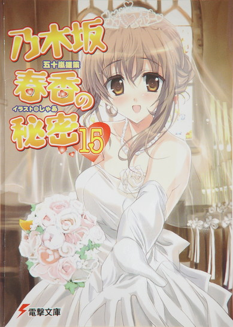
乃木坂春香の秘密⑮
容姿端麗で才色兼備、『白銀の星屑』という二つ名まで持つ超お嬢様、乃木坂春香。彼女が抱える過去のトラウマも解決し、二人で挑む共同作業〝こども〟作りもうまくいき、俺はようやく春香に対する思いを伝えることができた。そしてそれは、お互いの気持ちを確認し合えた矢先、唐突に訪れた──。
春香の父・玄冬から告げられた、春香の結婚話。美夏やメイドさんたちにも内緒で進められ、気づけばいつの間にか俺は乃木坂家から遠ざけられてしまった。
──自分は本当に春香にふさわしく、幸せにすることができるのか......。
尽きない悩みの中、春香の気持ちだけを信じて、美夏たちと共に立ち向かっていくのだが──。
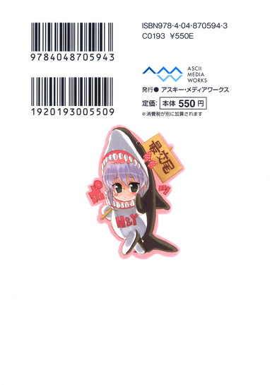
五十嵐雄策
五十嵐雄策の秘密⑮。10月３日生まれのＯ型。第４回電撃ｈｐ短編小説賞最優秀賞を受賞し、文庫デビュー。実はラストエピソードの内容はかなり前から決まっていました。今まで登場したキャラたちも全て出したいという思いやりに、優しい人柄が良く表れてますっ！
イラスト：しゃあ
しゃあの秘密⑮。コミック連載中の『キョウハクＤＯＧ'ｓ』も単行本１、２巻同時に発売予定です。今回のコンセプトは、もちろん春香とのウェディングノリでまとめてみました!!
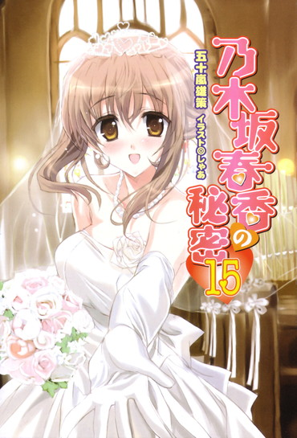
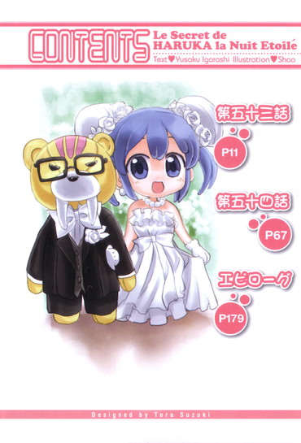
乃木坂春香の秘密 15
第五十三話
０
何が何だか分からなかった。
目の前で起こっている事態に、頭の中が片付け前のルコと由香里さんの汚部屋のようにゴチャゴチャだった。
美夏の口から聞こえてきた言葉。
それはあまりに青天の霹靂であまりにも思考の範疇外すぎて......正直頭がまったくもって追いついてこない。
「ど、どういうことなの、お姉ちゃんが結婚するって......！何で急にそんなことになってるの？相手はだれ？場所はどこ？──あ、ちょ、ちょっと!?」
「......」
「切れた......も、もう、なんなのこれ？ わけがわかんない」
美夏がツインテールを揺らして地団駄を踏む。
その横では。
「え、ええと～、これはどういうことなのですか～？」
「......このようなこと、私も一切聞いておりません。一体何が......」
「──（こ、こくこく......）」
葉月さんたちも困惑した表情で顔を見合わせている。
その様子は真剣でどこまでも切迫したもので......最初はもしかしたらまたツインテール娘たちによる壮大なドッキリか何かなのかもしれないなどとほんの少しだけ思ってもいたんだが、その可能性は完全になくなった。
──春香の結婚。
それは夢でも幻でもなんでもなくて、現実に生じているイレギュラーな事態であることは間違いのないもので......
「おに～さん！ おに～さんは何か聞いてない!?」
「え？ い、いや、俺も何も......」
聞いていない。
聞いていないどころか完全に初聞というか、何をどうしていいかも分からない状態である。
「そ、そうだよね......聞いてるんだったらこんなところで運動不足のお座敷犬みたいにのんびり座ってないで、今頃お姉ちゃんを捜して有能な警察犬みたいにかけずり回ってるだろうし......」
美夏がすぐに思い直したようにそう息を吐く。
と、その時だった。
～～～♪
ポケットの中で俺の携帯が鳴り響いた。
場の空気にそぐわないやたらと明るい音。
この大変な時にだれだ？ またアホ姉かその親友のメシ作れコールだったらすぐにでも切ってやる......と思って出てみると。
「はい、もしもし──」
『──こんにちは、裕人さん』
「！」
その声に思わず携帯を手から落としそうになった。
受話口の向こうから聞こえてきていたのは......秋穂さんの声だった。
「あ、秋穂さん！」
「え、お、お母さん？」
その言葉に美夏たちも反応する。
『お久しぶりね。直接話すのは美夏の誕生会ぶりかしら。──声がするということは美夏たちもそこにいるのね』
「え、ええ......って、そんなことはいいんです！あの、春香のことを聞きました。その、結婚って......！」
『──そう、もうあの人から聞いていたのね』
何かを達観したような声。
そこで秋穂さんは一度言葉を止めて。
『だったら話は早い......。その言葉の通りです。春香のことは──忘れていただけると幸いです』
「!?」
な、何を言い出すんだ、この人は。
突然に打ち込まれた言葉に、応答の声が付いていかない。
『──これまで春香と仲良くしてもらえたことは感謝しています。春香はまだまだ子供で、貴方がいなければここまで人間的に成長することもなかったでしょう。それについては本当にありがたく思っています。──ですがやはり春香と貴方とは違う世界の人間......貴方には貴方の、春香には春香の生きる道というものがある......』
「そ、それは......」
『申し訳ないとは思いますが、その二つが分かたれる時が来たということです。分かっていただけるものと確信しています』
「......」
言っていることは確かに秋穂さんの言う通りだ。
俺は由緒正しいただの一般庶民で春香は世界でも有数の名家である乃木坂家の長女。
その間には......フィーエルヤッペンくらいじゃあ飛び越えることができない大きな隔たりが存在するってことも分かってる。
だけど、そんなことって......
「ちょ、ちょっと、お母さんまで何ゆってるの!?意味がわかんないよ！」
横で聞いていた美夏がそう反論するも。
『美夏......悪いけれど、これはもう決まったことなの。いかに姉と妹とはいえ、あなたが口を出すことではないわ』
「く、口を出すって、そんな言い方──」
『話というのはそれだけです。これ以上何かを論じるつもりはないわ。──それでは』
「あ、ま、待ってってば！ まだ話は──」
ガチャ。ツーツー......
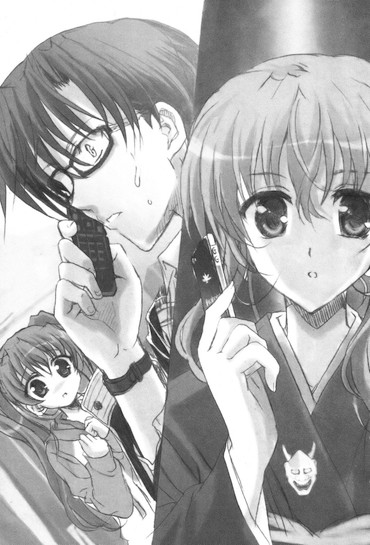
そう言い残されて電話は切れた。
一方的な決別宣告。
受話口からの無機質な音とともに、後には何ともいえない空気と静寂とが残される。
「い、今のってなに？ そ、そんなのってないよ！お姉ちゃんには、おに～さん以外にお似合いな人なんていない！だれだかもよくわかんない相手と結婚なんて、そんなことってありえない！」
「......納得、できません」
「秋穂さまのおっしゃることでも、こればかりは......」
「──（こくこくこく！）」
美夏の言葉に葉月さんたちも険しい顔で首を振る。
「とにかくおに～さん、このままじゃ終わらないよ！何が起こってるのか徹底的に調べあげなきゃ！」
「あ、ああ......」
「おに～さんはいつでも動けるように待機してて。何か分かったらすぐに連絡するから！これはもう......お母さんとわたしたちとの戦争だよ！」
１
──そう美夏が宣冒してから、二週間が過ぎた。
突然の春香の結婚......そして秋穂さんからの決別宣告。
最後の方はどうやって過ごしたかもよく覚えていない夏休みは終わりを告げ、学園では新学期が始まっていた。
だけど──
「は～い、みんな、おはヨーロレリホ～♪ それじゃあ出席を取るわね～ん。......ん～、春香ちゃんは今日もお休みなのかしら～？」
教卓から周りを見渡しながら由香里さんがそう声のトーンを落とす。
いつも通りな三年三組の教室。
だけどそこに......春香の姿はなかった。
「ん～、おうちの人から夏風邪だとは聞いてるけれど心配ね～......早くよくなってくれるといいんだけど～」
「......」
表情を曇らせてくねくねとそう口にする。
そのナチュラルにセクハラな動きが心配という言葉にまるで伴っていないのはともかく。
その言葉に周りのクラスメイトや三馬鹿たちも「乃木坂さんのご尊顔が見られないと生きている気がしない......」「まるで世界から全ての制服とメイド服が消えてしまったかのようです......」「乃木坂春香の消失！乃木坂春香の消失！」とざわめていて。
ホームルームが終わった後には椎菜たちも。
「ねえ裕人、乃木坂さん、大丈夫なのかな......？」
「今日でもう一週間だよね......？ お見舞いとか行った方がいいのかな......？」
「春香っちがこんなに長く休むなんてなかったから、心配だよー」
「ねえねえ、綾瀬っちは何か聞いてないの～？」
心配そうな顔でそう尋ねてくるものの。
「ん、何でもちょっとまだ咳が出るらしくて......でももう大丈夫みたいだ」
「あ、そうなんだ？」
「ああ、まあ......」
俺にはそう答えるしかできなかった。
実際のところ何がどうなっているのかは俺にも分かっていないわけだし、春香が結婚するかもしれないだなんてことをそうそう簡単に言うわけにもいかない。
「そっかー、それならよかった。やっぱり乃木坂さんがいないとさみしいしわ」
「うん、何かが足りない感じです」
「早く春香っちのお日様みたい笑顔が見たいなー」
「そうだね～、なんか日光不足の植物みたいな気分だよ～」
「......」
安心したようにそう言い合う椎菜たちから、何と言っていいか分からない心地で顔を逸らす。
あれから──状況に大きな進展はなかった。
美夏たちも懸命に春香の行方を追ってくれているみたいだが、どうにも進捗は芳しくないらしい。秋穂さんに玄冬さん、その部下である『黒犬』たちが情報を隠蔽しているため、メイド隊の力を使っても春香の現状を探るのは簡単でないようだった。
──そして気付けば春香が姿を消してから半月が経ってしまっていて。
春香のいない日々。
それがだんだんと当たり前になってきてしまっているかのようで......落ち着かない感じなんだよ。
「──ねえ、裕人もだいじょうぶ？」
「え？」
「何だかここのところ元気ない感じだよ？ 何か悩み事でもあったりする......？」
「あ、いや......」
「もし何かあるなら言ってよ。あたしたちでよければ、話くらいは聞けるから」
「そだよー、私たちと綾瀬っちとの仲なんだから、遠慮なんかこれっぽっちもするなー♪」
「悩み、あるんですか......？」
「綾瀬っち、悩みをためこみそうな顔してるからな～」
「......」
口々にそんなことを言ってきてくれる。
その気持ちは嬉しかったし胸にグッとくるものがあった。本当に俺はいい友達に恵まれたな......
「ありがとな。でも、大丈夫だ」
「そっか、ならいいんだけど......」
「ほんとに何かあるならすぐに言えよー。良子ちゃんがガチンコで相談にのってあげるから！」
「りょ、良子ちゃん、は、はしたないよ、ち、ちん......って......」
「そ、それは麻衣っちの方が反応しすぎじゃ......。でも綾瀬っち、相談に乗るのはほんとだから、何かあったら遠慮なく言ってね～♪」
本当にこっちを心配してきてくれている声。
その申し出に感謝の言葉を返して、一人机へと戻る。
「......」
──実際のところ、手がかりはあった。
いまだに春香はおろか、秋穂さんや玄冬さんとも連絡が取れないという美夏たち。
状況的にはほとんどお手上げと思われる現状だけれど、美夏たちが気付いていない春香につながる手がかりとなるだろうものは一つだけあった。
それは──俺の手元にある携帯電話。
そこにある着信履歴に、あの時の秋穂さんからの電話番号が残っていて......
「......」
だけど......今日まで俺はその番号にかけられずにいた。
あの時の秋穂さんの言葉。
今までは玄冬さんが何かの弾みで敵に回るようなことはあっても、秋穂さんは常に味方でいてくれた。
厳しいことを言うこともあったが、いつだって俺たちの話に耳を傾けてくれて、それに理があればちゃんとそれを汲んでくれた。
その秋穂さんが......拒絶の言葉を発した。
それも今までにないとりつく島のない様子で。
そのことが──どうしても心の奥に引っかかって離れなかったんだよ。
「............」
だけどもうそんなことを言っている余裕はないのかもしれない。
美夏たちの調査も行き詰まっている以上、手がかりはもうこの電話番号にしかないのかもしれない。
だとしたら、俺のやるべきことは──
俺は覚悟を決めて。
「......」
「あれ、裕人、どこ行くの？ もう一時間目が始まるよ？」
「ん、すぐに──戻ってくる」
首をひねりながら言う椎菜にそう答えて。
俺は教室を出ると人気のない非常階段脇へと移動して、携帯のボタンに手をかけた。
呼び出し音が鳴っていたのは僅か五秒ほどだった。
だけどそれは永遠にも永久にも感じられるほどの時間。
──ガチャ。
無機質な乾いた音がして。
『──はい、もしもし』
「あ......」
受話口の向こうから、少しくぐもった秋穂さんの声が聞こえてきた。
「あ、あの、え、ええと......」
何と切り出そうか迷う。
すると。
『裕人さんですね。かけてくるとは思っていたわ。──いえ、むしろ遅かったと言うべきかしらね』
「あ......」
戻ってきたのはそんな声。
その声はあの時と同じように感情を感じさせないもので冷たさすら感じられる。
『それで、何のお話かしら？ ......まあ、この番号にわざわざかけてくるということは一つしかないとは思いますけれど』
「......」
全てお見通しってわけか。
それは......そうだよな。状況が状況だしこの期に及んでわざわざ電話をしてまで訊くことなんてたった一つだろう。
だったらヘタな小細工をしても仕方がない。
俺はゴクリとツバを飲み込んで。
「......はい。春香の、結婚のことです」
『......』
「春香の結婚......やっぱり、納得できません！あまりにも突然というか、状況が分からなすぎて......せめてもう少し詳しい話を聞かせてください！」
思い切って心にわだかまっていた問いかけをぶつける。
『......』
その問いかけに秋穂さんは受話口の向こうで黙っていた。
だがやがてそれまでと変わらぬ声音で口を開いて。
『──それを聞いて、何が変わるというの？』
「え？」
『詳細を聞いて貴方が納得できるというのなら話しましょう。結婚相手の素性から今に至るようになった詳しい経緯まで、全て。だけど裕人さん、貴方が言いたいのはそういうことではないでしょう』
厳かな口調でそう言ってきた。
「それは、どういう......」
『貴方がその胸に抱いているのは、春香の結婚そのものに対する反対の感情......春香への......執着。貴方は春香がだれかのものになってしまうことを恐れて、焦っている。そうではありませんか？貴方の中にそれがある以上、何を説明してもそれを受け入れることなどない。違いますか？』
「......っ......」
秋穂さんの言葉はこの上なく正鵠を射ていた。
俺の中に渦巻いている感情。
それは確かに春香の結婚の詳細を知りたいなんてことでなくて......それを何とか止めたいという焦りにも似た気持ちだ。
言葉を返せずにいる俺に。
『......それ自体を否定する気はありません。人の感情というものは各々のものですし、それを発露するのも個人の権利です。だけれども──』
そこで一度秋穂さんは声を止めて。
『──はっきり言うわ。貴方は春香に......何をしてやれるのかしら？』
「!?」
その言葉は俺の胸の奥底に刃のように突き刺さった。
『私たちだって人の親......娘には考え得る限り最高の幸せをつかんでもらいたい。そしてそれにはうってつけの相手がいることが分かっている。俗な話だけれども、家柄、学歴、経済力......そういったものは目に見えた分かりやすい形で利点として表象される。もしも人柄が同じ二人の人間がいたとしたならばそれらを持っている方を人は選ぶでしょう。......だけど貴方はどうなのかしら？』
「え......」
『春香に対して感情を向けるのはいい。想いを寄せるのは構わない。だけどそれを超える幸せをあの子に与えられるというの？春香の笑顔をどんな時にでも守り通すことができると、言うことができるのかしら？』
「そ、それは......」
言い返せない。
家柄、学歴、経済力。
そういったものは、俺にはまったくもって無縁と言っていいものだ。
だけどそれ以外に──俺に何があるのか。
だれかに自慢できるような特技があるわけじゃないし、成績も中の中、スポーツだって取り立てて得意なわけじゃない。
できることといえば炊事と洗濯、掃除くらい。だけどそれだって別に周りから褒められるようなものではなく、ごく普通のだれにだってできるレベルだ。
持っている者、与えられている者に比べて誇ることができるものなんて何もない。
俺には胸を張って春香の横に立てる拠り所が......何もない。
だったら一体、俺には何があるというのか......
電話の向こうで秋穂さんが息を吐くのを感じた。
『......答えられないのですね』
「......」
『......そうですか。それにすら満足に答えられないようなら、もはや何も話すことはありません。......貴方には失望しました』
「お、俺は......」
『さようなら裕人さん。お話は終わりです。貴方と会うことももはやないでしょう。もう、この番号にもかけてきませんよう、お願いしますね』
「あ、秋穂さん......！」
『──それでは』
プツッ。
それだけで通話は切れた。
「あ......」
決定的な最後通告の言葉。
俺はその場に、固まったように立ち尽くすことしかできなかった。
２
──それからどんな風に時間が経ったのかほとんど記憶に残っていない。
ほとんど茫然自失な状態のまま教室に戻ってきて授業を受けて。
教師の説明などまったく意識に入ってこないまま数時間が過ぎていて。
気付けば放課後になっていた。
「それじゃあみんな、今日のおねいさんの肉体を使ったうるとらせく～授業はお・し・ま・い♪不純異性交遊とかはほどほどにして、健全におうちまで帰るのよ～ん♪さような裸族～♪」
由香里さんのセクハラな挨拶が教室内に木霊するも、それすら頭に入ってこずに。
「......」
完全に放心状態だった。
思考がバラバラで何も考えられない状態。
頭の中では秋穂さんに言われた言葉がグルグルと回っていて──
『やはり春香と貴方とは違う世界の人間......貴方には貴方の、春香には春香の生きる道というものがある......』
『──はっきり言うわ。貴方は春香に......何をしてやれるのかしら？』
『それを超える幸せをあの子に与えられると、春香の笑顔をどんな時にでも守り通すことができると、言うことができるのかしら？』
『......貴方には失望しました』
「......」
そんなのは分かりきっていたことのはずだった。
春香は完全無欠な超お嬢様で、俺は取り柄のないただの一般庶民。
それは今までさんざん身に染みて体験してきたことのはずだったのに......周りの直接関係のない第三者に言われるのと、秋穂さんに言われるのとでは言葉の重みが違った。
「............」
もうどうしたらいいのか分からなかった。
悪い夢の中にでもいるような心地のまま、フラフラとカバンを持って教室を出る。
「あ、裕人、もう帰るの？」
「......」
「裕人......？ あ......」
背中から追ってくる椎菜の声も上の空に。
決められたルートをただなぞるように廊下を歩き下駄箱を通り校門を出て。
......そのままどこをどう歩いたのかはよく覚えていない。
歩き慣れた通学路を辿っていって電車に乗ったことくらいは頭に残っていたけれど......それだけだ。
ほとんど惰性で足だけが動いていて──
「............」
──気が付いたら、俺は秋葉原に来ていた。
春香と何度も過ごした思い出深い賑やかな街。
何だってここに来てしまったのか分からない。
ここに来たって春香に会えるわけじゃないのは分かってる。
こんな現実逃避みたいなことをしたってどうにもならないことは分かってる。
だけど......勝手に足が向いてしまっていたんだよ。
「......どうしようって......いうんだろうな......」
そんな言葉がひとりでに口をつく。
自分の行動すらもう......何なんだか分からない。
どこに向かえばいいかも分からないまま休日には歩行者天国にもなっている大通りを歩いていると。
「あれ、そこにいらっしゃるのはもしかしてご主人様ですか？」
「え......」
どこからか声をかけられた。
振り返ってみるとそこにいたのは、以前に春香といっしょに行ったネコ耳メイド喫茶のネコ耳メイドさんだった。
「あ、やっぱりそうです♪ 以前はご帰宅いただいてどうもありがとうございました♪あれ、今日は春香様はごいっしょじゃないんですか？」
「え......」
「春香様ですよ～♪ 美しくてお優しいうるわしのお嬢様......ご主人様といつもごいっしょでしたよね？」
「......」
いつも、いっしょ......
「......あ、あー、すみません、今日は俺一人で......」
「え、そうなんですか～？ 残念です......あ、でもまたお二人でご帰宅されるのを楽しみに待っていますね♪お二人とも、とってもお似合いでしたから♪」
「......」
そう笑顔で言ってきてくれるネコ耳メイドさんに曖昧に頭を下げて別れる。
『いつもいっしょ』『お似合いな二人』
その言葉が、今は胸に痛くて......
「......っ......」
それらを振り払うように頭を振って視線を別の方向に向ける。
だけどそこにも春香といっしょに入ったアニメグッズの店。
辺りを見回してみれば、たくさんの人や店で賑わうカラフルな街は春香との思い出でいっぱいだった。
どこに行っても、春香といっしょに楽しく過ごした記憶がよみがえってきて......
「............」
何だって......こんなことになってるんだろうな。
だれに言うともなしにに問いかける。
ほんの少し前までは全てがうまくいっていた。
楽しくて賑やかで笑いがたえない毎日。
春香が傍にいて──笑ってくれていて、美夏や葉月さん、那波さんにアリスが周りにいて、学校では椎菜たちとも楽しくやっていた。玄冬さんや秋穂さんも常にというわけではないけれど温かく見守ってくれていて......
それが今では......
「......」
......俺は、どこかで甘えていたのかもしれない。
心のどこかで秋穂さん（と玄冬さん）は何だかんだいっても味方なんだって甘えていて、自分と春香との間にある壁を見ようとしていなかったのかもしれない。
そのツケが今こういった形で払われようとしているんだったら......
「............」
何かしらの、絆があると思った。
目には見えないけれど確かに存在する心のつながり。
だけどそれは──こうして失ってしまえば、まるで最初からなかったかのように、夏の夜の幻のように儚いものに思えてしまって......
「......くそっ......」
首元にある春香からもらったテレスコープ型のチョーオーが力なく揺れる。
自分の無力さに泣きたくなった。
心の底から叫び出したくなった。
何でこんなに......俺は何もできないんだよ。
３
そんな沈んだ状態のまま何日かが経過していき。
動きがあったのは──それから三日が経った日曜日のことだった。
まだ日が天まで昇りきらない正午前。
何もやる気が湧かずに部屋でベッドの上に力なく横たわっていた俺のもとへ......美夏たちが転がるような勢いで飛び込んできた。
「おに～さん、見つかったよ！」
ドアを開けて部屋に入ってくるなり興奮した調子でそう声を上げてくる。
「聞いておに～さん！ お姉ちゃんが、お姉ちゃんがや～っと見つかったの！」
「時間はかかりましたが、何とか所在をつかめました～！」
「......遅くなってしまって、申し訳ございません」
「──（こくこく！）」
ベッドの上にまで身を乗り出してそう報告してくる。
だけど俺の心はまるで電源スイッチが切れてしまったかのように力が入らなくて......
「......？ おに～さん、どうしたの？ お姉ちゃんがやっと見つかったんだよ？うれしくないの......？」
「............」
「おに～さん......？」
「裕人様～？」
「......いかがなされたのですか？」
「──（こく？）」
美夏たちが怪訝な顔でのぞき込んでくる。
それに対して俺は──
「......やっぱり、俺なんかじゃダメなのかもしれない......」
「え？」
「やっぱり......俺なんかじゃ春香とは釣り合わないのかもしれない......。俺には何の取り柄もないし、家だってごく普通の中流家庭で......」
「は？ おに～さん、何ゆってるの？」
美夏がツインテールを揺らしながら何を言っているのか分からないって顔をする。
「......今さらだけど、秋穂さんの言う通りなんじゃないかと思う。俺には何も誇れることなんてなくて、春香の隣に立つ資格なんてなくて......」
「......ねえ、おに～さん、それほんきでゆってるの......？」
「......」
「......ほんきなら、怒るよ......？」
その言葉には、本気の怒気が含まれていた。
このツインテール娘には珍しい憤りを含んだ感情。
顔を少し赤くさせて美夏は続ける。
「自分がお姉ちゃんと不釣り合いだなんて、本当にそう思ってるの!?隣に立つ資格がないだなんて、ほんきで！分かってるの？それってお姉ちゃんが別のだれかと結婚しちゃうってことなんだよ？おに～さんはそれでいいっていうの!?」
「美夏様～？」
「──（こ、こく？）」
「とめないで那波さん、アリスちゃん！これをほんとに言ってるんだったらわたし、見過ごせないよ！お姉ちゃんにとって──わたしたちにとって自分がどんな存在なんだか、分からせてあげなきゃ！」
強い調子の言葉。
那波さんとアリスが困ったように顔を見合わせている。
さらにツインテールを震わせて言葉を続けようとする美夏に。
「......美夏様、おやめください」
それまで沈黙を保っていた無口メイド長さんがそう口にした。
「葉月さん！ でも！」
「......お気持ちは分かります。お怒りになられるのももっともだとも......。......ですが、ここは私にお任せくださいませんか？」
「え......？」
「......差し出がましい意見だとは思います。ですがどうかここはお任せください。お願いいたします」
そう言って深々と頭を下げる。
それを見て美夏も渋々ながら納得したようだった。
「......わかった。葉月さんがそこまで言うんだったら、任せる」
「......美夏様......」
「その代わりちゃんと役目を果たしてくれなきゃだめだからね。おに～さんにきちんと自分の価値ってものを分からせてあげて」
「......ありがとうございます。了解いたしました」
「......お願い、ね、葉月さん」
そう言うとちらりと俺の顔をもう一度見て。
美夏たちは部屋を出て行った。
美夏たちは去り、部屋の中は葉月さんと俺だけになった。
二人きりの六畳ほどの部屋。
時計のカチカチ......という音だけがやたらと耳に残って響く。
そんな中。
「......さて、何からお話しいたしましょうか」
「......」
「......そうですね、この期に及んで回りくどい前置きは不要でしょう」
そう静かに言って葉月さんは目を閉じると。
エプロンのところで手を握り合わせて。
「......裕人様、私は乃木坂家に──春香様のお傍にお仕えするのに十分だと言えるでしょうか？」
「え......？」
それほどういう......
質問の意図が分からずに葉月さんの顔を見返す俺に。
「......言葉通りです。この私は春香様のメイドとして相応しいか......世界でも名だたる乃木坂家の長女にして第一後継者である春香様......そのお傍にお仕えする者として、私は資格を満たしていると言えるでしょうか？」
「そんなの......」
言うまでもなく満たしているに決まっている。
だれよりも春香のことを考えて、だれよりも春香のために力を尽くす完璧なメイド長。
この人が不適格で......いったいだれが相応しいのかという話である。
「......そうですか」
その言葉に葉月さんは小さくうなずいて。
「......では、これを聞いた後ではどうでしょうか」
「......？」
何かを決意したようにゆっくりと顔を上げると。
「......私は、孤児なのです」
「え......？」
一瞬発せられている言葉の意味が分からなかった。
孤児？ 今、孤児って言ったのか......？
その言葉の意味するところは、両親がいなくて天涯孤独の身ってこと、だよな......？
それを肯定するように葉月さんはうなずいて。
「......まだほんの乳飲み子の頃に、北海道の時計台の下に捨てられていたそうです。身元を示すようなものは何もなく、ただ毛布にくるまれただけで......。そこをたまたま通りかかった王季様と平蔵様に拾われて、そのまま育てていただきました」
「本当、なんですか......？」
「......はい」
「そんな......」
突然の告白に頭が付いていかない。
だけど言われてみれば前にこのメイド長さんは「自らを語るほどのルーツがない」というようなことを言っていた気がする。あの時は何を言っているのかよく分からなくて首をかしげるだけだったけれど、まさかそれがこんなことだったなんて......
何と返していいか分からなくて言葉を失う俺に。
「......それを踏まえてみて、どうでしょうか？」
「え......？」
「......私自身は、そのようにどこのだれかも分からない出自です。京都でも一、二を誇る伝統のある老舗旅館の一人娘である那波さん......一族全てが法曹関係者で元々は政財界にも名を連ねる名家出身の水面さん......江戸時代から続く御殿医の家系である鞠愛さん......関西でも随一と名高い名門料亭の跡取りである小鮎さんたちなどから見れば、私などはこの乃木坂家でメイド長を勤める資格などないといっても過言ではないでしょう」
「それは......」
一瞬だけ言葉に詰まるものの、すぐに思い返す。
確かに表面の事実だけ見ればそうかもしれない。
だけど実質はそういうことじゃないはずだ。
葉月さんはその生まれがどうのこうの以前に春香にとって大切な存在で、他のだれよりも春香のことを想って春香のために尽力してきたことは確かなはずであって──
「......それは裕人様、あなたも同じではありませんか？」
「え......っ......」
不意打ちな言葉だった。
「......裕人様は他のだれよりも春香様のためにがんばってこられました。一年前に初めて春香様の秘密が露見してしまいそうになった時も、玄冬様と対立されて家出をされた時も、そして春香様が過去と向かい合って悲しみ泣いておられる時も......。そして春香様への想いは他のだれよりも大きく強い......。それは私と何が異なるというのでしょうか？」
「それ......は......」
その一連の言葉に声が返せない。
葉月さんの言っていることを否定するということは葉月さん自身を否定するのと同じこと。
だけどどうしても自分自身がそこまでの価値のある存在とは思えなくて......
どうにもできずにいる俺に。
「......全ては裕人様次第です」
「え......？」
「裕人様が春香様の傍にいたいと願えば、我々の力を求めていると一言おっしゃれば、たとえ秋穂様や玄冬様に逆らうこととなっても、我々は喜んで貴方の矛となり盾となりましょう」
「......お、俺、は......」
「......私に言えるのは、そこまでです」
そう言って葉月さんは一度小さく目を伏せて。
「......ですがこれだけは覚えておいてください。私たちは裕人様のことが大好きです。大好きで、かけがえのない存在......。裕人様......あなたは、私たちが春香様とともにお仕えするべき主として認めた御方なのですから......」
真っ直ぐに俺の目を見ると。
深々と頭を下げたのだった。
──美夏たちが帰り、一人になった。
再び静かになった部屋。
帰り際に美夏たちは。
『い～い、おに～さん。お姉ちゃん救出作戦は三日後に決行するから。その時までにちゃ～んといつものおに～さんに戻ってびしっとしてなきゃ、今度こそせっかんなんだからね！』
『......裕人様』
『信じていますからね～』
『──（こくこく！）』
そう念を押して帰っていった。
その声音は俺の奮起を当たり前のように信じているようで。
さらに頭の中ではさっき葉月さんに言われた言葉が何度もリフレインして響いていて......
「............」
俺は......どうしたらいいんだ......
もう分からなかった。
色々なことがありすぎて頭の中も胸の中もグチャグチャになってしまっていて......
........................
............
......
「......」
......そのままどれくらい経っただろう。
気が付いたら日も暮れて夜になっていた。
カーテンを開け放しのままの窓から見える外は真っ暗で、部屋の中にまで黒くて沈んだ闇が浸食してきている。
だけど俺は電気を点けることもできずにベッドの上で横たわるしかできず......
するとドアの方で何か物音がした。
「......？」
「──どうした裕人、こんな暗い中で灯りも点けずに」
「ルコ......」
ふいに暗がりから声をかけられた。
見てみるといつの間にか開け放たれたドアのところに立っていたのは、スーツ姿のルコだった。
「乃木坂さんの妹さんやメイドさんたちが来ていたのは知っていたが、もう帰ったのか？何やら深刻な雰囲気だったようだが......」
「......」
訝しむような声。
その問いに返事をすることができずにいると。
「......何かあった、のか？」
「え......？」
「何かお前の心をかき乱すような大きなこと......。それも乃木坂さんのこと、なんじゃないのか？」
「......っ......！」
何でそれを......
驚いて顔を上げルコを見ると。
「私を馬鹿にするな。事情を知っているわけではないが、お前の様子を見ていればそれくらいは何となく分かる。さっきの妹さんたちの雰囲気からもな。それにここ最近乃木坂さんの姿を見ていない。何かあったと考えるのが普通だろう」
「......」
......どうしてこのアホ姉は、普段はガラパゴスのゾウガメほどに鈍いのにこういう時は鋭いんだろうな。
よりによってあまり突っ込んでほしくないこういう時に......
静かにこっちを見下ろしているルコの並みならぬ直感に声を返せずにいると。
「──なあ、裕人、私はお前の姉だ」
「......えっ」
ルコはふいにそんなことを言い出した。
「お前が今乃木坂さんの何に悩んでいるのか、詳しいところは私には分からない。だがお前はたった一人のこの世で平等に血を分けた姉弟。私はお前のことを愛している。何よりも大切に思っている。もちろん乃木坂さんやその家族たちのことは好きだ。だがそれは──あくまでお前の関係者だからだ」
「......」
「お前が大切に思っているものだから......お前の一部だと思っているからこそ好ましく思っている。あくまで主体はお前だ。──だから」
そこでルコは言葉を切って。
「周りが何を言おうとも......私はお前の選択を尊重する。進むのもいい。それならば私はお前の前に立ちはだかる者を全て薙ぎ倒すだろう。だが......その逆だって然りだ」
「......」
「お前が退くことを選ぶのなら......他のだれが何と言おうと、たとえ由香里が何と言おうとも、私はお前を守ろう。退くことは別に逃げることと等しいわけじゃない。それだって立派な選択肢の一つだ」
「ルコ......」
「言いたいことはそれだけだ。もう遅い。温かくして寝ろよ。今夜は九月にしては──冷える」
それだけ言って、ルコは部屋を出て行った。
その背中は優しさと気遣いに溢れていて、温かな思いやりが垣間見えて......
「......」
何だってこんな時に......そんな姉らしいことを言うんだよ......
４
三日という時間はあっという間だった。
人生の大きな岐路の一つとも言うべき重大な決断をするにはあまりにも短すぎる期間。
美夏たちが迎えに来ると言っていた時間は昼の十二時。
それを目の前にして......俺は学園にいた。
「......」
座り慣れたいつもの机。
だけどそれが普段とは違ったもののように目に映る。
まるでこの世界が別の世界になってしまったかのようであって......
「............」
ここに来て俺はまだ自分の立ち位置を決めきれずにいた。
春香への気持ちと自分がわきまえるべき立場。
優柔不断と言われるかもしれない。
煮え切らないと言われるかもしれない。
だけど......目を閉じると秋穂さんの拒絶の言葉や、葉月さんの促しの言葉、ルコの諭しの言葉が交互に頭に浮かんできて......どうしても踏み切ることができないんだよ。
進むことと退くこと。
春香のもとへと行って結婚を引き留めることと、諦めて全てを受け入れること。
そのどちらが選ばなければならない選択肢なのか......
机の上で顔を手で覆いながら、終わらないその問いを頭の中で巡らせていて。
いつ終わるとも知れなかった葛藤の時間は──終わりを告げた。
「──裕人！」
「......？」
耳に響いてきたそんな大きな声。
見れば険しい顔をした椎菜たちがこっちに向かって駆け寄ってきていて......
「裕人、何してるの！ こんなところでのんびりしてる場合じゃないんでしょう！」
「え......？」
「美夏ちゃんたちから聞いた！ 乃木坂さん、今大変なことになってるって！結婚......しちゃうかもしれないって！」
「......」
そうか、美夏たちもとうとう言ったのか......
確かにここまで欠席が続けば椎菜たちだっておかしいと思うだろう。春香との関係性からも考えて、椎菜たちに伝えられても不思議はない。
椎菜は真っ直ぐに俺の顔を見つめて。
「......言ってくれなかったことはしょうがないと思ってる。それはできれば一言くらい相談してほしかったけど......でもそれは乃木坂さんの個人的でデリケートな問題が絡んでるから仕方がなかったって納得できる。だけど......今は何をしてるの！」
「え......」
「裕人がいる場所はここじゃないでしょ！こんなところで悠長に座ってる場合じゃないでしょう！美夏ちゃんたち、もうすぐ乃木坂さんのところに向けて出発するって言ってたよ！」
俺の肩に手をやりながら真剣な顔でそう言ってくる。
その様子は真摯でどこまでも真っ直ぐで、本気で俺のことを心配してくれていることが分かった。
だけど......
「......分からないんだ......」
「え？」
「......どうしたらいいか、この場に至っても決められなくて......」
頭の中を巡り巡っている葛藤。
それは椎菜に促された今も続いていて......
その俺の言葉に椎菜は。
「どうしたらいいって、そんなの答えは決まってるじゃない。このまま黙って見てたら乃木坂さんは結婚しちゃうんだよ？あたしたちの前からいなくなっちゃうかもしれないんだよ？それを何とかするためには、できることなんて一つしかないよ！」
「それは分かってる。だけど......」
「裕人......！」
「............」
椎菜の顔から目を逸らす。
椎菜の言っていることは分かってる。
それはこの上なく正論で、この上なくもっともな意見だ。
けれどその正論を掲げる資格が自分にあるのか......やり遂げるだけの力があるのか、もう分からなくなってきてるんだよ......
椎菜の言葉に答えられずにいると。
「──くじなし」
「え......？」
「──裕人の、いくじなし......っ......！」
パ......ン......ッ......
そんな乾いた音とともに、頬に熱い衝撃を感じた。
決して強いわけではないけれど頭の奥にまで響くような感覚。
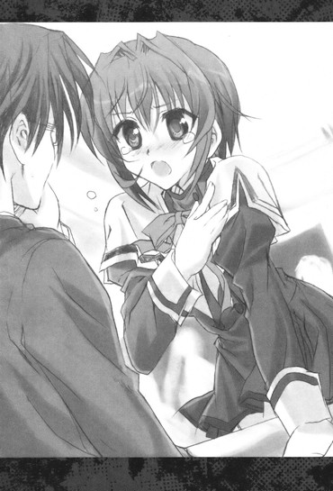
叩かれたところに手を当てて思わず椎菜の顔に目を戻すと。
「──そんなの、裕人じゃない」
「しい、な......？」
「......あたしの好きな裕人は、そんなこと言う男の子じゃなかった！どんな時だって前を向いてて諦めるなんてことは絶対にしなくて......！乃木坂さんとの関係は見ててちょっとだけ複雑だったけど、それでも一生懸命に乃木坂さんを想って乃木坂さんのためにがんばる裕人のことが大好きで......でも、でも──」
そこで一度何かを思い切るかのように言葉を切って。
「でも──今の裕人はそうじゃない！ 問題から目を逸らして、逃げてるだけだよ！」
「にげ......てる......？」
「そうだよ！ 一番大切なのは乃木坂さんの気持ちなのに......乃木坂さんが結婚のことをどう思っているのか、裕人のことをどう想っているのかなのに......！でも裕人が一番に気にしてるのはそうじゃない！裕人は周りからの反応を怖がってるんだよ！自分は乃木坂さんに相応しいのか、結婚に反対することで他の人たちからどう思われるのか......。でもそんなのは周りが決めることじゃない......その二人が並び立つのに相応しいかどうかを決めるのは、二人の気持ちなんだよ......！」
「......!?」
それは頭をガツンと殴られたような衝撃的な言葉だった。
──一番大切なのは......春香の気持ち......
春香が......どう思っているか......
そのことは分かっていたはずだった。
そんなのは十分すぎるくらい十分に分かっていたつもりだったはずなのに......これまで直面したことのないくらいのイレギュラーな事態に余裕がなさすぎて、頭から飛んでたんじゃないのか？
秋穂さんの拒絶の言葉。
誇ることのできるものを持たない自分への劣等感。
春香の隣に立とうとすることへの周囲からの反応。
そんなことばかりを気にかけていて......肝心の春香の気持ちを確かめることもしようとしないで......
「......っ......！」
......本当に、馬鹿だ、俺は！
思わず歯噛みする。
これじゃああの時と......春香が騙されてアイドルになりかけた時と同じじゃないか！
あの時も椎菜に後押しをされるまでそのことに気付けなかった。
本当に大事なことから目を背けて逃げてしまっていた。
春香の声を聞く前に勝手に諦めてしまっていて......
「......」
──そうだ、今回も俺は......まだ春香の声を聞いていない。
春香が結婚に対してどう思っているのか、俺のことをどう想ってくれているのか......そして何より告白の続きを、ちゃんと聞いていない。
それを確認するまでは──全てを諦めるのは早すぎる！
「......そう、だよな」
「え......？」
「......大事なのは春香の気持ち......それを聞こうとする努力を全てやり切るまでは、こんなところでグダグダといじけてる場合じゃない！」
「裕人......！」
椎菜がこっちを見て声を上げる。
「......うん......それでこそ裕人だよ......いつだって一途で直向きで、あたしが好きになった人......」
「ありがとう、椎菜。そして悪い......いつも面倒をかけて......」
「ほ、ほんとだよ。これはもう今度イカ料理専門店でイカのフルコースでもおごってもらわないと割に合わないかなってくらい♪」
「ああ、ぜひおごらせてくれ」
「うん、楽しみにしてるよ♪」
泣き笑いのような表情を浮かべる椎菜にうなずき返して。
「──さあ、そうと決まったらまずは春香を連れ戻さないとな。確か美夏たちとの待ち合わせ場所は......」
「あ、校門だって言ってたよ。表門の前のところに迎えに来るって......」
「そうか、だったらそこに──」
急いで教室を出て移動しようとして。
と、その時だった。
「──その言葉を、まってたよ、おに～さん♪」
「え？」
耳慣れた舌足らずな声が辺りに響き渡った。
どこからかスピーカーか何かで拡張されたような声。
そして次の瞬間。
ゴウ──ッ！！
「!?」
耳をつんざくような轟音とともに。
空を無数の灰色の影が埋め尽くし、窓の外にある校庭に白塗りのジェット機が次々に何機も降り立った。
「あ......な......」
な、何だ、戦争でも始まるのか？
どれもこれも軍用だし何だかミサイルやら重火器やらを装備しているのが素人目にも見えるし......
周りではクラスメイトたちも「とうとうミサイルが飛んできたのか......っ!?」「テレビのドッキリか何かかな......？」「何かの演習でもやることになったのか......？」と窓際に集まってざわざわと騒いでいる。
そんな喧噪の中物騒極まりない戦闘機の中から出て来たのは──
「やっほ～、おに～さん、や～っと決意したみたいだね♪もう、待たせるんだから～」
「み、美夏!?」
「へへへ～、ぷりてぃ～美夏ちゃんただいま参上だよ～♪迎えにきたよ、おに～さん♪」
「那波さんもいますよ～♪」
「......お迎えです」
「──（こくこく♪）」
まったくいつも通りなツインテール娘に、にっこりメイドさん、無口メイド長さん、ちびっこメイドのかしましトリオだった。
だけどそれだけではなく。
さらには。
「水面さん、鞠愛さん、小鮎さん......沙羅さんたちに理緒さん、祝さんも......」
「こんにちは裕人様。ご無沙汰をしております」
「きちんと健康的な生活を送ってらっしゃいましたか？」
「............お、おひさしぶりです......」
「裕人様をお迎えに」
「参りましたっ」
「いっしょに行きましょうー！」
「ひさしぶり、いつかの実験台になりかけてくれた時以来だね」
「こんにちは。生き霊の方は無事に離れたでしょうか？」
それぞれ個性豊かな、序列持ちメイドさんたち。
別の戦闘機から揃って顔を出して、こっちに向けて手を振っている。
「こ、これって......」
「あのね、事情を話したらみんなおに～さんに協力してくれるって♪乃木坂家メイド隊序列持ちメンバーオールキャストだよ♪」
「他の序列なしメイド隊たちも裏方で援護をしてくださるそうですよ～♪」
「......裕人様の人徳です」
「──（こっくり♪）」
「あ......」
その嬉しいサプライズに思わず声が漏れる。
この場に揃い踏みしてくれた乃木坂家のメイドさんたち。
主である秋穂さんや玄冬さんに逆らうかもしれないその行為は、メイドさんとしてはかなり迷うものであっただろうに......
「......ありがとう......何て言ったらいいか......」
「──礼には及びません。今回の秋穂様たちの行動はメイド侍従長として疑問を挟む余地のあるもの......。主の行動に疑問を持ったらそれの真意を探るのもメイドとしての勤めと言えましょう」
「ふふ、水面さん、素直ではありませんね。裕人様が落ち込んでらっしゃると聞いて、顔色を変えていましたのに」
「ま、鞠愛さん......！」
「ふふふ♪」
「............ゆ、裕人様のことは関係ありません。そ、そのような私情などは......」
水面さんが珍しく慌てた様子でごにょごにょとつぶやいていて。
「あら私たちは」
「裕人様のことが大好きですよっ？」
「すっごくいい男だと思ってますー！」
「............こ、この件がうまく終わりましたら、裕人様と、また包丁や料理についてお話がしたいです......」
「まあ、あたしの実験の被験者になってくれたらもっと好きになるかもしれないけれどな？」
「裕人様のことは陰ながら何度か拝見いたしましたが、素敵なオーラをお持ちだと思っております」
「......」
その気持ちが泣きたくなるほど嬉しかった。
ついさっきまでどうしていいか分からずにグダグダと迷っていた俺なんかのために、こんなすごい能力を持った優秀なメイドさんたちがそんなことを言ってくれるなんて......
感極まった心地になる俺に。
「──さ、おに～さん、お話もい～けどそろそろ出発するよ？お姉ちゃんがいるところまではちょ～っと時間がかかるから」
「ん、ああ、そうだな」
美夏の言葉にうなずき返して校庭に降りようとして。
そういえば春香がいる場所ってどこなんだ......？
色々それどころじゃなくて聞きそびれていたが、こんなどこぞの空軍一個師団もかくやという戦闘機集団を引き連れて向かわなければいけない場所って......
「ふふ～、それは行ってのお楽しみ......って言いたいところだけど、今回は時間がないから言っちゃう。おに～さんも知ってるところだよ～♪」
「......？」
俺の知ってるところ......？
そんな俺の疑問に。
美夏はぱちりといたずらっぽくウインクをして、こう答えたのだった。
「──さ、行くよ。いざ決戦の地、ハッピースプリング島へ！」
＋ ＋ ＋
──同時刻。
白城学園から離れたとある屋敷の一室では、以下のような会話が交わされていた。
「......それで、準備はできたのかしら小犬川？」
「──はい。九割方は完了でございます、お嬢様。後は必要な支度を終えて、お嬢様が現地へ飛ぶのみで......」
「......そう、まずまずね」
体育館ほどの広さの大広間の真ん中にある豪勢なイスに座って、女王のように足を組み替えながら少女がつぶやく。
「こっちの戦力はどれくらいかしら？ それなりのものを用意したんでしょう？」
「──ぬかりはございません。その気になればそこいらの小国とも戦えるほどは用意いたしました。天王寺家の東方司令部のおよそ七割の戦力ですが......」
「......なるほど、なかなかに奢ったものね。......まあ相手はあの乃木坂家の本家なわけだし、今回のことは身内の不始末が少なからず関わってもいることだし、次期当主としてはそれくらいの責務を負わないわけにはいかないわ。ふん、面倒だけどしかたないわね」
「──ふふふ、そう仰ってはいますが、お嬢様にはそれよりも大事なことがあるのではありませぬかな？あのお方に恩を返すことができる、今回はそのまさにうってつけの機会なのですから」
「......っ！ な、何のことかしら？」
「おとぼけなさらずとも......。ロドリゲス殿でございますよ」
「......し、知らないわね、そんなエリマキトカゲみたいな名前......」
焦ったような少女の様子に傍に立つ老執事がクスリと笑みを漏らす。
「......ま、まあそれはいいわ」
気を取り直したように少女はこほんと咳払いをして。
「とにかく準備が整っているのならわたしたちもすぐに向かうわよ。支度なさい、小犬川！」
「──はっ。お嬢様の仰せのままに......」
そう執事を引き連れて。
屋敷の地下へと向かったのだった。
第五十四話
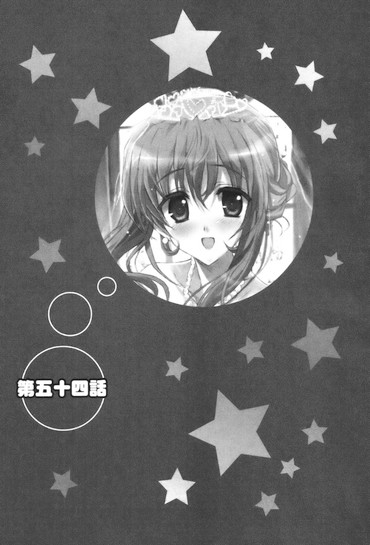
０
二度目のハッピースプリング島は、どこか剣呑な雰囲気に包まれていた。
赤道直下に浮かぶ常夏の島。
熱帯魚が泳ぐ透明なマリンブルーの海とどこまでも広がるような青い空と砂浜とに覆われたトロピカルリゾートが、今は警備用なのか周囲にはヘリやら戦闘機やらが飛び交っていて、さらに島の至るところにいかつい顔をした黒服（ライフルを持っているようにも見える......）たちが徘徊している。
「むう、すごいな......」
戦闘機『清水寺』（那波さんの専用機らしい）の窓から眼下の景色を目にして思わずそんな声が漏れる。
まるで厳戒態勢の軍事要塞みたいだ。
美夏たちの話では、ここにそびえ立つ『ヴァルハラ城』の最奥の『ニーベルンゲンの間』で......春香の結婚式は執り行われるという。
「さ、ようやくここまで来たけど......まずはあの警戒網をどうにかして抜けないとね～」
「......警備を担当しているのは主に『黒犬』たちのはずです。簡単ではないかと」
「なかなかにハードな状況ですね～」
「──（こく）」
美夏たちがそう口にする。
まあそれは当然の光景なんだが......
「う、うわあ......すごいところだね。この島全部が乃木坂さんの家のものなんだ......」
「んー、でもハッピースプリングっていうよりもアングリーウインターって感じだねー。アルカトラズみたいだー♪」
「りょ、良子ちゃん、そんなに前屈みで覗き込んだら後ろからスカートの中が見えちゃうよ......！」
「ん～、麻衣っちはほんとにむらむらのスカートの中が気になるんだね～」
「女子のスカートの中身は男子の求める永遠の桃源郷と言えよう」「パラダイスでありユートピアでありエリシュオンですね」「しかし俺たちは一度たりとも澤村さんの聖域を垣間見たことすらない。鉄壁だ......」
「あははー、ねえ裕人ー、いい眺めだねー」
「......」
......いや、何でいるんだ？
二十人乗りの『清水寺』の機内には美夏たちの他に......なぜか椎菜たちや三馬鹿、それに信長までもが乗り込んでいた。
「え、だって美夏ちゃんたちがあたしたちも来ていいって......。何かできることがあるならやっぱり力になりたかったし......」
「綾瀬っちばっかり頼られるのはずるいってー。私たちだって春香っちの友達なんだぜー」
「な、何ができるかは分かりませんけれど、私にできることなら......」
「はるはるのためだったら粉骨砕身でがんばっちゃうぜ～」
「乃木坂さんの危機とあっては、我々が駆けつけぬはずがないだろう！」「乃木坂さんあってこそのエキサイティングなディベートですから！」「ハイル春香様、ハイル春香様！」
「あははー、裕人のためなら僕はどこにだって行くっていつも言ってるじゃないかー」
「......」
口々にそんなことを言ってくる。
......まあ、百歩譲ってもうそれはそうだとしても。
「ふむ、この島に来るのも久しぶりだな。以前に来たのはもう一年近く前になるのか......」
「うふふ～、またおいしいお酒がたくさん飲めるのかしら～♪」
「............」
......いやこの二人はおかしいだろう？
由香里さんは戦闘機到来時に教室にいなかったし、ルコに至ってはあの場にいる道理すらないと思うんだが。
だけど。
「水くさいことを言うな。乃木坂さんはもはや私にとって妹にも等しい存在だ。その人生の天王山と聞けば何を置いても出向くに決まっている」
「あらら～、おねいさんがいたら邪魔だっていうの～？裕くんと春香ちゃんとの感動の〝卒業〟シーンをかぶりつきで見ることくらいしかもう楽しみがないんだから、それくらいいじゃな～い」
「......」
「まあまあおに～さん、難しく考えちゃだめだよ。何であっても援軍は多い方がい～じゃん、たぶん♪」
「......。......そうだな......」
これ以上深く考えても来てしまったものはもうどうしようもないだろう。もう自然現象だとかそういうものだと思って割り切るしかない。
「──さ、それで本題に戻るけど～」
と、美夏が真面目な顔になってそう口にした。
「さっきも言ったけど、お姉ちゃんがいる『ニーベルンゲンの間』に辿り着くためにはまずあの『ヴァルハラ城』に潜入しないといけないの。そのためには、どうにかしてここを突破しないといけないわけだけど......」
「むう......」
『清水寺』の窓から島の方に目を遣る。
あの厳重な防衛ラインを突破するのは簡単なことじゃないだろう。
いったいどうしたものか......
と、その時だった。
『──美夏様、ここは私たちにお任せください』
そんな声が機内のスピーカーから流れてきた。
無線から聞こえてきたこの声は......『始皇帝』を操縦している菖蒲さんか？
『私たち姉妹が今から三機で先行して警備を攪乱します。その隙に美夏様たちは島の裏側から上陸してください』
『この防衛陣形から見て、裏側は比較的手薄なはずですからっ』『みなさんは遠慮なく行っちゃってくださいー！」
この上なく軽い感じにそんなことを言ってくる。
「え、で、でも菖蒲さんたちだけじゃ......」
『心配はご無用です。あの程度の防備ならば、私たちだけで十分......』
『こういった多対一の空戦には慣れていますからっ』
『朝飯前のお茶漬けですー！』
「......」
その声に僅かな間だけ美夏は迷っていたようだったが。
やがて顔を上げて。
「──わかった。お願い、菖蒲さん、沙羅さん、樹里さん」
短くそう声を返した。
『お任せください』
『すぐに道を開いて見せますっ』
『美夏様たちはＦ22ラプターに乗ったような気分で待機していてくださいね！』
その言葉に明るい口調で答えて。
『──さあ、久しぶりに〝バニラ・スカイの黒い悪魔〟と呼ばれた私たち六条三姉妹の力を見せてやりましょう』
『うん、行こうっ』
『ごーごだよー、お姉たちー！』
そんな声とともに、『始皇帝』『冬将軍』『第六天魔王』が警備の戦闘機やヘリの只中へと向かっていく。
直後に三機がまるで生き物のように連携の取れたコンビネーションで宙を舞って。
島の周りを巡回していたヘリの一つが爆発をした。
「お......」
それを皮切りに、辺りを飛んでいた戦闘機やヘリが次々に撃墜させられていく。
『ちゃんと動力部と武装部だけを狙っていきますよ。黒犬は敵ではないのですから』
『分かってるって、お姉ちゃんっ』
『めんどくさいけど、ちゃんとポイントは外してるからー！』
その俊敏な動きは素人である俺から見ても圧倒的で──
「......六条三姉妹は、もともと某国の空軍出身なのです」
「え？」
「......その中でも選ばれた者のみが与えられる空軍十字賞を揃って得たほどのエリートです。言葉の通り、心配はいらないでしょう」
「そ、そうなんですか......」
よく分からんがすごい経歴だな......
「さあ、それじゃあ菖蒲ちゃんたちがかき回してくれている内に行きますよ～♪」
操縦桿を握る那波さんが楽しそうにそう声を上げて。
ギュン──ッ......！
「お、おわっ......!?」
『清水寺』が急旋回をしてその方向を変えた。
「しっかりつかまっていてください～。少し荒っぽく行きますから～♪」
「あ、荒っぽくって......」
「れっつらご～です～♪」
「の、のわあああああっ!?」
そのまま勢いよく加速して。
島の裏側へと向かって一直線に飛翔したのだった。
１
「ま、まだ頭がグラグラする......」
『清水寺』から地上へと降りて。
ソバ屋の配達バイクの荷台のように揺れる頭を押さえながらそう口にする。
「う～ん、おに～さんは相変わらず乗り物に弱いな～。そんなんじゃうまく女の子を乗りこなすこともできないよ？」
「......乗り物を制する者は女性を制す、です」
「──（こくこく）」
「ええと～、なるべく安全運転にはしたつもりだったのですが～」
「............」
それであれか......
空中で三回くらいきりもみ回転をした上にほぼ地面に向かって真っ直ぐに突っ込んでいったように見えたぞ......
椎菜たちも。
「あ、あれ......？ 北海道に帰る時に何回か乗ったけど、飛行機ってこんなに激しいものだったっけ......？」
「じ、地面がまだ回って見えます......」
「えー、私は意外と楽しかったけどなー。ジェットコースターとフリーフォールが一つになったみたいでー♪」
「だよね～♪ 新感覚のアトラクションって感じ～♪」
「お、俺は生きているのか......？」「お、お祖母ちゃんがメイド服を着て川の向こうで手を振っています......」「ニ、ニアデス......ニアデス......」
......まあ澤村さんと澤北さんのダブル澤コンビは平然としていたのはともあれ。
そんなリアル絶叫マシーンタイムを経て、俺たちの乗った『清水寺』と水面さんや他のメイドさんたちが乗った別の戦闘機は、無事に発見されることなく城の裏手に着陸したのだった。
「......さ、どうぞ。こちらの裏門から入ることができます」
葉月さんの案内に従って表門に比べれば控えめな裏門から城の中へと潜入する。
『ヴァルハラ城』は相変わらず威容だった。
荘厳にしてどこまでも厳粛。
だけどあの時とは違い、城内にもやはりどこか落ち着かないというか不穏な感じの空気が漂っている。
「すごい......ほんとにお城なんだねー......」
「こんなの、初めて見ました......でもなんかものものしいっていうか、重苦しい雰囲気で......」
「だねー。昔、野良ヤマアラシを素手で捕まえた時みたいに肌にぴりぴりくる感じだよー」
「野良ハリセンボンを素手で捕まえた時にも似てるかも～」
椎菜たちも同じことを感じているのか、そんなことを口にしている。
「それでそれで葉月さん、お姉ちゃんのいる『ニーベルンゲンの間』はどこにあるの？わたしもここの詳しい構造はよく分からないんだよ～」
「......『ニーベルンゲンの間』は城内最奥にあるチャペルです。順当に行けば四十分ほどで着くはずですが......」
「そう簡単にはいかないでしょうね～。おそらく城内にも最大級の警備が敷かれているはずですし～」
「──（こく）」
顔を見合わせてそう言ってくる。
まあ普通に歩いて四十分かかるってのはどこのラストダンジョンだよっていう突っ込みはともあれ。
やっぱり城の中には警備が配置されているのか......
とすると少なめに見積もっても倍、ヘタしたらそれ以上の時間がかかるかもしれない。
果たしてそれで間に合うのか......
そんなことを考えながら通路を進んでいた時だった。
「......！ お隠れください」
「！」
ふいに葉月さんが何かに気付いたのかそう声を上げた。
それを受けて通路にあった巨大なドラゴンの像の陰に慌てて身を隠す。
見れば視線の先には、手に無線機を持って辺りを見回しながら歩く黒服三人の姿があった。
「み、見つかった......？」
「......大丈夫です。この距離ならばまだ索敵範囲外のはず──」
葉月さんがそっと声をひそめながらそう言ってくる。
だが。
「......！ 気付かれた？ まさか......」
不意をつかれたような無口メイド長さんの声。
見れば黒服たちはそのサングラス超しの視線をこっちに向けたかと思うと。
懐から特殊警棒のようなものを取り出しそのまま襲いかかってきた。
「......お下がりください！」
「アリスちゃん、双翼の陣でいきますよ～！」
「──（こくっ！）」
葉月さん、那波さん、アリスの三人がそれぞれ得物を取り出して前に出る。
あっという間に三対三の交戦状態になる。
とはいえこっちには戦闘においてもエキスパートな序列持ちのメイドさんたちである。
楽勝とまではいかなくとも特に難なく切り抜けられると思ったんだが。
「......くっ」
「こ、これはなかなかハードですね～」
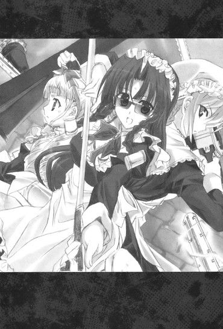
「──（こくこく！）」
そうもいかないようだった。
戦いは一進一退で、ほとんど互角と言っていい勝負をしている。
「......これは、『黒狼』部隊です」
「え......？」
俺たちを背にかばいながら葉月さんがそう口にした。
黒狼......？
うろ覚えだからよくは分からないけれど、確か黒服たちは黒犬と呼ばれている集団なんじゃないのか？
その俺の疑問に。
「......黒狼は黒犬の上にある上位機関です。玄冬様直属の最精鋭部隊であり、そのほとんどが各国の特殊部隊や諜報機関出身であるという出自を持っていて......」
「そんな集団が......」
今まで家出してうちにやって来た春香を取り戻しに来た時も、ピアニストのポリープ先生とやらの会食をエスケープして秋葉原に来た春香を追ってきた時も、そんな物騒な部隊は出て来なかったってのに......
それだけ玄冬さんも本気ってことか......！
「......那波さん、アリスちゃん、本気でいってください。気を抜いたらやられます......！」
「は、はい、もうやっています～」
「──（こくこくっ！）」
そのまま交戦は十分ほど続けられた。
チェーンソーや巨大ハンマー、斬馬刀に特殊警棒が入り乱れる渡り合い。
だがやがて──
「......終わりました」
肩で息をした葉月さんがそう静かに言い放って。
意識を失った黒服三人が、通路に横たわっていた。
「だ、大丈夫ですか？ ケガとかは......」
駆け寄っていってそう確認する。
「......はい。ただ──」
「？」
葉月さんは深刻な顔になって。
「......この場は何とか切り抜けられましたが、まさか黒狼が出て来るとは思っていませんでした。黒犬ならともかく......黒狼が相手ではあまり大人数で来られるとまずいかもしれません」
「春香様のもとに辿り着くまでにあまり消耗したくありませんし～」
「──（こくこく）」
真剣な口調でそう言ってくる。
葉月さんや那波さん、戦闘が専門のアリスをもってしても楽にはいかない相手ってことなのか......
だけど確かに今の戦いを見る限りその言葉にうなずかざるを得なかった。
序列持ちのメイドさんと互角の戦いを繰り広げる黒狼部隊。こんなのが大人数で押し寄せてきたら、さすがに超人的な能力を持つこの無口メイド長さんたちとはいえ対処するのは厳しいかもしれない。
そう考えて不安な心地になっていると。
「......っ！」
葉月さんが再び厳しい目で通路に視線をやった。
見ればその先に──さっきと同じように手に特殊警棒を持った黒服が新たに三人、こっちに向かって走ってきているのが目に入った。
「......こんなに早く集まってくるなんて！」
「もしかしたら、通信室に報告されたのかもしれません～！」
「──（こくこく！）」
メイドさん三人が緊張した表情になる。
「......ともあれ見つかってしまった以上は捨て置くわけにもいきません。何とか対処しないと......」
そう言って葉月さんたちが前に出ようとして。
「──ここは、俺たちに任せてもらおうか？」
そんな声が横から聞こえてきた。
「え......？」
声を発していたのは......永井率いる三馬鹿たちだった。
「お前たちは先に行け。この場は俺たちが引き受ける」
「え、な、何を言って......」
「言っての通りだ。あの黒服たちは俺たちが相手をするからその間にお前たちは先に進めと言っている。──もちろん真正面から戦ったりはしないさ。自慢じゃないが腕力にはまったくもって自信がない。だが、引きつけて逃げることくらいはできる」
「この場でこれ以上時間と体力を無駄にするわけにはいかないのでしょう？ならば僕たちの出番というわけです」
「なに、乃木坂さんの関係者だという話じゃないか。捕まったところで、そこまでひどいことにはならんはずだ」
「そ、それはそうかもしれないが......」
だからといって無事に済むという保証もない。
それにこんな右も左も分からない場所で黒狼なんていう物騒な集団に追跡されるなんて考えただけでもぞっとしないってのに......
「いいから、早く行け！」
「たまには僕たちにもいいところを見せさせてください！」
「裕人にばかりいい格好はさせておけないからな！」
「永井、小川、竹浪......」
普段はメイド服とニーハイソックスの組み合わせがどうとかだとか制服のスカートは無地がいいかプリーツがいいかだとかのワケの分からんディベートばかりしているこの三人がこんなことを言い出すなんて......
その心意気に何と言っていいか言葉が出なくなる俺に。
「──ほら、こっちだ！ 俺たちはお前らの大好きな乃木坂さんの秘蔵写真を持ってるぞ！」
「放っておいたらネットオークションに出品してしまいますよ！」
「ぬるぬる動くスペシャル動画もあるぞ！」
「......！」
その声に黒服たちの顔が変わる。
「今のうちだ、行け！」
「必ず乃木坂さんを助け出してください！」
「そして俺たちのことを英雄だと伝えてほしい。望みはそれだけだ！」
「え、だ、だけど......」
どうしていいか分からない俺に。
「おに～さん、行くよ！ えっと......三馬鹿さんたちの気持ちを無駄にしないで！」
「あっ......」
美夏にぐいっと腕を引っ張られる。
そのまま方向を変えて。
三馬鹿たちが逃げていったのと逆側の通路へと走ったのだった。
「三馬鹿たち......」
永井たち三人が消えていった方を見ながらそう声を漏らす。
通路の先は暗くなってしまっていて、もう三馬鹿たちも黒狼たちの姿も見えない。
無事だといいんだが......
「......おそらくは大丈夫だと思われます、裕人様」
「葉月さん......？」
「......あのお三方が仰っていた通り、黒狼たちはプロフェッショナルです。徒に春香様のご学友を害するようなことはないはず......」
「ですね～、その辺りの教育は行き届いていると思われますので～。ね、水面ちゃん？」
「はい。捕縛することはあれ、何の抵抗能力もない一般人を傷付けるような真似をすることはまずないと言っていいでしょう」
「そうですか......」
メイド隊序列一位、三位、四位のメイドさんたちが揃ってそう言うのならきっと安心していいところなんだろう。
だったらここは気持ちを切り替えて前を向いていかないと。
俺は顔を上げて。
「──それで、これからどうするんですか？ このまま『ニーベルンゲンの間』を目指して進む感じで......」
「......いいえ。まずは通信室を押さえようと思います」
「通信室？」
「......はい。このヴァルハラ城内全体の監視と警備とを行う監視室。おそらく城に入った時点で捕捉されてしまったのでしょう。先ほどの黒狼たちもそこからの指示で追跡してきたのだと思われます」
「......」
確かにそれは早めに何とかしておかないとまずそうだ。
あんなターミネーターみたいなのが後から後から追跡してきたらやってられない。
「分かりました。それでその通信室というのはどこに......」
「......今、向かっております。果たして狙ってのことかは分かりませんが、三馬鹿様たちは通信室とは逆の方向に黒狼たちを誘導してくださりました」
「ナイスアシストでしたね～」
「──（こくこく）」
「......」
そうなのか......
だが何となくそれも納得できる感じだった。
あの三人はアホだけど何というかそういう妙なところで妙な引きを持ってくるところがあるような気がするというか......
ともあれこの好機を逃す手はない。
「──じゃあ、このまま進みましょう。せっかく永井たちが作ってくれたチャンスです」
「......はい」
葉月さんのうなずきを受けてそのまま進んでいき。
何とか他の黒狼と出くわすことなく──通信室の前まで辿り着くことができた。
だが......
「......まずいですね」
「どうしたんですか？」
「......通信室の前に、見張りがいます。あれを何とかしないと......」
確かに扉の前には六人の黒服の姿があった。
それぞれが手に特殊警棒やらスタンロッドやらを持って、サングラス越しの鋭い視線で辺りを見回している。
あの六人を扉の前からどけないことには中に入るのは難しいだろう。
「んー、道に迷ったふりをして話しかけるのとかはダメかなー？」
「あの、火災報知器とかを反応させてそっちに注意を引き付けるとかは無理でしょうか......？」
「わたしが色じかけでろうらくさせるとかは～？」
皆でそんなことを言い合う。
そんな中。
「あの、葉月さんたち頼みの意見で恐縮なんですが、倒すことはできないんですか？簡単ではないと思いますけど、さっきのを見る限り無理ではないんじゃ......」
決して楽な戦いとは言えなかったが、それでも葉月さんたちの方が実力的には勝っていた。
ここは乱暴な手段だが、実力行使をすれば何とかなるんじゃ......
しかしその言葉に葉月さんは首を横に振って。
「......確かに倒すことは可能です。黒狼は手強い相手だが勝てない相手ではない......。しかし数が多すぎるのです。数が多すぎてどうしても制圧までに騒がれてしまい、騒ぎに気付かれて扉をロックされてしまう恐れがある......。中からロックされてしまっては、どうしようもなくなってしまいます」
なるほど、そういうわけか......
ということはつまりは見張りをうまくドアの前から引き離す必要があるってことだが、だけどどうやって......
目の前の難題に頭を悩ませていると。
「──ふう、ここはおねいさんの出番かしらね～♪」
「え......？」
そんな明るい声が飛んできた。
唇に人差し指を当てながらこっちを見ていたのは──スーツ姿のセクハラ音楽教師だった。
「ここは私に任せてもらえるかしら～ん。あの黒くてごついメンズたちをあそこからどければいいのよね～ん？ばっちりヤってみせるから～♪」
「え、でも......」
この人にそんなことどうやって......？
まがりなりにも年上で大人な人だが、こと戦闘力といった意味ではこの人は俺よりも役に立たないだろう。
だけど。
「ちっちっち、そんな風に考えるのは早漏よ～ん、裕く～ん。ほら、ここに来る途中の大広間に、黒光りして太くて立派なあれがあったでしょ～♪」
「あれ......？」
「そう、あ・れ♪ 男前な、グランドピアノ♪」
「グランド──ああ......」
確かにあった気がした。
だけどそれでいったいどうやってあの黒服たちをどうにかしようっていうのか......
「今からおねいさんがあそこに戻ってあれを弾いて狼ちゃんたちを十分間引き付けるわ～ん。その隙に、メイドちゃんたちは通信室を占拠すればオールオッケーよ～♪」
「え、いやそれは......」
いくら何でも無茶だろう。
ピアノの音を不審がって確認はしにくるかもしれないが、それで十分間引き付けるってのはさすがにムリが──
「お前は由香里のピアノを見くびっているようだな」
「え......」
と、そこで口を挟んだのはルコだった。
「由香里のピアノは私がこの世でただ一つだけ本物だと認めた音楽だ。本気になった由香里のピアノには不思議な魔力がある。聴く者を惹き付けてやまない圧倒的な魅力が。悪いが乃木坂さんですらまだ本気になった由香里には及ばない......。たとえその黒狼とやらが音楽に一欠片の興味がなかったとしても、一度聴き入ったらそう簡単にその場から動くことはできないだろう」
「......」
由香里さんのピアノ、そんなハーメルンの笛吹きみたいなものなのか......？
普段は酔っ払いで生活能力ゼロなただの生きるセクハラの申し子みたいな人なのに......
「おに～さん、そうゆうことならおね～さんにお願いしてみようよ。ここはそれが一番確実な気がするし......」
「むう......」
確かに他にいい手はないし、ここはこの由香里さんのピアノの力を信じてみるしかないか......
「分かりました。由香里さん、お願いします」
「はいは～い、おねいさんにぜ～んぶ任せておきなさ～い♪」
「大丈夫だ。私も由香里に付いていく。何かあってもこの『瑠璃髑髏』で敵は蹴散らしてみせよう」
「じゃあちょっと行ってくるわね～ん」
そう言って由香里さんたちは大広間に戻ろうとして。
「あ、そうだ、裕く～ん♪」
「え？」
「ちゃ～んと春香ちゃんを助け出しなさいよ～？結婚式から女の子を連れ出すのは男の子の花道なんだから♪あ、腕に抱き上げる時には、せ・っ・ぷ・ん（はあと）を忘れずにね～♪」
「......」
まったく、こんな時までセクハラ発言をせんでもいいだろうに......
──でも、ありがとう、由香里さん。
＊
「──それにしてもルコ、あなたまで付いてくることなかったのに～♪」
「む？」
他に人のいない静まり返った大広間で。
由香里さんはグランドピアノのフタを開けながらそう言った。
「私なら一人で何とかなるわよ～ん？ ちょこっとピアノを弾くだけなんだから。ルコは裕くんにいっしょに付いていってあげればよかったんじゃない？」
「──裕人なら大丈夫だ。妹さんにメイドさん、クラスメイトたちと心強い仲間たちがたくさんいる。ここから先は私の助けなどいらないだろう。──それに由香里、お前は私がいないと寂しいだろう？」
「え～、おねいさんとしてはまだまだ裕くんを男の子にするためのレッスンをしたかったんだけどな～♪」
そこでぱちりとウインクをして。
「でもまあいっか。こうやっていつもみたいにルコといっしょに何かをするっていうのも悪くないし、肉体を張って男の子を大人の階段へと導くのが、いい大人のおんなのお勤めってやつよね～ん♪」
「ふっ......そういうことだ。さあ、久しぶりに『宵闇の独奏者』の演奏で私を酔わせてもらおうか」
「ん～、ルコは厳しいからな～。でも、だからこそやりがいもあるんだけどね～♪」
「ふふ、楽しみにしている」
「了解♪ ──さ、ひさしぶりにやりますか～♪おねいさん、ハッスルしちゃうわよ～ん♪」
そう腕まくりをしながらにっこりと笑って。
おもむろに鍵盤の上に指をかざしたのだった。
２
通信室を占拠するのにかかった時間は僅か五分ほどだった。
大広間の方から由香里さんのピアノの音（ここで聴いていてもそのすごさが分かった......）が聞こえてきた直後に黒服たちの六人中五人が扉の前から去って。
それを確認した葉月さん、那波さん、アリスの三人が疾風のごとき素早さで残った一人を倒した後、通信室に入り中にいた黒服二人を一瞬の内に無力化して。
それこそカップラーメンにお湯を入れている間くらいの時間で、通信室の制圧は完了したのだった。
「......数で勝っていればこの程度は当然です」
「先ほどの面目躍如と言いましょうか～♪」
「──（こくこく）」
葉月さんたちがこともなげにそう口にする。
やっぱりこのメイドさんたちは黒狼にもまったく劣らない並々ならぬすごい逸材なんだな......
「ん～、それで通信室をゲットしたけど、どうするの？この変な機械みたいなの、全部壊す。？」
「......いえ、それはまだ早計です」
「そうですね～、最低限として監視機能の停止、できればハッキングしてしまって監視システムをこちらのものにしてしまいたいところですが～」
「ハッキングはそう簡単ではないでしょう。ここがハッピースプリング島である以上、乃木坂本家と同じWizard システムを使用しているはずです。あれのセキュリティを破るのは......」
那波さんの言葉に水面さんがそう答える。
「ですよね～。だとしましたら、やっぱりここは監視機能を停止させてかつ陽動の意味も含めて美夏様のおっしゃる通り破壊してしまうのが一番かも......」
那波さんがそう言ってハンマーを振りかざそうとしたところで。
「ふっふっふー、やっと僕の出番が回ってきたみたいだねー♪」
そんな楽しげな声が後ろから上がった。
それまで不気味なくらいにやたらと静かだった......十年来の幼なじみ（♂）だった。
「信長......？」
「こういったことなら任せてよー。ここのシステムをハッキングすればいいんでしょ？それならたぶん何とかなるからー。えっとここをこうしてあっちをああして......」
どこから取り出したのかノート型のパソコン（壁紙が全体的に肌色だ......）を操作しつつ、同時にポケットから携帯電話を取り出して耳に当てる。
「あ、もしもしー、真尋？ 僕だけどー」
（......は？ 僕じゃ分からないわよどこの馬の骨......って、信長？）
「うん、そうだよー。僕僕ー。そこはほらー、兄妹の絆ってやつで分かってほしいところだなー？」
（......何それ、気持ち悪い）
「もー、相変わらず真尋は口が悪いなー。──ま、それはツンデレの一環として受け取るからいいとしてー......それでさー、前に言ってたやつ、用意はできてるー？」
（え？ 何だかよく分からないけど信長の部屋にあるパソコンを言う通りにいじれってやつ？それはできるけど......はっ、そんなことより、もしかしてそこに裕にぃがいるの!?）
「よく分かったねー。うん、いるよー」
（......っ！ だったら早く替わって！ わたしは今裕にぃ分不足なの！深刻な裕にぃエネルギー危機なの！信長から放出された腐った毒電波みたいな声なんて聞いてる場合じゃないんだから......っ......！）
「腐った毒電波はひどいなー」
（いいから！ 早く！）
「分かった分かったってー。──裕人ー、ちょっといいかなー？」
「え、ああ。相手は真尋ちゃんなんだろ？ なら......」
「ん、お願いー」
うなずき返して信長から携帯を受け取る。
「もしもし──」
（裕にぃ？ 裕にぃなの!?）
「あ、ああ......」
（わ、わぁ......久しぶりの裕にぃの声だっ！ 裕にぃの周波数だ！裕にぃのお耳の恋人だ！）
「......」
相変わらずテンション高いな......
（あのねあのね、わたしずっとずっと裕にぃに会いたかったの！野乃から電話があった時も思わずスタジオに向かって走っちゃったし、バレンタインの日にお家にまで行ったんだけど会えなかったし、それからも一週間に三回は裕にぃの家の前で張り込みをして、一晩に十五回は裕にぃのことを想って裕にぃといっしょに沖縄にハネムーンに行く夢を見て、一日に百八十五回は携帯の写真フォルダに入った裕にぃの写真を眺めてなのに、ことごとく裕にぃとは行き違いだし......うう、運命の神様は嫉妬深い女神様で裕にぃとわたしを引き裂こうとしてるのかな......？）
一ヶ月くらいペットホテルに預けられっぱなしだった仔犬みたいな哀しげな声が聞こえてくる。
う、うーむ、なんか知らんが色々とあったみたいだな......
「え、ええと、それは悪かった......。俺もできれば真尋ちゃんには会いたかったんだが......」
（ほ、ほんとっ!? う、ううん、いいの！ その気持ちだけでわたしの心はハートでフルフルだし、これはきっと裕にぃとわたしにロマンティックな再会をプロモートするための運命の神様の試練だと思う！デスティネーションだよ！やっぱりわたしと裕にぃは宿命的に結ばれる巡り合わせ──）
興奮したような声がさらに続くが──
「裕人──、楽しそうなのはいいけど、あんまり時間がないからそろそろ本題に入ってよー」
「え、ああ、そ、そうだな......」
そう言ってくる信長にうなずき返して。
「あのさ、真尋ちゃん」
（え......？）
「話の腰を折るようで悪いんだけど、頼みがあるんだ」
（裕にぃが私に？ な、何？ 何でも聞くよ！）
即座にそんな声が返ってくる。
なんかそこまで一生懸命というか全力で楽しみにしてくれてると悪い気もするんだが......事態が事態だし、ここは直球で行くしかない。
「その、大したことじゃないんだが......」
（う、うん、何？）
「悪いんだけど、信長の言うことを聞いてくれないか？」
（え......？）
「納得のいかないところもあるとは思うんだが......ここは信長の言う通りにしてくれないか？緊急事態なんだ」
（......）
その声に真尋ちゃんは少しの間黙り込んでいた。
だけどすぐに思い切ったように大きく息を吐いたかと思うと。
（......う、うん......！ よく分かんないけど、裕にぃのためなら......わたし、信長を社会的に完膚無きまでに抹殺することだって何だってできるから（はあと））
そんな声が携帯から返ってきて。
「ん、オッケー。それじゃあやるよー！」
さらに信長の楽しそうな声（いいのか......？）が重なって。
「じゃあ真尋ー、まずは僕の部屋にあるパソコンを全部起動してくれないかなー。次にその中にある『NOBUNAGA ver8.0』っていうアプリを立ち上げてデスクトップに常駐させてー。その後に今から言うコマンドを打ち込んで──」
（ちょ、ちょっと、もっとゆっくり言ってよ！ほんとに無駄に早口なんだから......ぶつぶつぶつぶつ......）
携帯の向こうで真尋ちゃんがばたばたと動く音が聞こえてきて。
それと同時に目の前で信長は目にも止まらぬスピードでパソコンのキーボードと通信室の操作盤を叩きつつ、さらには携帯とスマートフォンを並行して操作していく。むう、何をやってるんだかさっぱり分からんな......
そんな感じにしばし八面六臂の作業をしていて。
やがて。
「よし、これでだいたいオッケーかなー。それじゃあ──」
楽しそうににっこりと笑って。
「フィーバータイム......スタート！」
そんなかけ声とともに。
信長が手元のボタンのようなものを操作した。
ブンッ──
「お......」
部屋内にあったいくつものディスプレイがそんな音を発して一度全部真っ白になったかと思うと、次の瞬間。
『は～い、みんな元気～？ みんなの心のマジカル債権回収人、ドジっ娘アキちゃんだよ～♪どじどじ～♪』
全てがどこかで見たアニメ絵のスクリーンセイバーになった。
「よーし、成功成功──♪ ばっちりだねー♪」
「あー信長、これは......」
「んー、システムをハッキングして、ドジっ娘アキちゃんモードにしたんだよー。おそらく黒服たちに届く通信もアキちゃんとメグちゃんの声になってるんじゃないかなー♪あ、流す通信自体はちゃんと偽のそれらしいのを流して攪乱しておくから大丈夫だよー」
「そ、そうか......」
よく分からんが相変わらず妙なところで律儀だな......
「......信じられません、Wizard システムがこうも短時間で破られるとは......」
「す、すごいですね～......」
「こ、この方は何者なのですか......？」
その横で葉月さんたちが信じられないといった声を上げていた。
うーむ、さらりとやっているように見えたがやっぱりこれはこの超絶メイドさんたちが手放しで賞賛するくらいにはものすごいことなんだな......
虫も殺さないような顔をした幼なじみの相変わらずの規格外なハイエンドっぷりに何とコメントしていいか分からずにいると。
「さ、もう大丈夫。ここは僕に任せて裕人たちは先に進んでよー」
「一人で大丈夫なのか？」
「うんー、ここにいれば監視と防衛のシステムを自由に操作できるし、ドアのロックも中からかけられるから、まず平気だよー」
「そうか......」
信長がそう言うのならそうなんだろう。
もうその辺に関してはこの幼なじみに対する信用は揺るぎないというか。
「──分かった、じゃあここは任せた！」
「うん、がんばってきなよ、裕人ー！」
そんな信長の声を背に受けて。
通信室を後にしたのだった。
３
「──ここから『ニーベルンゲンの間』まではあとどれくらいかかるんですか？」
上品に塗装された高級内壁から剥き出しのレンガ造りの壁に変わった通路を走りながら。
隣に並ぶ葉月さんに問いかける。
「......だいぶ奥まで来たはずです。本来ならば、あと十五分ほど進んだ先にあるはずなのですが......」
「？」
何か問題でもあるんだろうか。
疑問に思い葉月さんの顔を見ると。
「......城内の配置が変わっています」
「え？」
「......以前に見たものと城内の構造が変わっています。一年前にはここにこのような通路はありませんでした」
「このように整備されていない通路があるなど、春香様のための『ヴァルハラ城』からすれば考えられないことです～」
「先ほどの通信室の位置も微妙に変わっておりました」
口々にメイドさんたちがそう言ってくる。
「それはどういう......？」
「......考えられることは、あの春香様の誕生パーティｌ以降に秋穂様たちが造り変えたという可能性......」
「というより、それ以外には考えられません～。この『ヴァルハラ城』の構造を変えるなどということは玄冬様と秋穂様、王季様くらいにしかできませんから～」
「ほぼ間違いないと言ってもいいでしょう」
「......」
つまりは秋穂さんたちは、だいぶ前からこういう事態が起こることを予測していたってわけか......
城内の構造を知っている葉月さんたちが敵として侵入してくるという可能性。
それはひいては春香の結婚はそこまで前から計画されていたということを意味するのであって......
「......」
......いかんいかん！
深く考え込むとまたネガティブな気分になってくる。
春香のもとに辿り着くまでは余計なことを考えないって決めたはずなのに。
ブルンブルンと出走前の競走馬のように頭を振って雑念を振り払う。
と、そこで通路が終わりを告げた。
何やら開けた部屋のような場所に出る。
「ここは......」
そこは何やらおかしな部屋だった。
広さは教室二つ分ほどで特に目立った部分はない。
ただ部屋の中央には目隠しをした女神像のようなものが立っていて、その左手には秤のようなものが握られている。
「えっと、扉はあっちにあるみたい。とりあえずこの像は気にしないで進めばい～のかな？」
「......いえ。扉はロックされていて開かないようです。どこかに別の道などは......」
「う～ん、ざっと調べたところそういったものはないようですね～」
さらに見回してみればその周りには石でできた羽根の形をしたオブジェ、剣の形をしたオブジェ、ハートの形をしたオブジェのようなものが置かれていて......
「この中からあの秤に釣り合うものを選んで載せろということでしょうか～？」
「......それらはフェイクということも考えられます。石像自体には意味がないという可能性も」
「右手も空いてるみたいだけど、そこに何か持たせたりするのは違うの～？」
皆でそう話していて。
「──これは、ローマ神話の正義の女神、ユースティティア......」
「え？」
と、水面さんがふいにそんなことを口にした。
「目隠しと秤、そしてブロンズの女神......ほぼ確定でしょう。ルドルフ・フォン・イェーリンクの『権利のための闘争』にはこうあります。〝剣なき秤は無力、秤なき剣は暴力〟。ということは......」
「水面さん......？」
「ここで女神が持つべきは、これで間違いないはず......」
そううなずくと。
床に横たえられていた剣のオブジェを持ち上げて、そのまま女神の右手に握らせた。
ガチャン！
同時にそんな大きな音がして。
それまで石のように閉じられていた扉の鍵が開かれた。
「すっご～い、よく分かったね～、水面さん！」
「アヌビスの真実の秤かと思って羽根かとも考えてしまいました～」
「......お見事です」
「──（こくこく）」
美夏たちが驚いた顔でそう水面さんの方を見る。
「これは司法の公正さを表す正義のシンボルです。最高裁判所にあるブロンズ像や弁護士のバッジにもなっていて、法曹にたずさわる者ならばだれもが知っている基本的な知識です。......ですが──」
「水面さん？」
と、様子がおかしかった。
見ればドアの鍵が開く音に紛れて気付かなかったが、いつの間にか女神像を中心として鉄格子のようなものが天井から降りてきていて、水面さんの周囲を覆っていた。これって、トラップ、か......？
「......水面さん、今お助けいたします」
「アリスちゃん、破りますよ～！」
「──（こくり！）」
葉月さんと那波さんとアリスが鉄格子を破ろうとする。
だが。
「──行ってください」
「......え？」
「私のことはこのまま放置して行ってください。おそらくこれは炭化タングステンとコバルトを焼結して作られた超硬合金......破るのにはそれなりに時間がかかります。今は時間が惜しい。私は自力でこれを何とかして後から追います」
眼鏡の縁に手をやりながら冷静にそう口にする。
「......ですが」
「行ってください」
「......分かりました」
葉月さんがそううなずいて。
「......行きましょう」
「え、でも......」
「......水面さんの言うことが正論です。私たちにはもう時間がない。大丈夫です。メイド隊にとってこれくらいの状況は日常茶飯事です」
「葉月さん......分かりました」
無口メイド長さんの目を見てうなずき返す。
水面さん本人と葉月さんがそう言うのなら......ここは素直にそれを聞き入れるべきなんだろう。
水面さんの顔を一度強く見た後に走り出す。
「裕人様......ご武運を」
背中の方で水面さんがそっとそうつぶやくのが聞こえてきた。
「......今の部屋は何だったんですか？」
女神像の部屋が離れていくのを感じながら問いかける。
「......分かりません。あのようなものも、以前には存在しませんでした」
「まるでトラップで足止めしようとしているかのようでした～」
「──（こくこく）」
「トラップ......」
と、そこで通路が終わり、再び新しい部屋が姿を現した。
そこにあったのは──
「これは......？」
「何これ～？ 木でできたお人形さん......？」
美夏の言葉に皆が顔を部屋の中央に向ける。
やはり教室数個分ほどの広さの部屋に大量に並んでいたのは、何やら中国のカンフー映画に出て来るような木人だった。
しかも......
「わ！ これ、全部顔のところにお父さんの絵が描いてあるよ。不気味～......」
「玄冬様仕様の木人でしょうか～？」
「......あるいは等身大呪いの木製人形では？」
そんなことを言い合いながら木人の並びを遠巻きに眺めていて。
と、その時だった。
ギリギリギリギリギリギリギリ......
「！」
そんな音が辺りに響いて。
玄冬さんの目の辺りが赤く光ったかと思うと......部屋に並んでいた木人が一斉に動き出した。
「う、動いたよ～！ きもちわるっ！」
「な、なんかカクカクしてるね......」
「あんまり出来の良くない操り人形みたいです......」
美夏たちがそう声を上げる横で。
さらに木人たちはギリギリと顔をこちらに向けて、そのまま俺たちに向かって襲いかかってくる。
「......これは......！」
「侵入者対策用のオートマタか何かですかね～？」
「──（こくっ！）」
そう言いながら葉月さん那波さんアリスが迫ってきた玄冬さん（木人）をなぎ倒す。
チェーンソーと巨大ハンマーと斬馬刀との強烈な一撃を受けて、玄冬さん（木人）は首がもげて見るも無惨な姿で地面にゴロリと転がった。
「やった～♪ さすが葉月さんたち♪」
美夏が歓声を上げる。
しかしこれで終わりではなかった。
倒しても倒しても、天井から次々と新しい木人が降ってきて──
「......これではキリがありません......！」
「まさにいたちごっこというやつです～！」
「──（こく！）」
葉月さんたちが苦々しくそう口にする。
木人は一体一体の強さは大したことがないみたいだが、何せ数が多かった。
三体や四体倒しても全体の数がまるで減らない。
そうしている間にも、天井からは雨のように次から次へと補充が降り注いできて、みるみるうちに部屋の中が玄冬さん面の木人でいっぱいに満たされていく。
「わ、こ、来ないで来ないで～！ きもちわる～い！」
「や、やだ......な、なんか四つん這いでエイリアンみたいな動きしてるのもいる......！」
「し、椎菜──！ 椎菜の好きなイカもこんな感じの動きだろー！な、何とかしろー！」
「イ、イカとこんな気持ちの悪いおじさんの顔をいっしょにしないで......！イ、イカはもっと神聖な生き物なんだから......！」
「ほ、本当に気色悪いです......」
美夏や椎菜や朝比奈さん、さらには澤村さんまでもが気持ち悪いを連呼してそんな悲鳴を上げる。
押し寄せる木人の波にその場から身動きができずにいて。
「............」
「アリス......？」
と、そこで隣のちびっこメイドが何やらきゅっと拳を握りしめるのが目に入った。
何かを考え込むような神妙な表情。
だがやがて顔を上げたかと思うと。
「──（こくっ！）」
バッ！
目の前の木人を数体打ち倒して、俺たちと木人たちとの距離を分かつように前に出た。
同時にその全身から炎のようなオーラが噴出する。
「......アリスちゃん？」
「え、ここは自分に任せて先に行けと言っているのですか～？」
「──（こく！）」
そう力強くうなずくと。
次の瞬間。
～～～！
全身からいくつもの武器（斬馬刀の他に日本刀やら槍やら斧やら釘のついたバットのようなものやら）を取り出して、火の玉のような勢いで木人たちの群れへと突っ込んだ。
その全てを吹き飛ばすほどの強烈な一撃に木人たちの海が割れて、一瞬だけ扉へと続く道ができる。
「すごい......」
「アリスちゃん、本気ですね～......」
「......久しぶりに見ました。アリスちゃんのハイパーモードです」
「......」
そんなのがあるのか......
だけど今の動きは確かにいつものちびっこメイドのものよりも遥かに鋭く力強かった。さすがは戦闘を専門とするメイドというか......
そんな中、アリスはこっちを振り返って。
「──Bruder」
「え......？」
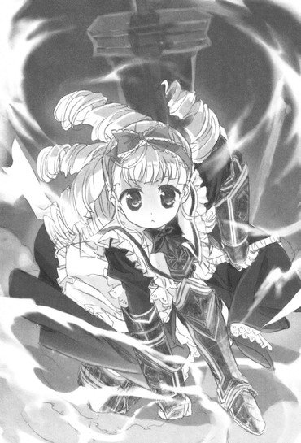
「──ゆうとさま......やさしく、してくれた......。ゆうとさま......すき......だから、じゃま......させない......」
「......」
「......わたしが......ゆうとさまをまもる......。ゆうとさまは......いまのうちに......すすんで......！」
「アリス......！」
その目は真剣だった。
無口なちびっこメイドが見せた真剣で意志の強さを感じさせる光。
もうここで何と言ってもアリスは自分の意見を曲げないだろう。
だったら──その心遣いに感謝して進むしかない。
「ありがとう、アリス！」
「──（こくっ）」
木人の中で一人立ち尽くすちびっこメイドに心からのお礼の声を発して鍵の開いた出口から部屋を出る。
その先に続いているのは同じ剥き出しのレンガ造りな通路。
その硬い地面を踏みしめて走りながら考える。
それにしても──
「今のあれは何なんですか......？ それにさっきの水面さんの部屋も......」
「......分かりません。このようなものは初めて見ます。ですが......」
「？」
「......もしかしたらこの先にも同じような部屋があるのかもしれません。あれらは明らかに侵入者を捕縛するためのものでしたから......」
「......」
まさかそんなことが......
だけど葉月さんが懸念したように。
妙な造りになっていたのはその二つだけじゃなかった。
その先でもトラップが仕掛けられた部屋が続き。
その度に、メイドさんが身体を張って俺たちを先に行かせてくれた。
大量の食材とレシピが置かれ、指定通りの特殊な料理を作らなければ扉が開かない部屋では。
「......こ、ここは私が何とかします......裕人様たちは先に......」
小鮎さんがその圧倒的な料理知識を使い瞬く間に料理を作り上げて。
何やら杖を持った男の石像から催眠ガスが噴出してきた部屋では。
「この像は医療の神アスクレピオスですね。アスクレピオスの象徴はその手に持つアスクレピオスの杖......ならばこのガスを噴出させている動力源はそこにあるということになるはずです」
鞠愛さんがガスを一時的に止めてくれて。
分子模型と元素記号とでパズルが作られていた部屋では。
「......これは元素の周期表と分子の構造とを組み合わせてパズル化したものみたいだね。ここにある元素名を全て数字に置き換えて、さらに分子模型を手がかりにした一定の法則の公式にあてはめていくと扉の電子キーに打ち込むパスワードとなって......」
理緒さんが出口の鍵の開け方を解析してくれて。
たくさんのお札のようなものと鏡とに覆われ不思議な力で外に出られなくなっていた部屋では。
「これは陰陽術における五芒星結界ですね。鏡で力を増幅して、本来外からの侵入を防ぐものを中から出られないようにしているようです。ならば術の核となっている部分に私が入り直接操作して術を反転させれば......」
祝さんが結界を解除して俺たちを先に行かせてくれた。
それぞれの特性を活かした見事な解決法。
ただその各々の部屋では、最初の水面さんの時と同じように仕掛けを解いた者を捕らえるトラップが用意されていて......
気付けばいつの間にか、残るメイドさんは葉月さんと那波さんの二人だけになってしまっていた。
「......これは、まさか......」
と、葉月さんがそう口にした。
「？ どうしたんですか、葉月さん？」
「......これまでの特性に溢れた一連のトラップ、これはまるで......」
「......？」
「......。......いえ、何でもありません。それよりも先を急ぎましょう」
「え？ は、はい！」
促されて動かす足を速める。
その傍らで。
「......杞憂だと、良いのですが......」
葉月さんが小さくそうつぶやいていた。
そんなトラップに満ち溢れた部屋を経て、葉月さん、那波さん、美夏、椎菜、朝比奈さん、澤村さん、澤北さん、俺の八人だけになった。
突入した時からすれば半分以下の人数。
葉月さんと那波さんを先頭に二列に並んで進んでいく。
「......もう間もなく『ニーベルンゲンの間』のはずです。構造は変わってしまっていますが、城全体の大きさ自体は変わらない......。そこから想定される最奥部分は、もうすぐでなければおかしい......」
「そうですか......」
「......はい」
あと少しか......
ここまで長かったが、もう少しで春香のところへ辿り着ける。
早く辿り着いてこんなことはもう一刻も早く終わらせないと......！
だがそこで。
「......っ！」
葉月さんが鋭い声を上げた。
その視線の先を追ってみれば......そこにはこっちに向かって走ってくる黒服たちの姿。
それは今までに見たことのない大人数だった。
少なく見積もっても二十人はいる。
あれが全部......黒狼、なのか......？
「......これは、さすがに」
「まずいかもしませんね～......」
葉月さんと那波さんも苦々しい表情を見せる。
「ど、どうするの～、葉月さん、那波さん？」
「......あの人数相手では逃げ切ることは困難でしょう。ここは私と那波さんとで何とか食い止めます。裕人様たちはその間に『ニーベルンゲンの間』まで進んでください」
「え、で、でも......」
「......行ってください。そこまで長くは保ちません」
「持てる力全てをもって時間を稼ぎますので～」
チェーンソーと巨大ハンマーとで俺たちをかばうように前に出ようとして。
「──待って！」
そんな声が響き渡った。
どこか決意を秘めたような声。
声を発していたのは......椎菜だった。
「ここは......あたしが残ります。葉月さんと那波さんは裕人たちと先に進んでください。まだこの先に何があるか分からない以上、二人は必要なはずです」
「し、椎菜!?」
な、何を言ってるんだ？
こんな差し迫った状況の中で一般人である椎菜が一人残るだなんて、そんなムチャクチャな......
だけど俺のその言葉に椎菜は首を振って。
「あたしに、残らせて」
「え......？」
「そうしたいの。他のみんなが......永井くんたちとか、由香里先生とかルコさんとか、メイドさんたちがあんなにがんばってるのに......裕人に偉そうなことを言っておいてあたしだけ何もできないなんて、ただのお荷物なんて、そんなのイヤだもん......！」
「椎菜......！」
「大丈夫だよ、裕人。だってあたしにはこれと──」
にっこりと笑いながら背中にかけていた細長い袋から薙刀を取り出す。
「それと、裕人のことを大事だって想う──素敵で無敵な、乙女心があるから♪」
「な、何を言って......」
その予想外に突き抜けた笑顔と言葉とに何と返していいか詰まる俺に。
「──ねえ裕人、あたしは裕人にふられちゃったけど......今だって裕人のことを大切だって思ってるんだよ？」
「え......？」
「大切で大事で、かけがえのない大好きな存在......。その大事な人には......幸せになってもらいたいって思う。ちゃんと自分の気持ちを伝えるべき人に伝えてもらいたいって思う。それは裕人のことを想ってでもあるし乃木坂さんのことを思ってでもあるし......あたし自身の願いでもあるの。──だから、ここは譲れない」
「椎菜......」
「あたしにも裕人のために何かがんばらせて！──ほら、だから早く行って！忘れてるかもしれないけど......これでもあたし、天宮神灯流薙刀術の師範代なんだから！」
俺たちに道を開くように前に立つ。
ここまで言われたら......もう行かないわけにはいかないじゃないか......
「......分かった。頼んだ、椎菜」
「うん、頼まれたよっ！」
敬礼のポーズで頭の横に手を当てる仕草をする椎菜に心からの感謝を送って先に進もうとして。
「待って椎菜、私たちも残るよー！」
「え......？」
「あ、足手まといかもしれませんけど......」
「椎菜っちを一人きりにさせられないもんね～♪」
「良子、麻衣、幸子......」
澤村さんたちの言葉に椎菜が目をぱちぱちとさせる。
「そういうわけだから綾瀬っち、私たちはここに残るよー。綾瀬っちたちは先に行ってこーい。春香っちによろしくねー♪」
「か、必ず乃木坂さんを助け出してください......」
「また後で会おうね～♪」
揃ってにっこりと笑って。
そう言ったのだった。
＊
──ドサリ。
「は、はあ......はあ......な、何とか一人......」
四人がかりでようやく何とか一人倒すことができた黒狼を見下ろしながら肩で息をする。
「こ、これであと十九人くらい......？ 一人頭にすると五人ってところかな......？」
「お、思ったよりきついぜー......那波っちたちからもらったこれがあれば何とかなるような気がしたんだけどなー......」
「そ、そうだね、こ、このビリビリする黒い機械、強力ですし......」
「え、ええと～、麻衣っちが薙刀の先に着けて使ってるのがスタンガンで、むらむらが使ってるのがスタンロッド、私が使ってるのがテーザーガンかな～......？」
澤村さんたちが肩で息をしながらそう声を漏らす。
それを見て椎菜は。
「ごめんね......良子たちまで付き合わせちゃって......」
「いいっていいってー。椎菜を一人にするわけにはいかないし、それに私だって綾瀬っちたちの力にはなりたかったからさー」
「は、はい......綾瀬くんは、その、がんばっていると思います。私たちで何とか助けになることができれば......」
「色々大変みたいだもんね～、綾瀬っち。──それに椎菜っちのお気に入りじゃ、手助けしないわけにもいかないし～♪」
「え、ちょ、ちょっと......」
「ふっふっふ～、みなまで言わなくても分かってるって～♪綾瀬っち、いいやつだもんね～。椎菜っちが好意を寄せるのも分かるよ～。......もっとも、綾瀬っちのことがお気に入りなのは椎菜っちだけじゃないみたいだけどね～♪」
「え......？」
「な、なにさー......？」
「ふふ、べっつに～♪」
澤北さんの意味ありげな笑みに、朝比奈さんと澤村さんが困惑したような声を上げる。
「と、とにかくそんなことより今は目の前のこのおっさんたちをどうするかだぜー！何とかしないとあっという間にここのラインを破られちゃうだろー！」
「は、はい。それはまずいです......」
「そだね～、今はそっちが優先かも～」
澤北さんもそれには納得して。
「──とりあえず一人でも多く減らして、一分でも長くここで足止めさせられるようにがんばろうよ！みんなで力を合わせればきっとやれる......一本では強くないイカの足も、十本集まることで無敵のダイオウイカになれるんだよ！」
「お、おー！」「が、がんばらないと......！」「たとえはいまいちよく分かんないけどふぁいとだ～！」
椎菜の声に他の三人が追随して。
圧倒的な数で規律の取れた狼の群れのように襲いかかってくる黒狼たちを何とかくい止めようとして。
「──だれだか知らないけど、よくここまで持ちこたえたわね」
「え......？」
そんなよく通る声が響き渡った。
「ロドリゲスの危機だって聞いてきたけれど......ふん、本人はいないようね。少し遅かったかしら」
そこにいたのは一人の小さな少女だった。
傍らに初老の眼鏡の執事を従えて、腕を組みながら女王のように辺りを睥睨している。
「......まあいいわ。どうせ後で会うことになるでしょう。今はここの犬どもを掃討するとしましょう」
「あ、あの、あなたは......？」
突然現れた闖入者に椎菜がどうしていいか分からないって声でおずおずと尋ねると。
「......？ わたしのことを知らないというの？ふん、これだから物を知らない下賎の庶民は。いいこと、覚えておきなさい──」
「？」
そこで少女は一歩前に出てびっ！ と指を差すと。
「──わたしの名前は天王寺冬華。天王寺家の筆頭後継者にしてその輝ける星......そしていずれ世界を征服する者の名前よ！」
「は、はあ......」
「本来わたしはだれにも従わない。だけれどロドリゲスには借りがある。あの男がいなかったら今のわたしはなかったといっても過言ではないわ。天王寺冬華は受けた恩は決して忘れない......。だから約束をしたの。あの男が......綾瀬裕人が助けを必要とする時には必ず駆けつけるって。それを今、遂行するわ。──小犬川！」
「──はっ、冬華お嬢様」
そんな声が広間に凛と響き渡って。
初老の眼鏡執事を筆頭に、執事服を着た何人もの男たちがどこからか姿を現して黒狼たちに向かっていった。
「すごい......」
「わー、執事の大軍団だよー」
「真っ黒です......」
「よく分かんないけど味方なのかな～？」
執事と黒服とが入り乱れての大混戦。
最初はその形勢は拮抗していたが、数で勝ることもあり、次第に執事たちが黒狼たちを後退させていっているようだった。
「間もなく空中部隊、海上部隊からの攻撃も始まります。綾瀬様たちにはよい援護となることでしょう」
「......ふん、まあまあね」
その言葉に少女は二つに結んだ髪を手でなびかせて。
「......さあ、綾瀬裕人、舞台は整えたわ。これから先をどうするかは......あんたの器量次第ってところかしらね。ロドリゲスはロドリゲスらしく、泥にまみれながらもせいぜいがんばるといいわ」
通路の先に視線をやりながらそうつぶやいたのだった。
４
「──ハクション！」
「......大丈夫ですか、裕人様？」
「え？ あ、いや平気です。急に鼻がムズムズとして......」
「......風邪でも引かれましたか？」
「いや、そんなことはないんですが。おかしいな......」
走りながら鼻に手を当ててそう答える。
風邪でないということは花粉症かアレルギーか何かか......？──というか今はそんなことよりも......！
俺は頭を振って。
「それより葉月さん、『ニーベルンゲンの間』は......！」
「......もうこのすぐ先のはずです。この辺りの造りには見覚えがあります。次の広間を抜けた先が『ニーベルンゲンの間』のはず......」
「そうですか......！」
その言葉に思わず足がはやる。
身体を張って先に進ませてくれた椎菜たちのためにも、一刻も早く春香のもとに辿り着かないと......！
焦る心地で広間に足を踏み入れて。
と、その時だった。
「......っ！ 裕人様！」
「え？」
キンッ!!
何かがぶつかり合う金属音がした。
同時に葉月さんの身体が割り込むようにして俺の前に入ってくる。な、何だ......？
驚いて顔を上げると。
「──ほう、よく今のに反応できたものだ。腕を上げたようだな、葉月」
「......貴方は！」
葉月さんが声を上げる
その厳しい視線の先に立っていたのは......手に日本刀を持ち紺色の立派な執事服に身を包んだ大柄な初老の男性だった。
この人は確か......
「......平蔵様」
葉月さんが苦々しげにそう口にする。
そうだ......この人は桜坂平蔵さんだ。確か春香の誕生パーティーの時に王季さんの影武者の役目を果たしていて、同時に乃木坂家の執事長を務めている人で......
──そしてそれだけじゃなかった。
大柄な平蔵さんの後ろにさらに巨大な威圧感を伴って山のようにたたずむ人影。
見間違えることなどないその姿は──
「......玄冬さん！」
「......よくぞここまで来たものだ」
腹の奥にまで響くような空気を震わせる低い声が部屋の中に木霊する。
一瞬部屋全体が地震のように揺れたような気さえした。
「......まさか本当にここまで辿り着くとは思わなかった。いかに葉月たちの助けがあったとはいえ正直予想外だった。その執念だけは認めよう。春香に対する感情と思い入れとが皆無であるわけではないと。......だがその程度でここから先を通すわけにはいかん。春香の結婚式は間もなく始まる。生涯の伴侶と契りを結び永遠を誓う神聖な儀式が。邪魔はさせない。それこそが春香の幸せなのだ......！」
「......っ！」
春香の幸せって、そんな勝手な......！
春香の気持ちがどうなのかも分からないってのに幸せも何もない！何とか式が本格的に始まる前に春香を連れ出さないと......！
葉月さんと那波さんも。
「......玄冬様といえども、春香様の幸せを阻むというのなら打ち倒さなければなりません......！」
「そこをおどきくださいです～！」
得物を手に飛びかかろうとして。
「──葉月、那波さん、お前たちの相手は私たちだ」
「......くっ」
「......平蔵様～......」
その前に平蔵さんと、真っ黒な執事服を着た壮年の男たちが三人立ち塞がった。
それらの黒い執事たちは物腰こそ穏やかながらただならぬ雰囲気を兼ね備えていて......
「......平蔵様は、黒狼の長なのです」
「えっ」
「......王季様に直接仕える執事長にして、黒狼部隊を束ねる乃木坂家最強の使い手です。おそらく周りにいるのは黒狼の中でも古参の者ばかりを集めた選りすぐりの手練れたちでしょう。気配で分かります」
「............」
そんなどこかの四天王みたいな強者な人たちなのか......
それに確か前に聞いた話だと、平蔵さんは王季さんとともに葉月さんを拾って育ててくれた人のはずだ。そんな相手と戦うことができるのか......？
だけど葉月さんたちは。
「......何とか我々で平蔵様たちは退けてみせます。そして玄冬様も打ち倒して春香様への道を切り開いてみせましょう......！」
「裕人様は下がっていてくださいです～」
迷うことなく俺をかばって前に出ようとする。
その表情からは不退転な決意がにじみ出ているのが見えて......
「............」
葉月さんたちの気持ちが嬉しかった。
自分たちの主であるはずの玄冬さんを、育ての親である平蔵さんをも向こうに回して戦ってくれるという強い覚悟。
それはともすればそのまま甘えてしまいそうなくらいに俺の心に染み入ってきて......
「......」
だけど。
いやだからこそ。
俺は──
「............葉月さん、那波さん、ここまでありがとうございました」
「......裕人様？」
「裕人様～？」
「葉月さんと那波さんは平蔵さんと黒狼をお願いします。それも大変なことだとは思いますが、それだけは何とか頼みます。──俺は」
そこで葉月さんと那波さんの目を真っ直ぐに見て。
「──玄冬さんを何とかして、先に進みます」
「......！」「!?」
強い決意とともにそう言った。
──ここに来るまでに三馬鹿たちや由香里さんやルコ、信長たちが全力で懸命にサポートしてくれた。メイド隊の皆がその能力をフルに使って道を切り開いてくれた。直前の部屋では椎菜たちが自分たちの身体を張ってまで先に行かせてくれた。
だったら今度は俺が自分の身体を張らなくて......どこで男を見せるのかって話だ。
それに相手は春香の父親であり春香を溺愛している玄冬さん。こうしてぶつかり合うことは......避けては通れない道だろう。
「......裕人様」
「裕人様～......」
「おに～さん......！」
葉月さんたちが心配そうな顔を向けてくるが。
「大丈夫です。やって......みせますから」
「......分かりました」
「私たちは黒狼たちを抑えます～。裕人様のもとへは一人たりとも近寄らせませんから～」
「お、おに～さん......ケガとか、しちゃいやだよ......？」
そう声をかけてくる美夏たちにうなずき返して。
俺は玄冬さんが立つ広間の出口扉の前へと足を向けた。
「ほう......一人で来るか」
「......」
玄冬さんは相変わらず圧倒的な威圧感とともにそこにいた。
対峙しているだけで息苦しくなるような肌に突き刺さってくるプレッシャー。
く、身体がすくむ......
思わず後ろに下がってしまいそうになる足を懸命に前に向けて。
「玄冬さん......そこを通してください。俺は、春香のところへ行かなければならないんです......！」
「......さっきも言ったがそれはできん相談だ。どうしても行きたいというのならば、式が終わった後にするがいい」
「......どうあっても、どいてはくれませんか？」
「......くどい。お前が退け」
「だったら──」
「......」
「だったら......無理矢理にでも通ります！」
玄冬さんの横を強引に走り抜けようとして。
「──させぬと言っているだろう！」
「......！」
ゴッ......ッ......！
頭の横で響いた鈍い音。
同時に、何が何だか分からないほどの衝撃が顔面を襲った。
そのまま世界がグルンと一回転してドサリという衝撃とともに床の冷たい感触が頬にあたる。
殴られたと気付くのに──十秒ほどの時間を要した。
「お、おに～さん！ な、何するのお父さん！い、いきなり殴るなんて......！」
美夏の叫び声が広間に響く。
「......美夏、お前は黙っていろ」
「え......!?」
「これは私と綾瀬裕人との問題だ！言わば男と男の戦い......。お前といえども口出しは無用。さあ綾瀬裕人、ここを通りたければかかってくるがいい。男ならば......その拳で自らの想いを語ってみせろ！」
「くっ......」
......やっぱり......ただじゃ通してはくれないのか......！
それは予想できていたことではあったけども......だからといってまさかいきなりここまで実力行使でくるとまでは考えていなかった。く、殴られた顔面がグラグラする......
揺れる頭を押さえながら立ち上がることができずにいると。
「......できないというのか。ふん、とんだ腑抜けだな。それは自分には春香の隣にいる資格がないだとかそんな矮小なことを言い出すわけだ」
「なっ......」
「聞いたぞ。自分には持っているものがないだとか春香と並び立つ資格がないだとかなどという情けないことをぬかしていたそうだな。そのようなものは全て甘えにすぎない。いや甘えというのもおこがましいただの未熟さの現れ......お前の春香に対する心持ちが中途半端だからこそ生じる、子供じみた自己陶酔だ！」
「そんなことは......！ 俺は春香に──」
反論しかけて。
「──黙れぇい!!」
ゴツッ......!!
「ぐ......っ！」
再び岩石のような一撃が飛んできた。
避けることができずにまともに腹にくらって、その場に「く」の字に崩れ落ちる。
「ぐ......あ......」
あまりの衝撃に息ができない。
肺の中の空気を残らず外に吐き出して、そのまま支えを失った人形のように地面を転がる。
そんな俺に玄冬さんは。
「──綾瀬裕人よ......乃木坂家の女を守っていくということがどういうことか、お前には分かるというのか？」
「え......？」
「乃木坂家の女と添い遂げようとする者は、いついかなる時にもそれに相応しい資格を自ら勝ち取らなければならない。常に眼前の目標に向けて邁進して、己を磨き、研鑽し、それをできるだけ速やかに達成する。それはもはや義務だ。当たり前にやらなければならないことであり、自らの力の無さに嘆いている暇などない。力が足りなければ足りるようにしなければならず劣っているものがあるのならばそれを克服しなければならない。それを呼吸をするかのように三百六十五日......絶やすことなく続けていかなければならないのだ！」
「く......」
「持っているものがないなど、誇るべきものがないなど、そのようなことを言っているのはまだ甘い証拠だ！覚悟が足りない証拠だ！その不足に対してお前は何をした？死にもの狂いに、血反吐を吐いて努力をしたというのか？否！ならばその程度で偉そうに自分に資格はないなど......笑止千万もいいところ！そのような半端者に春香を預けることができると思うのか！」
ガッ！ ゴッ！
重い言葉とともにさらに拳が飛んでくる。
一つ一つが言葉と同じくらいに重い鉛の塊のような鉄拳。
そのあまりの激しさに意識が飛びそうになる。
「ちょ、ちょっと......!! いくら何でもやりすぎだよ、お父さん！」
「......」
「な、那波さん、おに～さんを助けてあげて！あのままじゃおに～さん......し、死んじゃうよぉ！」
「......」
「な、那波さん......？」
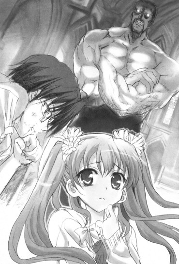
「それは......できかねます」
「え......？」
「もちろん今すぐにこの黒狼たちを退けて裕人様のお助けをするのが困難だということもあります。ですがそれ以前に......これは裕人様の戦いなのです」
「ど、どういうこと？ わ、分かんないよ～......」
「これは......私たちが手を出してはいけない領域なのですよ。だれかが外から介入したとしても、私たちの手を借りて解決したとしても、それは裕人様にとって何のプラスにもならない......」
「な、那波さん......」
「私たちは......見ているしかできないんです」
そんな声が聞こえてくるのを朦朧とする意識の中で感じていて。
やがて鉄拳の雨がやんだ。
地面に倒れる俺をサングラス越しの厳しい目で見下ろして、玄冬さんが低くつぶやく。
「......ここまでやられてもまだ奮い立たぬか。情けない。......ふん、葉月や那波たち、それに春香もとんだ見込み違いだったいうわけだ」
「......」
「まったく、春香の人を見る目も曇ったものだな。もともと夢見がちで幼いところはあったがそれでもこのような愚か者に肩入れするとは......まったくもって乃木坂家の恥さらしだ。我が娘として恥ずかしいわ」
「......！」
なん......だって......
「恥さらしだと言ったのだ。汚点だと言ってもいい。とんだ失敗作に育ったものだ」
「......っ！」
その一言は......見過ごすことができない......！
俺のことはともかく......葉月さんや那波さんのメイドさんたち、そして何より春香に対して侮辱した言葉を向けるのは......認めることができない！
「......ほう、怒るか。だがお前に何ができる。お前は非力で矮小で貧弱で、取るに足らないちっぽけな存在だ」
「非力でちっぽけなんて......そんなことは自分が一番よく分かってる......」
「む......？」
「だけど......確かに俺は情けなくて不甲斐なくてできることなんて多くはないかもしれないけど......」
「......」
痛む身体を懸命に起こして。
「自分の大切な人たちが......好きな相手が馬鹿にされて、黙っていることなんてできない!!」
ガツッ......!!
拳の先から岩のように硬い感触が返ってきた。
腕から肩にまで響く重い感触。
僅かだけ赤くなった頬に手を当てて、玄冬さんがニヤリと口元を歪める。
「......ほう、今のはなかなかいい一撃だったぞ」
「......」
「だが......まだ半端だわっ!!」
ガツッッ......!!
「!?」
返ってきたのはさらに強烈な一撃。
あまりの衝撃に目の前が一瞬真っ暗になって、再び倒れそうになる。
だけど。
「確かに俺は半端かもしれない......努力も覚悟も足りないのかもしれない！だけどここで退くわけにはいかないんだ......っ！」
「............」
「春香の隣にいるためには今のままじゃダメなことは分かってる！努力しなければいけないことも分かってる！そんなことは、昔から身に染みるほど分かってるんだ！」
バキッ......！
言葉に力を込めて再び殴り返す。
「......それが分かっているのならば努力をすればいいだろう！足りぬものが分かっているのならそれを補うためにその身を粉にすればいいだろう！努力を忘れた時、上を向くことを忘れた時こそが、人の死ぬ時なのだ！」
ゴツッ！
「ああ、やってみせる......！ 春香の傍にいるためにそれが必要なら、俺は血の汗を流すことだって泥を飲むことだって、何だってやってみせる！」
ガツッ！
「ふん、口では何とでも言える！ 実践の伴わない安易な口上は無いも同じ......。だが......いいぞ。私が待っていたのはそのような素の感情だ！上っ面のお綺麗な美辞麗句などではない、お前の心の奥にある剥き出しの本当の情動......！それを聞かずして何が分かろうか！」
「分かるって......何が......っ......！」
バキッ......！
ガッ......！
ガンッ......！
それはもうただの殴り合いだった。
理屈も論理も思惑もない、純粋な意地と意地のぶつかり合い。
玄冬さんも俺ももう周囲のことなんか気にせずに、ただ感情の赴くままに互いの拳をぶつけ合っている。
「ふん、なまっちろく見えてなかなかやるではないか！だがまだまだだ、その程度の拳では私を打ち倒すことなどできぬぞ！」
「げ、玄冬さんこそ、歳のせいで疲れてきたのか威力が落ちてきてますよ......！」
「ふっ、言いおるわ、小童が！」
ガッ！ ゴッ！ バキッ......！
繰り返される拳の応酬。
もうお互いに何発殴り合ったのか分からない。
だけどそれとは反比例して交わされる言葉は段々と少なくなり、静まり返った広間の中には次第に俺と玄冬さんの拳の音だけが響くようになっていく。
それを傍らで見ていた美夏が。
「な、何でだろ......？ こんなの絶対におかしいと思うし見てられないと思うんだけど......」
「美夏様......？」
「二人とも......なんか、楽しそう......」
──そのままどれくらいの時間が経っただろうね。
互いに飾るもののない素の心のぶつかり合いの時間。
だがやがて──そんな時間も終わりを迎える。
お互いにボロボロになりながら肩で息をして、真正面から俺たちは対峙した。
「......綾瀬裕人、お前に問おう」
「......？」
「......お前には春香とともに道を歩んでいく決意があるのか？私が今語った乃木坂家の女を守っていく真摯な決意......春香のためにその身を律して自らに厳しい制約を課していく引き返せない覚悟は......あるのか？」
「............」
その問いに俺は目をつむって天を仰いだ。
春香と共に道を歩んでいくこと。
その傍に立ち続けることができるためにたゆまね努力を続けていくこと。
それに対する答えは──
「──確かに、俺はまだまだ未熟かもしれない......」
「む......？」
「......未熟で足りないところばかりで春香の横に並ぶことができるような器じゃないかもしれない......だけど！」
そこで正面から玄冬さんの目を見据えて。
「──春香とともに道を歩いて行きたい！ これから先も春香の傍にいるために、春香との未来を歩んでいくために、俺にできることの全てを賭けて全身全霊で立ち向かっていきたい！いや──やってみせる！そのための覚悟は......できているー」
「......そうか」
その言葉に玄冬さんは静かに息を吐いた。
何かを受け入れたような決心したような少しだけ寂しさも含んだ吐息。
そして顔を上げ俺を正面から見据えると。
「......ならばもはや私から言うことはない！ その決意を見せてみろ！綾瀬裕人──お前の気持ちが本物だというのなら、それを身をもって証明してみるがいい!!」
両腕を広げてそう叫ぶ。
俺はそれに向かって最後の力を振り絞って地面を蹴った。
「う......うおおおおおおおぉおおおおおおおおおおおぉおおおおお!!」
腹の底から湧き上がってくる雄叫び。
それに全ての感情を乗せるようにして。
俺は渾身の一撃を、玄冬さんに向けて放った。
バキ......ッ......!!
これまでにないくらい重い感触が拳の先から戻ってくる。
物理的にだけでなく──感情的にも重い感触。
それは俺の決意の重さだったのかもしれないし......受け止めてくれた玄冬さんの度量の重さだったのかもしれない。
やがて玄冬さんは静かにその口を開いて。
「......見事な、一撃だった」
「......」
「......お前の覚悟──確かに受け取った。迷いがなくなり真っ直ぐになった、心にまで届く確固たる覚悟を......」
グラリ......
そのままその山のような身体を傾かせると。
サングラスを床に落として、玄冬さんは片膝をついた。
「あ......」
「......行くがよい。私はもう立てぬ。お前は勝った......綾瀬裕人は乃木坂玄冬を見事に打ち倒したのだ」
「......」
玄冬......さん......
その言葉に思わずこみ上げてくるものを感じる。
あのどんな時にも厳しくて決してこちらのことを認めてはくれなかった玄冬さんが、こんなことを言ってくれるなんて......
「............」
その気持ちに深く感じ入って。
俺はふらついていた身体を奮い起こした。
周囲を見ると葉月さんと那波さんはまだ平蔵さんと黒狼たちと対峙していた。
だけど俺の視線に気付くとこっちを見てぐっと親指を立ててくれるとともに、こくりとうなずき返してくれて......
「......分かり、ました」
それに答えて俺は足を玄冬さんの後ろにある扉へと向けた。
力いっぱいに地面を蹴って、そのまま後ろを振り返らないで走り出す。
「必ず......春香を連れて戻って来ます！」
そう叫んで大広間を後にしたのだった。
そんなやり取りの傍らで。
玄冬さんはそのままゴロリと地面に仰向けに倒れると、どこか満足げにこうつぶやいたのだった。
「......行くがいい、裕人よ......」
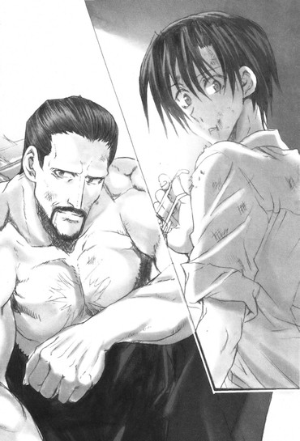
５
広間を出てすぐに──『ニーベルンゲンの間』は視界に飛び込んできた。
直線の通路を抜けた先にあった、奥庭のように空に開けた場所にある校庭ほどの広さの空間。
そこに純白な外壁の見事なチャペルが......全ての決着を付けるに相応しい粛然たる様で建っていた。
あそこに春香が......っ......！
「──春香っ！」
はやる気持ちを懸命に抑えて。
あちこちがズキズキと痛む身体に最後の鞭を入れて入り口まで走ると......見上げるほどの高さの白塗りの扉を力いっぱいバン！と開ける。
目に飛び込んできたのは──
「......っ！」
それは──まさに結婚式の風景だった。
天井部分や窓などがステンドグラスで覆われた、荘厳にして神聖なチャペル。
縦に長い造りとなったゴシック様式のその最奥には十字架が飾られた祭壇のようなものがあり、そこからヴァージンロードを挟むようにして左右に並べられた座席は正装をした招待客たちで満たされている。
そして祭壇の前に立っていたのは......
「......春香！」
真っ白なウェディングドレスに身を包んだ、春香だった。
距離があるため俺にはまだ気付いていないのか、祭壇の方を見たままこちらを振り返ることなく静かにたたずんでいる。
「春香......っ......！」
見たところまだ式は終わっていない！
今ここで割り込んで外に連れ出せば何とか間に合うかもしれない......！
奮い立つ気持ちとともに春香へと向かい駆け寄ろうとする。
だがそこに立ち塞がったのは──
「......とうとうここまで、やって来たのですね」
「......秋穂、さん......っ......！」
着物姿の、秋穂さんだった。
帯のところで固く手を結んで、俺の心の奥底までをも見透かそうとするかのようにこっちを静かに見つめている。
「秋穂さん......そこを通してください。春香のところまで、行かせてください......！」
「......」
「秋穂さん......！」
「............」
俺のその言葉に秋穂さんは黙って目を閉じた。
そして何かを認めたように顔を上げると。
「──裕人さん。ここまで貴方がやって来たということは、それ自体が貴方という人間の内面を表しているということなのでしょうね」
「え......？」
「親しい者たちや家族、新旧の友人たちや古いつながりのある者、たくさんの貴方を慕う人たちの力を借りて、貴方はここまで来た。メイド隊全員からも貴方は仕えるべき者として認められたということなのでしょう。そうでなければここまで来られないようになっています。そしてさらにおそらくは玄冬も......私の夫も貴方のことを認めたということ......。──そんな幾多の関門を乗り越えてきた貴方に、この期に及んで私から多くを語るつもりはありません」
「......」
「貴方に問いたいことはただ一つ──」
そこで秋穂さんは一度言葉を止めた。
何かを深く込めるようにして沈黙すると。
静かな眼差しで俺の目を真っ直ぐに見て。
「──貴方にとって、春香はいったい何ですか？」
「!?」
そう、静謐に問いかけてきた。
それはこの上なく簡潔でこの上なくシンプルなものであったが......最初にして最後の問いかけであり、その言葉の中に全ての意味を含んでいる問いかけでもあることは......よく分かった。
「............」
目を閉じて心を落ち着かせる。
秋穂さんの質問を頭の中で咀嚼する。
自分にとって春香が何であるか。
俺にとって春香は......どんな存在なのか。
そのことを自分自身に問いかけて、自らの心の中を思索していき......
「俺にとって春香は......」
「......」
「春香は......」
「......」
そこで顔を上げて。
「俺にとって春香は......最初はただの憧れでした」
俺は静かに自分の心の内を語り出した。
──春香は俺にとって、ずっと憧れの存在だった。
文武両道で才色兼備な完全無欠の学園のアイドル。
『白銀の星屑』や『鍵盤上の姫君』などの数々の異名を持つ雲の上の存在。
そんな憧れの完璧お嬢様とひょんなことから〝秘密〟を共有することになって、多くの時間を過ごすこととなった。
秋葉原でのお買い物。
初めての夏コミ。
文化祭の出し物でのコスプレ。
春香がバイトをしたメイド喫茶。
二人でサークルの手伝いをした冬コミ。
初めての〝デート〟で行った秋葉原。
自分たちでサークルを主宰した二度目の夏コミ。
数え上げればキリがない。
この一年半の間にたくさんの〝秘密〟に関わった同じ時間を過ごす内に......次第にその憧れは違う感情へと姿を変えていった。
「......いつからかは分かりません。知り合って何ヶ月かが経った時からだったのかもしれないし春香が初めて俺の前で弱さを見せてくれた時からかもしれない、もしかしたらもう最初に出会った時からそうだったのかもしれない......だけど、俺の中で春香に対する気持ちは、憧れからは変わっていったんです」
それまでのただの高嶺の花から、春香の内面が気になるようになった。
気付けば目で春香のことを追ってしまうようになった。
それは何か劇的なきっかけがあったわけではなく本当に気が付いたらそうなってしまっていて......
「......」
ずっとその感情の名前が分からなかった。
春香から目を離せずに......春香と同じ時間をもっと共有していたいという気持ち。
それが何を意味するのか分からなくてただ胸がモヤモヤとして、戸惑うばかりだった。
だけど......ここに来てその感情は明確な形を見せてくれた。
憧れの存在から気になる存在へ。
気になる存在から同じ時間を共有したいと思う存在へ。
そして同じ時間を共有したいと思う存在から......隣に並び立ちたい存在──確かな想いをもって、いっしょにこれから先も傍を歩いていきたい存在になったということをハッキリと自覚することができた。
「──春香といっしょに未来を歩いて行く......それが簡単じゃないことは分かっています。俺はただの凡人だし、取り立ててこれといった取り柄はありません。普通に考えたら春香の隣に並び立つ資格なんてない......」
「......」
「だけど──」
そこで言葉を切って顔を上げる。
──ここに来るまでに、様々な人が教えてくれた。
葉月さんが......大切なのは生まれや家柄などでなく自分の想いなのだということを。
美夏が......俺の存在とはどういうものなのかということを。
ルコが......退くべき選択肢も時には正解たりうるということを。
椎菜が......一番に慮るべきなのは春香の気持ちなのだということを。
三馬鹿や信長、澤村さんたちに由香里さん、メイド隊の皆は......俺が一人じゃないということを。
そして玄冬さんは......自分の想いと望む未来とを結実させるためには死にものぐるいの努力が必要だということを。そしてその努力があれば不可能だと思っていた大きな山を越えることもできるということを。
「............」
それだけじゃない。
この一年半の間で積み重ねてきた春香との思い出。
それらの一つ一つが今、俺の中で星屑のような強い光となって輝いていた。
──裕人さん♪
──裕人さん、見てください、ドジッ娘アキちゃんのれあふぃぎゅあです♪
──うう......ほしかった同人誌が売り切れてしまいました......
──ほんとに、裕人さんは王子様みたいです♪
──私も、裕人さんにはいつまでもいっしょにいてもらいたいです。美夏や葉月さん、那波さんや沙羅さん、お母様やお父様たちみたいに......
──私......今年のクリスマスのこと、一生忘れません。こうやって裕人さんと二人で雪を見たクリスマスを......
──は、はっぴ～にゅ～いや～......です（はあと）
──何でしょう......裕人さんの腕の中で包まれているだけで、何だか安心できます。安らいだ気分になれるというか、それだけで胸の奥までほっと温かくなってくる感じで......
──でも、こんなに笑えているのは......裕人さんがいてくれたからだと思います。
──え、えと、きょ、今日は、二月十四日です。そ、その、世に言うところの〝ばれんたいんで～〟で......。だ、だからチョコレートを作ってみたのですが......
──そ、その、私がもしも何かの事情で、どこか遠くに行くことになってしまっても......その時は、そ、その、お、追いかけてきてくれたりしてくれますでしょうか......？私のことを必要だと、言ってくれますでしょうか......？
──この一年は......とっても素敵な一年間でした。裕人さんといっしょに過ごした高校二年生の一年間は、まぶしくてきらきらと輝いていて......きっと私にとって一生忘れられない時間だったと思います。
──私......裕人さんのこと、大好きです♪
──裕人さんがいらっしゃったからこそ......私はこうして笑っていることができるんです。
──このことは二人だけの秘密......『綾瀬裕人と乃木坂春香の秘密』ですね♪
「......」
目を閉じればいくらでも浮かび上がってくる春香との日々。
春香が俺にくれたたくさんの笑顔と幸せ。
その全てが俺にとって......何よりの宝物だ。
だから俺は。
「俺にとって......春香は──」
気持ちを集束させるかのように大きく息を吸い込む。
空気と共に胸に満たされていく光の欠片。
それらの全ての輝きを気持ちと言葉とに込めて。
俺は万感の想いとともに、心からの答えを口にした。
「俺にとっての春香は......全てです！」
「......」
「唯一無二でかけがえのない存在......何としてでも、たとえこの生涯を賭けてでも同じ道を歩いていきたい相手です！俺は春香のことを何よりも大切な存在だと想っています！俺にはもう春香のいない日常なんて考えられない......！俺は春香のことを──愛しています！」
胸の奥から溢れ出た想い。
それは俺の心の底の底からの願いであり望みであり......嘘偽りのない真実の気持ちだと、胸を張って言える。
「......そうですか」
その叫びに秋穂さんは静かにうなずいた。
何かを確かめるように顔を上げて、穏やかだけどその奥に深く底の知れない光を宿した眼差しを向けてくる。
その目を──俺は真っ直ぐに見返し続けた。
そうすることが何よりも......俺の気持ちを伝えることができる気がしたから。
「──いい目になりましたね、裕人さん」
「え......？」
「正直で迷いのない真っ直ぐな目......。声に込められた意思も、少し前に電話でお話をした時とは大違い。今の貴方になら、春香を任せることもできるかもしれないわ」
「秋穂さん......」
「......春香もね、同じことを言ったわ」
「え......？」
「貴女にとって裕人さんは何かと訊いたの。春香にとって裕人さんはどんな存在かって......その時のあの子の返事......ふふ、今の貴方とまったく同じだったわ。裕人さんは大切でかけがえのない存在......裕人さんのいない毎日なんて考えられない。裕人さんといっしょに......ずっと傍でこれから先も歩いて行きたいんです、ってね」
「春香が......」
そんなことを......
その事実に感動する間もなく。
「──さあ、行きなさい。ここから先は裕人さん、貴方が一人で行くべきよ。行って春香に......その気持ちをあますことなく伝えてきなさい」
「秋穂さん......は、はいっ！」
強くうなずき返して、ヴァージンロードを走り出す。
真っ赤な絨毯が敷かれた祭壇へと続く婚礼の道。
一歩また一歩と進むにつれて、春香の姿が目の前へと近づいてきて。
そして──
「──春香！」
「......？」
「──春香ぁあああああ!!」
俺は目の前にいるウェディングドレス姿の女の子の......かけがえのない一番大切な人の名前を叫んだ。
「......え、ゆ、ゆうと、さん......？」
春香が信じられないものを見たといった顔でこっちを振り返る。
その春香の顔を強い想いとともに見つめながら。
俺は腹の奥底に最大限の力を込めて。
「春香！ 俺は......春香のことを......」
「え......」
「春香のことを......愛している！ ずっと傍で共に歩いていきたいと思っている！だから......俺といっしょに来てくれぇえええ!!」
その一声で喉が嗄れるほどの勢いで叫びを上げた。
周りにいた招待客たちは何事かと目を丸くしてこっちを凝視しているみたいだったが、そんなことはまったく気にもならなかった。
「............」
俺の言葉に春香は驚いたように目を瞬かせていた。
はっとするような言葉の意味を噛みしめるような瞬き。
だがすぐに大きくこっくりとその顔をうなずかせて。
「──は、はいです！ わ、私も裕人さんのことが大好きです！裕人さんといっしょに......ずっと傍でいっしょに寄り添って歩いていきたいです！」
「あ......」
口元に手を当てて涙を浮かべながらそう答えてくれた。
「は、春香......」
「ゆ、裕人さん......来てくれました......こんな遠くにまで、そんなにぼろぼろになってまで......」
「来るに決まってる......春香のためならどこにだって、世界の果てにだって行ってみせる......！」
「はい......っ......」
飛び込むように走り寄ってきた春香をギュッと力いっぱい抱きしめる。
腕の中にすっぽりと収まった小さな身体からは春香の温もりと鼓動とが柔らかな香りとともに伝わってきて......
「......ず、ずっと......ずっと、心細かったんです......。あ、あの日から......裕人さんと会えなくなってしまった〝夏こみ〟の後から......ずっと......。お母様とお父様に言われました......これは必要なことなんだって......裕人さんと私の気持ちが本物ならば必ずまた会えるって......。で、でも、ゆ、裕人さんが本当に来てくれるのかって......私なんかのために、そこまでしてくれるのかって......ずっと、ずうっと不安で......」
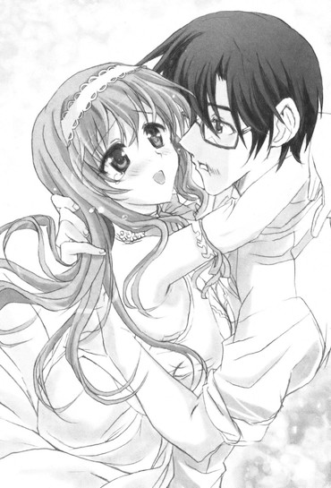
「春香......」
「だ、だけど......今この瞬間にそんなものは吹き飛んでしまいました......。裕人さんがこうしてここにいる......裕人さんの温かさと匂いがある......それだけで、もう全てがいっぱいで......」
「......」
声を詰まらせながらそう言ってくる。
詳しい事情は分からんが、春香も色々と不安な思いでいっぱいだったんだな......
だけど......二度とそんな思いはさせない。
心細い思いなんて......させやしない。
俺は春香の身体に回した腕にもう一度心からの決意の気持ちとともに力を込めて。
「春香......もう離さない......何があっても絶対に離さないからな......！」
「はい......はい......ずっと私を、捕まえていてください......」
お互いにそう言い合って固く身体を支え合う。
俺の身体には春香の体温が感じられて春香の身体には俺の体温が感じられて......
永遠にも──刹那にも思えたその時間。
──パチパチパチパチ......
最初に拍手を始めたのはだれだったんだろう。
パチパチ......パチパチパチパチパチ......！
「お......」
「あ......」
パチパチパチパチパチパチパチパチパチパチ！
初めは小さかった周りの招待客たちからの拍手のさざ波は次第に大きく温かな拍手のうねりとなっていって......
「あ、あー......」
「え、えと......」
パチパチパチパチパチパチパチパチパチパチ！
気付けば『ニーベルンゲンの間』は拍手の嵐で満たされていた。
春香と二人してどんな顔をしていいか分からなくなる。
と、その時だった。
「──ちょ、ちょっと待ちなさい！ こんなことが許されると思っているの!?」
「えっ」
そんな甲高い声が割り込んできた。
声を上げていたのは......何やら初めて見るセレブな感じの女子だった。
剣呑なことこの上ない目でこっちを睨み付けながら、大声で何かを叫んでいる。
「あ、あなた......正気なの!? 結婚式に割り込んできてこんな形で全てを台無しにするなんて......！し、しかも何、今のうすら寒くて低脳なことこの上ない口上は......こ、こんな茶番、認められるわけがないでしょう！」
「雪月花、さん......」
「雪月花......？」
なんかどこかで聞いた名前な気が......
その雪月花と呼ばれた女子は髪を振り乱してさらに。
「あ、あと少しだったのに！ あと少しで私の弟がこの乃木坂の家に婿入りして、私はその姉として裏で実権を握る......そうすれば乃木坂家の力を後ろ盾にして、あのいまいましい小娘を追放して天王寺家の覇権を奪回するチャンスだったのに......！」
「は？ それはどういう──」
何を言っているのか分からずに首を捻りかけたその時。
ドガン......ッ！
「!?」「！」「!!」
ふいにそんな轟音が響き渡り。
チャペルの屋根の部分が一瞬にして吹き飛んだかと思うと......そこに戦闘機が突っ込んできた。
空に向かって開け放たれた部分が塞がれて、ちょうど天井部に飛行機が突き刺さる形になる。
「あ......な......」
あまりに唐突な展開に唖然となる。
そんな中、その戦闘機の中から出て来たのは──
「......ふん、久しぶりね、ロドリゲス」
「お、お前は......」
そこにいたのは忘れもしないツインテールのブリザードお嬢様──天王寺冬華だった。
隣にはかしこまった執事の子犬川さんも引き連れている。
いや何でこの『絶対零度の氷姫』がここに......
状況がさっぱり分からず引き続き呆然とするしかない俺に。
「あの時の借りを返しにきたわ。あなたの活躍のおかげでわたしは窮地を救われた......その借りを見過ごすようでは正統なる天王寺家の後継者とは言えないでしょう。......それに、うちのバカ身内も少しばかり関わっているみたいだし、ね」
ちらりと横目で、今の衝撃で腰を抜かしていた雪月花と呼ばれた女子を見る。
女子は真っ青になって「あ、あわあわ......」とまるでサバンナでライオンと遭遇したガゼルのような表情を見せていた。......なんかよっぽどこのブリザードお嬢様にトラウマがあるみたいだな。
「......まあそれはいいわ。この件に関しては後でじっくり身体に訊くことにするから。──それよりロドリゲス、無事に目的は達成できたのかしら？」
「え、あ、ああ......」
「そう、それならよかったわ。じゃあここはわたしに任せて、あなたはもう行ってしまいなさい」
「え......？」
「詳しい事情は知らないけれど、あなたは花嫁を奪いに来たんでしょう。後始末はやっておくから、小さなハネムーンでも楽しんできなさいって言ってるの。ほら、この『永久凍土』を貸してあげる」
ひらりと戦闘機の上から地面へ飛び降りて、ツインテールとスカートを揺らす。
いやまあ花嫁を奪いに来たっていうのは多少語弊があるかもしれないってのはともあれ。
周りを見渡すと今の戦闘機アタックで瓦礫の山となったチャペル内。それを見て右往左往する招待客たち。「あらあら......」とどこか楽しげに口元に手を当てる秋穂さんと慌てた顔でそこに駆け寄る黒服たち。
「............」
......確かに、この場はひとまず退散した方がよさそうだ。
俺は春香の方を向いて。
「──春香、行こう！」
「あ、は、はいっ」
まだ目をぱちぱちとさせていた春香の身体を抱きかかえて。
そのままお姫様抱っこの体勢で二人して飛行機へと跳び乗った。
「──さ、小犬川、操縦は頼んだわよ。適当にエアクルージングをしてあげてちょうだい」
「──承知いたしました。ではお座りください。参りますよ、お二人とも」
「あ、は、はい！」
「わ、分かりましたですっ」
俺たちがうなずいたのを確認して。
飛行機は文字通り羽が生えたかのように空へと舞い上がった。
「ちょ、ちょっと待ちなさい！ こ、このまま行かせるとでも思って──」
「うるさい。あんたはちょっと黙ってなさい！」
「ひ、ひいっ！」
「......」
下からはなんかそんな冬華の声と女子の悲鳴とが聞こえてきたような気がするが......まあそれは置いておくとして。
俺たちを乗せた飛行機は真っ直ぐに空へと向かいグングンとその高度を上げていった。
空気の層を抜けて雲を抜けて、『ヴァルハラ城』やハッピースプリング島があっという間に小さな点となる。
「わ、わあ......すごいです......」
「ああ、そうだな......」
隣からの弾んだ春香の声にそう返す。
その横顔を眺めながら、ふと思った。
──昔、何かの映画でこんなシーンがあったような気がする。
アメリカの古い映画で、結婚式の最中に男が教会に乗り込んでいって、制止しようとする両親たちを押しのけて花嫁を奪っていく内容。
教会から飛び出した二人は、通りかかったバスに乗り込んでそのまま逃げていく──といった結末だったはずだ。
だけどその最後のシーンで、主人公の男の顔は喜びから次第に不安げな表情に変わっていく。
それは主人公の内心を示すものであると同時に、二人のこの先の未来が決して安穏ではないだろうことを表していて......
「............」
......不安がないわけじゃない。
......未来に対しての恐れがないわけじゃない。
俺たちの行く手に何があるかなんてことは分からないわけだし、分かったところで避けようのないことなんてたくさんある。きっとこれから先、俺たちの間には色々な問題が起こるだろう。これまでがそうだったように。
そのことは否定しようのない事実だ。
だけど──
「──裕人さん♪」
それだけど──
「──裕人さん、見てください！ あそこの島と島の間のところでイルカさんが跳ねていて......まるで『ドジっ娘アキちゃん』に出て来る対債務者用のマジカルイルカセラピーみたいです......♪」
「ん、そうだな」
「はい♪ とっても素敵です......♪」
それだけど春香のこの笑顔が傍にあれば......どんなことでも乗り越えていけるような、そんな気がするんだよ。
そのことだけは......胸を張って言える。
だから俺は春香の手をギュッと強く握って。
「春香──行こう！」
その俺の言葉に。
春香はこれまで見た中でも一番に輝く満面の笑みを浮かべて。
「──はい。裕人さんといっしょなら、どこまでも......♪」
迷うことなくそう答えてくれたのだった。
そんな俺たちを祝福してくれているかのように、尾翼近くにヒモでくくり付けた無数の空き缶をカンカンカン......と甲高く鳴らして、飛行機はさらに勢いよく空高くに舞い上がっていったのだった。
エピローグ
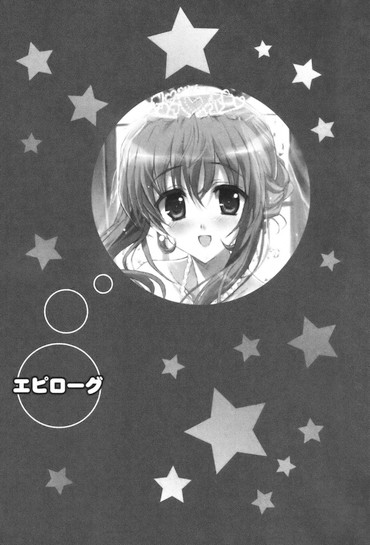
それはあまりに唐突で急転直下だった春香の結婚騒動からしばらくが経過して......一時期は秋に沖縄とかを訪れる台風のように暴風域となった俺たちの日常もようやく落ち着きを見せ始めた、ある秋の日のことだった。
十月も半ばを過ぎて次第に気候も肌寒くなり始める秋の朝。
俺は部屋のベッドの上で冬眠中のアライグマのごとくスヤスヤと安らかに寝こけていたところを......突然叩き起こされた。
「は～い、おに～さん、とりっくおあとり～と♪」
「......はっぴーはろーうぃんです」
「いたずらしちゃいますよ～♪」
「──（こくこく）」
「の、のわあぁあっ!?」
目を開けた俺の前にいたのは......なんか奇々怪々な一団。
黒尽くめでツインテールなミニスカート小悪魔と、何やら直径一・五メートルほどのどでかいカボチャ、ゴスロリで妖艶なボンデージ魔女、かわいらしいふりふりなフリル仕様のちびっこゴーストだった。
な、何だこれは!? 百鬼夜行が何かの弾みで現代日本の俺の部屋によみがえったのか......!?
驚きでベッドからずり落ちそうになる俺に。
「ほらおに～さん、いつまで寝てるの～？ もうお出かけの時間だよ～♪」
「へ......？」
「も～、ねぼすけさんなんだから～。ほら、早く着替えて着替えて～」
「......早起きは三文のパンプキンです」
「お寝坊さんにはお菓子はおあずけですよ～♪」
「──（こくこく）」
「......」
......美夏たちだった。
いつも通りのそこにいるのが当たり前って笑顔で楽しげにそう言ってくる。ま、またこのツインテール娘たちはまともにチャイムも鳴らさずに勝手に入ってきて......
......まあそれはもういつものことで突っ込んでも仕方ないので心の中でため息を吐いて諦めるとして。
「......それよりお出かけってどういうことなんだ？」
「え？」
「出かけるって、まだ時間はあるだろ？」
憮然とした顔でそう返す。
確かに今日は出かける用事が入っていたが、それは午後からのはずだ。今の時間は午前九時であり、まだいくら何でも早すぎると思うんだが......
その言葉に美夏はちょこんと首を動かして。
「ん～、それはいいんだよ。ちょっと予定変更ってゆうか、ある意味予定通りってゆうか～」
「？」
「まあまあ、細かいことはい～の。とにかくおに～さんは黙って来てくれればい～んだよ。これもお姉ちゃんのためなんだから。ほら、いいからいいから～♪」
「......カボチャの馬車で参りましょう」
「お望みならば裕人様用のドラキュラの衣装もありますよ～♪」
「──（こく）」
「あ、お、おい」
追い立てられるようにベッドから出されて、無理矢理に手を引っ張られる。
......ったく、相変わらず強引だな、このツインテール娘は......
──あの春香の結婚騒動から一ヶ月ほどが経った。
オールメンバーでフルアクションだったハッピースプリング島での大立ち回り。
あの後......冬華の計らいによる飛行機でのプチハネムーンを終えて『ニーベルンゲンの間』に戻った俺たちを待っていたのは。
「──おかえりなさい、裕人さん、春香」
「......ふん、よく戻って来たな」
「え......」
にこやかに笑みを浮かべる秋穂さんと、頬のところに絆創膏を貼って仏頂面な玄冬さんだった。
さらにその後ろには平蔵さんや黒狼たち、葉月さんや那波さん、水面さんやアリスのメイド隊の皆、美夏や椎菜や澤村さんたち、由香里さんにルコに信長に三馬鹿たちの姿までもがあって......
「こ、これはどういう......？」
「え、えと......？」
状況が分からずに顔を見合わせるしかない俺たちに。
「──全ては終わったということですよ、裕人さん」
「......まだあくまで暫定だが、いちおうお前は認められたのだ。春香と共に歩んでいくに相応しい者として、な......」
「え......？」
秋穂さんと玄冬さんがそう厳かに言ってくる。
いやそう言われても余計にワケが分からないんですが......
さらに首を傾ける俺たちに、秋穂さんたちは事の真相を話し始めて──
「......」
──結論から言ってしまえば......あの一件は全て秋穂さんたちの策した計画だった。
春香と俺の気持ちを、これから先の未来を共に歩いていくための揺るぎ無い決意と覚悟があるのかどうかを確かめるための企て。
俺も色々と厳しくきついことを言われたが......春香の方もハッピースプリング島に連れて行かれた後に、俺といっしょに寄り添い合っていく覚悟があるかを真摯に問われたらしい。
生きてきた世界が違う者と同じ時間を過ごしていけるのか。
その相手を支えていくために自らの身を賭ける決意があるのか。
そして......春香にとって俺の存在とはどんなものなのか。
だけど春香はその全てに強い想いで応えて。
あとの結論は俺が結婚式にまでやって来るかどうかに委ねられた......とのことだった。
そしてその結論がどうだったのかは見ての通りであり。
どうやら俺たちは......いちおうではあるが、認められたらしかった。
ちなみに『ヴァルハラ城』の途中にあった様々なトラップは全てメイドさんたちの能力を駆使しなければ通ることができないもので、俺がメイド隊全ての信任を得ていなければ通過することができない仕組みになっていたという。
「──ごめんなさいね。だけどこれは二人が同じ未来を選択するためにどうしても必要なことだったの。......この人も昔、同じことをしたのよ」
「え......？」
ちらりと隣の玄冬さんを見て言う。
「......ふん。乃木坂家の末席に連なろうとする者として、この程度は乗り越えられて当然の試練だ。だが......春香も裕人も奮闘したとは思う。よくやったな」
「ええ、貴方たちはとてもがんばったわ。お疲れさま」
二人してそう賞賛の言葉をかけてきてくる。
う、うーむ、なんか普段は諭されたり訓示されたりすることがほとんどなこの二人に労いの言葉をかけられるとどういう顔をしたらいいのか分からんな......
隣では春香も「え、えと、えと......っ......」とあわあわとしていて。
「......」
とまあ事の真相はそんな具合だったわけだが。
とはいえ──結婚という言葉自体はあながち全てウソというわけでもなかったらしい。
あの時に何やらよく分からないことをわめいていた天王寺雪月花という女子。
その弟が......春香の結婚相手の候補として上がっていたことは事実だという。
向こうの天王寺雪月花の方から持ちかけてきた話らしいが......俺が結婚式にやって来なかった場合には、花婿の第一候補として挙げることも考えていたらしい。
「まあ......向こうの方にも何やら色々と思惑はあったようですが......。ですが私は、必ず裕人さんが春香のために現れてくれると信じていましたから、何の問題もありませんでしたわ。ふふ♪」
「......」
何だかそこはかとなく釈然としない部分も残ったが、秋穂さんにいつものにこやかな笑顔でそんなことを言われてはそれ以上は何とも言えない。
何となくモヤモヤとした秋の雲みたいな心地になっていると。
「お、おに～さん、ケガはだいじょうぶ!?」
顔色を変えた美夏がそんな声を上げて駆け寄ってきた。
「ひ、ひどいよ......おに～さんの顔が威嚇中のハリセンボンみたいに......。お、お父さん、これはやりすぎだよ！」
「む、むう......？」
「え、裕人、ケガしてるの......？ うわ、ちょっと、ひどい顔だよ......!?どうしてこんなトラフグみたいに......!?」
「ほ、本当です......綾瀬くんの顔がパンパンのマンボウにようになって......ひどい......」
「わー、これはなかなかひどいスプラッタフィッシュ面だぜー......」
「ここまでひどいのはそうそうお目にかかれないよね～。ゴブリンシャークとかくらいじゃないと～」
椎菜たちも驚いた顔でそう心配の声をかけてきてくれる。いやそれは嬉しいんだがそこまで俺の顔がひどいひどい言わなくても......
「な、何でこんなことしたの!? お父さんはそうやってすぐに暴力に頼るんだから......！お父さんのばかっ!!」
「え......？」
さらに葉月さんたちも。
「......いかに玄冬様といえども、これは軽蔑すべき所行です」
「武道の心得のない相手に手加減をすることは武道家としての最低限の義務だといいますのに～」
「──（こくこくっ！）」
「そ、そうは言ってもだな、あそこは男同士の本気の拳のやり取りで......」
「......暴力は、反対です......」
「............!!（ガーン）」
最後には春香にまで非難する目で見られて。
玄冬さんはシャケ獲りを否定されたツキノワグマみたいにうちひしがれていた。
う、うーん、俺も玄冬さんを思いっきり殴ったわけだからある意味ではお互い様のような気もするんだが......ま、まあそれはここでは黙っておこう。
「......」
まあ──そんなこんなで一件落着して。
ハッピースプリング島での一件は幕を下ろしたのだった。
◇
「さ、着いたよ、おに～さん♪」
「え......？」
いまだにハロウィンモードなままの美夏たちに連れて来られた先。
そこは何やらカッチリとした雰囲気のやたらとセレブそうな、男性物の洋品店だった。
売っているのはやたらと高そうな礼服ばかりで、辺りにいるのは身なりのいい上品な感じの紳士たちである。
「こんなところで何をするんだ？ まさか春香の誕生パーティーでホントに俺にも仮装しろっていうんじゃないだろうな......？」
今日これから行われるのは春香の誕生日パーティーである。
本日十月二十日は春香の十八歳の誕生日であり、そのお祝いの会を今年はハッピースプリング島ではなく日本国内で催すということで、午後からはその会場に行くことになっていたのだ。
「ん～、ちょっと違うかな～。おに～さんの仮装姿は見てみたい気はするんだけど、それはまた別の機会にね。──というわけで、ほい、おに～さん、これ着てみて♪」
「え？」
そう言って渡されたのは何やら高そうな仕立てのタキシード。
まるでどこぞの舞踏会や披露宴などでパーティーの主役が着る一張羅のようである。
「え、これを着るのか......？」
思わずそんな声が出る。
いくら春香の誕生日パーティーだからって、今回はそこまで大規模なパーティーではないわけだし、ここまで正装をするのはやりすぎな気がするんだが......
だが俺のその言葉に美夏はツインテールを振って。
「ううん、これで合ってるんだよ♪ ほら、い～からい～から♪あ、ちゃんと胸ポケットにハンカチを入れるのを忘れないでね～」
「お、おい......」
ぎゅ～っと俺の胸にタキシード一式を押し付けてくる。
いやもうさっぱりワケが分からんのだが......
意図の分からないタキシードプッシュに戸惑い顔を浮かべる俺に美夏は。
「い～のい～の、これくらいやったって。だっておに～さんは今日の主役の一人なんだよ？一世一代の晴れ舞台にめいっぱいオシャレをしなきゃどこでするのかって話じゃ～ん♪」
「主役......？」
いや今日は春香の誕生日であるわけだから、主役はあくまで春香であって俺じゃないんだが......
そう口にした俺に。
「え～、何ゆってるのおに～さん」
美夏はにんまりと笑って、こう言ったのだった。
「──そんなことないよ～。だって今日は、記念すべきおに～さんとお姉ちゃんの結婚式なんだからさ♪」
◇
......ここに来て初めて聞いたというのが何かの間違いだと思いたいんだが、これから行われるのは春香と俺の疑似結婚式であるらしかった。
「え、あれ～、ゆってなかったっけ♪」
「......まったくもって、これっぽっちも完膚無きまでに聞いてない」
「ん～、そだったっけかな～♪ まあ細かいことはい～じゃん♪ほら、せっかくのお姉ちゃんの誕生日だし、こうゆうのもいいかな～って思って企画してみたんだ～。ほら、わたしたちからの誕生日プレゼントだよ♪」
「......ハッピーバースデーです」
「悦んでいただけると思ったのですが～♪」
「──（こっくり♪）」
さらりと笑顔でそんなことを言ってきやがる。
いやこのツインテール娘たち、絶対にわざと黙ってただろ......
それもその方が面白いとかそういう理由で。
それは小麦粉などの粉塵が舞ってる場所でライターを点ければ即座に爆発するってくらいに自明の理なんだが......まあもう今さらそのことを突っ込んでもこれ以上ないってくらいに暖簾に腕押しだってことはよく分かっている。
俺ははーっとため息を吐いて。
「......分かったよ。それで、俺はどうすればいいんだ？」
「さっすがおに～さん♪ 飲み込みがはやくて助かるよ～♪」
美夏がにっこりとそう笑って俺の頭をなでなでとすると。
「じゃあまずはこのタキシードを買うよ♪ それでそれに着替えてもらったら、そのまま式場に移動するから♪」
「......了解」
というわけでタキシード一式とその他の必要な小物を買って式が行われるという会場へと向かい。
美夏たちに連れられて俺がやって来たのは──
「へへ～、今日のおに～さんとお姉ちゃんの結婚式の会場はここだよ。やっぱり記念すべき二人のハッピーウエディングだったら場所はここ以外にはありえないと思ってさ、お父さんの名前を使って借り切ったんだ～♪」
「ここは......」
──秋葉原、だった。
そこの駅からほど近い場所にあるベルサールという建物。
確かここでは前に春香と初めての〝デート〟で来た時に、何やらアニメ関係のイベントとかをやっていた......
「......」
こんなところでやるのか......
休日には歩行者天国にもなる大通りに面したオープンスペース。外に向かって広けている部分が歩道と隣接しているため通行人にほとんど丸見えである。いや羞恥プレイもいいところな気がするんだが......
そこはかとなく困惑した気分になる俺に。
「さ、おに～さん。じゃあこっち来て。新郎の控え室に案内するから♪」
「え？ ん、ああ」
にっこりと笑う美夏に手を引っ張られて。
初めて入る白亜の建物の中へと入った。
建物の地下にあたる部分にある控え室は、パーティションで区切られたうちのリビングほどの広さだった。
すでに水面さんや鞠愛さんなどのメイドさんたちがやって来ていて、色々と準備のようなことをやっている。
「──いらっしゃいませ、裕人様。お待ちしておりました」
「本日はお日柄も良く秋晴れの気持ちのいい日ですね♪」
「この場には強力な結界を張っておきました。今日一日、この中はいかなる聖域よりも清浄になっております」
「あ、はい。今日はよろしくお願いします」
メイド侍従長さんたちにそう挨拶をして。
「じゃあおに～さん、わたしたちも着替えとかしなくちゃだから行くよ。その後にお姉ちゃんのところに顔を出してくるから、その間にちゃんと準備しとくんだよ？」
「ああ、分かった」
「ん、それじゃまたあとでね～。──あ、そだ。そういえば色んな人たちが挨拶に来るかもしれないから、それにもちゃんと対応するように～♪」
そうにっこりと笑って、美夏と葉月さんと那波さん、アリスは控え室を出て行った。
色んな人たち......？
その言葉に若干首を捻りつつその背中を見送って。
「──それでは裕人様、まずはこちらの式で使う点火用キャンドルのチェックからよろしいでしょうか？」
「え？ あ、はい」
水面さんに促されてもろもろを始める。
内容的には服装をキッチリとウエディング仕様に着付けたりヘアメイクをしたり簡単な式の流れを予習したり。
結婚式なんてもんは生まれてこの方初めてだったが（当然だ）......水面さんたちが色々と手助けをしてくれたおかげで何とか進めることができていた。
で、準備を始めて三十分ほどしたところで。
コンコン......
「？」
控え室のドアがノックされた。
ああ、そういえばだれかが挨拶に来るとか美夏が言ってたっけか。とはいえ挨拶って、いったいだれが来たんだ......とドアを開けると。
「おい裕人！ どういうことだ！」
「！」
いきなり飛び込んできた聞き慣れた声。
そこにいたのは......三馬鹿と信長だった。
部屋の中に入ってきたかと思うと血相を変えた表情で迫ってきて。
「聞いたぞ！ 俺たちを差し置いていきなりお前が乃木坂さんと結婚式だなんて......！」
「そうです！ そもそも付き合っているという話もつい先日聞いたばかりだというのに、それから舌の根が乾かない内に結婚などと......！」
「俺たちを参列者に呼んだことは感謝するが......それでも万死に値する！ゴートゥーヘェル！」
声を揃えながらそんなことを言ってくる。
いや参列者って......参列者!?
まさかとは思うが美夏たち......この疑似結婚式に客を招待したのか？普通なら考えられんがあのツインテール娘たちなら十二分にあり得る。状況を面白くするためなら大抵のことはやりかねんし......
若干頭の痛くなる気分を覚えながら俺は。
「あー、いや、今日やるのは本当の結婚式じゃなくて、あくまで疑似結婚式なんだ。ちょっとした記念モノというか......」
「......そうなのか？」
「ああ。しかも俺が聞いたのもついさっきで、いまだに何が何だかの感じで......」
それは俺の正直な気持ちでもある。
その言葉に三馬鹿たちは顔を見合わせて。
「......ふっ、ならいいんだ。それならばこれで俺たちも心置きなく『花嫁とウエディングドレスの魔力と恒久平和の因果性』を語れるというものだ」
「まずはウエディングドレスの下に着るべきはタイツかガーターベルトはたまたナマ足かという基本点から話し合いましょうか」
「俺は断然ガーターだ！ あの魅惑の釣り紐とそれが作る禁断のデルタゾーンは他にない彩りをナマ足に与える......まさに神域なのだ！」
ブツブツとそんなことを話し合いながら部屋を出て行った。
まったく、こんな時までまったくもっていつもと変わらんな......
その相変わらずのアホっぷりに呆れつつ、そういえば美夏は〝色んな人〟が来るとか言ってやがったが、まさか他にもだれか呼んで......
コンコン......
と、そこで再びドアがノックされた。
開けてみると次にやって来たのは──
「おーっす。綾瀬っち、元気かー？」
「お、お邪魔します......」
「おお～、控え室ってこんな風になってるんだね～」
「あ──おはよう、裕人......」
澤村さんに朝比奈さん、澤北さんに椎菜の女子組だった。
まあ三馬鹿たちがやって来るというのならこの四人が来るのは当然であるわけだが......それでも他にも参列客が呼ばれてるんじゃないかっていう予想が大当たりしたことにため息を隠せないというか......
若干疲れた顔になる俺に。
「お、なかなかきまってるじゃん、そのタキシードー♪蝶ネクタイがいかすぜー♪」
「あ、りょ、良子ちゃん、勝手に取っちゃだめだよ、着崩れしちゃう......」
「だいじょぶだいじょぶー♪ メイドさんたちがいるんだから後でちゃんと何とかしてくれるってー♪へへー、綾瀬っちの蝶ネクタイ、ゲットだぜー♪」
「あはは～、むらむら、口につけるとおヒゲみたいだ～♪」
澤村さんたちが人の蝶ネクタイで楽しそうにきゃっきゃっ♪と遊んでいて。
そんな中。
「──おめでとう、裕人」
「椎菜......」
椎菜が少しばかり遠慮がちな風にそう言ってきた。
「いきなり美夏ちゃんに結婚って言われて驚いたけど......疑似結婚式、プレマリなんだね。本当に二人が結婚しちゃうのかと思って最初聞いた時は、えー！って思っちゃったけど......」
「え、ああ」
「でも準備がすごくてびっくりしちゃった。さすが乃木坂さんの家っていうか......」
「ん、そうだな」
「ほんと、豪勢だよねー」
そこで椎菜は両手を頭の後ろに回すと天井を見上げて。
「そっかー、だけど結婚かー。なんかぐっと来るものがあるなー」
「......」
「んー、ちょっとは複雑な気持ちもあるけど......やっぱりあたし、幸せそうな裕人と乃木坂さんを見てるのが好きだよ？何だかこっちまであったかいっていうかまったりとした気分になれてさ♪──だから今日は純粋にお祝いしたいと思うんだ。あたしは裕人のことが好きだけど、乃木坂さんも好きだし、今の関係も気に入ってるし。──こうしてるのがあたし、今は一番幸せだって気が付いたから♪」
「椎菜......」
「へへ......♪」
そうフレンドリーに笑みを見せて、椎菜は「それじゃあまた後でね♪」と言って、澤村さんたちと控え室を出て行った。
それはさわやかな一陣の風のような印象を残すもので......
ありがとう、椎菜......
晴れやかな笑顔のフレンドリー娘の背中に心からの感謝を送った。
「......」
その後も色々と千客万来だった。
どうにも美夏たちが事前にかなりたくさんの人数に今日のことを宣伝していたらしく、普段もよく見る顔から懐かしい顔まで次から次へと控え室を訪れてきた。
エリに光に美羽の双葉女学院のかしまし女子中学生ズたちが。
「おにーさん、春香お姉さんと結婚しちゃうってホントなんですかー！」
「あのねあのねぇ、美夏ちゃんとエリちゃんがぁ、と～っても悲しがってるのぉ。......それに美羽もぉ、少しだけさみしいな......」
「お、おにーさん......（里子に出される仔犬みたいな目）」
「え、あ、いや......」
そんな風に訴えかけられて。
北海道で知り合った華や舞葉たちや椎菜の弟妹の幸一や悠里や菜々子たち（今朝の飛行機でわざわざ来たらしい。行動力あるな......）が。
「なあなあ、にいちゃん、結婚するってマジなのか!?」
「王子様なのにお姉ちゃんのこと捨てちゃうんですか!?」
「......しいなおねえちゃんとは......あそび、だったの......？」
「い、いやそういうわけじゃなくてだな......」
「そういうわけじゃないならどういうことなのー？」
「も～、良子っちが言ってた通りスケコマシだな～」
輪になって囲みながらそんなことを言ってきて。
珍しくアロハシャツでなくスーツ姿の王季さんと平蔵さん、さらには黒狼たち数人が。
「聞いたぞ、少年よ。例の試練を乗り越えたそうじゃのう。平蔵が褒めておった」
「......見事でした。メイド隊皆の心を掴み、さらには葉月もこの方のことは信頼している様子......春香様のお相手としてこの上なく相応しいかと」
「ほうほう、なるほど」
「さらにこの方は臆することなく玄冬様と正面からやり合われました」
「何ともお見事な胆力です」
「我々黒狼も、いずれは貴方様に仕えていこうとあの瞬間心に決めましたぞ」
「や、そんな......」
いきなりそんな大絶賛を受けてどうしていいか分からなくなったり。
さらには平城山芳香たち聖樹館女学院のお嬢様たち。京都で出会った那波さんの母親の那奈瀬さんや日菜さん。姫宮みらんや茅原さん、野乃ちゃんなどのスリーピースプロダクションの人たち。佐々岡修斗やシュート・サザーランドなどのイヤミコンビなどまでもがやって来て......控え室は大賑わいだった。
ちなみにそんなオールキャストな中、信長の妹である真尋ちゃんだけは道に迷って青森県に行ってしまったらしくついに顔を見ることはなかった。本当に最後の最後まで巡り合わせが悪いな......
そんな具合に様々な人たちと挨拶を交わして。
「──ふう」
ようやくひと段落がついた。
式の開始まであと三十分足らずという時間。
今は最後の細かいチェックと式の前に心を落ち着かせたいということで控え室で一人にしてもらっている。
それにしても春香との......結婚式か。
イスに身体を沈めながらそう心の中でふとつぶやく。
まああくまで疑似である上に伝えられたのがついさっきであるのでまだ何が何だか分からない部分もあるけれど、それでも感慨深いというか嬉しいイベントなことには変わりはない。
部屋の隅のテーブル上に置かれていた水で喉の渇きを潤して最後にひと息吐こうかと思った時に。
コンコン──ガチャ。
「？」
「......邪魔を、するぞ」
そんな声とともに開かれたドア。
入ってきたのは......玄冬さんだった。
「......」
「......」
「............」
「............」
......空気が重かった。
部屋中の空気がズッシリと質量を持って直接身体にのしかかってくるような感じ。
まるで着ているタキシードが鉛製になってしまったかのように、全身にプレッシャーが降りかかってきている。うう、気まずい......
「......」
「......」
そのままどれくらいその状態だったか。
やがて玄冬さんがその重い口を開いた。
「......綾瀬裕人よ」
「え、は、はい......」
「......お前に言いたいことはたくさんある。お前はまだまだ未熟だしクチバシの黄色いひよっこだ。努力はしていないとは言わんが、全てにおいて半人前であることは否めない......」
「......」
ジロリとサングラス越しに俺の顔を見て。
「......そんなお前に春香のことを任せるのは不安でならん。いやそもそもだれかの手に春香を委ねること自体まだ私には納得がいっていない......！だからせめて一発殴らせろ......！私のこの腹の憤りをぶつける矛先となるがいい......！」
「え......！」
それってただの八つ当たりじゃ......
「......と言いたいところだが、それはこの前のハッピースプリング島でさんざんやり合ったことであるし、せっかくの晴れの日にお前の顔に青アザでも作ってまた春香や美夏に文句を言われてはたまらん。だからそれは自重する。その代わり──」
「は、はい......」
そこで玄冬さんはイスから立ち上がった。
どこか剣呑な雰囲気。
うう、これは殴られるということはなくとも代わりに気合いを入れる張り手だとか精神を矯正する精神注入棒での一撃だとか、そういうきつい父親の一撃が飛んでくるパターンか......と覚悟していたんだが......
いつまで経ってもそれはやってこずに。
「......？」
代わりに。
──スッ......
「え......」
「......春香のことを、頼む」
サングラスをおもむろに外して......その場で床に手を突いて頭を下げる玄冬さんの姿があった。
「げ、玄冬さん!? ちょっと、何を......！」
「......春香は私の宝だ。何よりも大事な宝であり替えることのできないまさに私の命そのもの......。春香が幸せになるのならば私はどうなっても構わない。そのためにお前が必要だというのなら......私にできることは、これくらいしかあるまい」
「玄冬さん......」
「だから春香のことを......頼む」
「......」
真っ直ぐに俺の目を見てきてさらにグッと頭を下げる玄冬さん。
その姿からは、ああ、この人は本当に心から春香のことを大事に想っているんだという真意がヒシヒシと伝わってきて......
「──分かり、ました」
「......」
「春香のこと......任せてください。絶対に、必ず、幸せにしてみせます......」
「......そうか」
その言葉に玄冬さんは短くそう返してきて。
「......それが聞ければよい。その言葉を信じる。頼んだぞ」
一言だけそうつぶやくと、静かに控え室を出て行った。
その背中は哀愁とともに父親としての思いやりに満ちていて......
「......」
──春香のこと......絶対に、絶対に幸せにします......！
そう心から誓ったのだった。
◇
そしていよいよ春香と俺の、結婚式が始まる──
◇
──式が行われるのは建物一階のオープンスペースにあたる場所だった。
さっき見た時には普通のスペースだった場所。
だけど控え室で待機をしている間に準備がなされたのか、そこには祭壇や絵画や様々な調度品、ステンドグラスが備え付けられていて......まるでサグラダ・ファミリアが秋葉原に引っ越してきたんじゃないかと見紛うばかりの（と言うと若干言い過ぎかもしれんが）、この上なく見事な教会仕様のスペースへと様変わりしていた。
「すごい......」
ヘタをすれば『ニーベルンゲンの間』よりも立派なくらいである。
秋葉原でこんな見事な教会が見られるなんて......
不可能を可能にする乃木坂家の財力に改めて驚嘆の息を吐きつつ出入りスペースの陰から会場の様子を眺めていると。
「──それでは裕人様、まずは新郎の入場から始まります。このまま前に進んで、祭壇の前で春香様をお待ちください」
「あ、は、はい」
水面さんに促されて教会へと足を踏み出す。
「──これより新郎が入場いたします。皆様、拍手をもってお迎えください」
「......」
出入り口から教会スペースへと入るとすでに参列者の入場は終わっていて、ヴァージンロードの両脇は見慣れた顔でいっぱいだった。
「ひゅ～ひゅ～、おに～さん、かっこいいよ～♪」
「綾瀬っち、手足が同時に出てるぞー♪」
「お、おにーさん、素敵です......！ だ、だんでぃーです......っ......！」
「エ、エリ、身を乗り出しすぎだよ......？」
「かっこいいです、王子様～♪」
「ふむ、馬子にも衣装とはこのことだな。我が弟ながらなかなかにいいではないか」
そんな声が次々と飛んでくる。
加えて教会仕様にしたものの基本はオープンスペースなため、道行く通行人からも色々と好奇の視線やら声やらが飛んできて......
うう、なんか動物園で立ち走りを見世物にされるエリマキトカゲの気分だ......
そんな何ともいえないこっ恥ずかしい心地になりながら祭壇の前へと移動して。
すでにその場にスタンバイをしていた神父さんに軽く会釈をして、春香を待つ。
「......」
緊張の時間。
何だか一分が一時間になってしまったような、そんな感覚に襲われる。む、むぅ、落ち着かない......。
と。
「──それではこれより、新婦の入場を行います。参列者の皆様はどうぞご起立をお願いいたします」
「！」
そんな水面さんの声とともに祭壇横に置いてあったパイプオルガンから荘厳な感じの音楽が流れ出して（ていうか今気付いたが演奏者が由香里さんだ......）。
周りにいた参列者たちが皆一斉に立ち上がる。
一瞬の静寂。
そして小さなざわめきとともに──玄冬さんにエスコートされたウエディングドレス姿の春香が教会部分の入り口から姿を現した。
「あ......」
一瞬にして目を奪われた。
視界に顕現した圧倒的な白の奔流。
まばゆいばかりの純白の輝き。
流れる神秘的な音楽を背景に、真っ白なウエディングドレスに身を包んだ春香は一歩一歩を踏みしめるようにして祭壇へと近づいてくる。
それはまるで地上に舞い降りた美しい女神のようで......
「............」
思わずゴクリと息を呑んでしまった。
時間が止まったのかと思った。
ここだけ世界が現実と切り離されたのかと思った。
──きれい、だ......
それしか言葉が出て来なかった。
天使の羽根のようにどこまでも白い純白なウエディングドレス。
髪の毛のラインに沿って流れる、降り注ぐ雪のようなヴェール。
玄冬さんに腕を引かれてヴァージンロードを歩いてくる春香の姿は、それはもう〝美しい〟と〝きれい〟以外のどんな形容もあてはまらないものであり──
「......」
ほとんど魂を抜かれた状態の俺を横目に、真っ白な春香は祭壇の前にまでやって来た。
小さくこっちに向けて顔を上げると。
「......裕人、さん......」
「え......」
「......どう......でしょうか......？ きちんと裕人さんの花嫁を......できていますでしょうか......？」
ちょこんと首をかたむけて恥ずかしげにそんなことを言ってきた。
その勢いでこぼれるようにヴェールの隙間から春香のサラサラな髪の毛が僅かに流れて......
「あ、い、いや......」
「......？」
「そ、その......何だ、うまくは言えないけれど......できてないなんてそんなわけがない！そ、それに......きれい、だ......ものすごく......」
「あ......」
その言葉に春香がぱあっと顔を輝かせる。
その笑顔もまるで天上に咲く汚れのない純粋な白百合がこぼれるかのようで思わず再度見とれてしまって......
「......ゴオッホォン!!」
「！」
と、そこで春香の隣の玄冬さんが豪快に咳払いをした。
サングラスの下からジト目で俺たち（主に俺）のことを見てくる。
「あ、あー、ええと......」
慌ててタキシードの襟元を正し我に返る。
そ、そうだそうだ、今は結婚式の新婦入場の途中で......発情期のシマウマみたいに惚けてる場合じゃない！
それを見た玄冬さんが強い視線とともに俺の肩を叩いて。
「......頼んだ、ぞ」
「......はい」
その言葉に同じくらい強い決意でうなずき返して、玄冬さんの手から春香をしっかりと受け取る。
「──それでは、ただ今より結婚式を執り行います」
それを確認した神父さんがそう宣言をした。
軽い札とともに手に持った聖書を読み上げ始めて。
同時に厳粛な空気が教会内を包み込む。
「......」
「......」
読み上げられる聖書の言葉。
そしてそれはやがて終わりへと近づき。
いよいよ──式の要である誓いの言葉の斉唱へと入った。
「──それでは今から、誓いの言葉を斉唱していただきます」
神父さんはまず俺の顔を見ると。
「──汝綾瀬裕人は、この女乃木坂春香を妻とし、良き時も悪き時も、富める時も貧しき時も、病める時も健やかなる時も、共に歩み、他の者に依らず、死が二人を分かつまで、愛を誓い、妻を想い、妻のみに添うことを、神聖なる婚姻の契約のもとに、誓いますか？」
確認の言葉。
それに俺は迷いなくうなずいた。
「──誓います」
「よろしい。では次に──」
神父さんは春香の方を向いて。
「──汝乃木坂春香は、この男綾瀬裕人を夫とし、良き時も悪き時も、富める時も貧しき時も、病める時も健やかなる時も、共に歩み、他の者に依らず、死が二人を分かつまで、愛を誓い、夫を想い、夫のみに添うことを、神聖なる婚姻の契約のもとに、誓いますか？」
「──はい、誓います」
俺と春香、二人の言葉が教会内に響く。
それは誓約の言葉。
これから先に何があろうと互いが互いを支え合い寄り添い合って、共に未来を歩いていこうと誓う......約束の言葉。
「確かに確認しました。それでは指輪の交換を──」
「春香......」
「裕人さん......」
神父さんの言葉を受けて。
お互いに向き合ってそれぞれの手を取るように触れ合うと。
まずは俺の手から春香の左の薬指へ。
続いて春香の手から俺の左の薬指へと。
厳かに、だけど睦まやかに。
指輪が──交換された。
「よろしく頼むな、春香......」
「はい、こちらこそ......」
お互いの指に輝く銀色の指輪。
これは約束と未来との証であり、俺たちがこの一年半で築き上げてきた想いと絆の光でもあるんだろう。
「──交換はなされました。今この瞬間──この二人を夫婦として認めます！」
神父さんが俺たちの手を重ねて高らかにそう宣言をして。
「ひゅ～ひゅ～、お姉ちゃんおに～さん、二人とも、おめでと～♪」
「裕人も......乃木坂さんも......とっても、素敵だよ......！」
「は～、いいわね～ん......おねいさんも早くピンクダイヤモンドの指輪をハメてくれるセレブでイケメンな年下の男の子をゲットしたいわ～」
「私はそれよりも酒樽一年分の方がいいがな。──だがそれでもこれは立派な式だ。我が弟と新たな義妹の門出を祝おう」
「春香ちゃん......よ、よかった......聖樹館の時にはもう見られないと思っていた、春香ちゃんのこんなに素敵な顔が見られて......」
「うん......あの人の傍では春香ちゃん、いつも笑顔になれるんだね......」
「春香ちゃん......本当に幸せそう......よかったよぅ......」
周りからのそんな声とともに。
結婚式はクライマックスを迎えたのだった。
◇
「......それでは、これより綾瀬裕人、乃木坂春香お二人の婚儀に伴う結婚披露宴を開催したいと思います。司会は不肖ながら私、乃木坂家メイド隊序列第一位の桜坂葉月が務めさせていただきたいと思います。皆様、どうぞよろしくお願いいたします......」
教会仕様のオープンスペースでの結婚式から、そのまま場所を移して披露宴が始まった。
式に比べるとだいぶくだけた感じの賑やかな祝宴。
のんびりとして終始まったりとした雰囲気で進行していくと思いきや。
最初にちょっとしたサプライズがあった。
それは何かというと──
「......まずはプログラム一番、来賓祝辞をたまわりたいと思います。塔ヶ崎家現当主であらせられる塔ヶ崎秀顕様は壇上にお越しくださると──」
葉月さんがそう言いかけて。
「──待ってちょうだい、葉月さん」
「......？」
秋穂さんがそれを止めた。
「ごめんなさいね。出鼻をくじいてしまったようで悪いのだけれど......私たちは、あなたに司会の役目を降りてもらいたいと思っているの」
「......え......」
その言葉に葉月さんが怪訝な顔になる。
何だ......？ 突然司会の役目をやめてもらいたいだなんて......。考えにくいが何かこの無口メイド長さんがミスでもしたのか......？
ざわめいて顔を見合わせる俺たちに。
秋穂さんは静かに口を開いて。
「──あのね、葉月さん。私たちはあなたに、春香と裕人さんの仲人になってもらいたいと思っているの」
「......な、仲人......？」
「そうよ。ただの司会なんかでなくて、式が終わった後も二人のこれからを見守っていく特別な役目......。葉月さんにはそちらこそが相応しいと思うから。お願い......できるかしら？」
その提案に葉月さんが困惑した顔になる。
「......で、ですが秋穂様。仲人というものは本来でしたら親族の方やお世話になっている知人の方がなるものであり、私などのただのメイドが拝命してよいものでは......」
そう困ったように口にするが。
だけどその言葉に秋穂さんは首を振って。
「そんなことはないわ。仲人というものはもっと自由なもので、新郎や新婦に最も近しい者が選ばれるものなの。親族や関係者のみに限定されるものではない......。だからこそ、私たちは他ならぬあなたにこの役目をお願いしたいと思っています。だって春香のことをだれよりも想って、だれよりも春香のために頑張ってきてくれたのはあなただって、ここにいる人たちならばだれもが知っているから」
「は、はいです！ 葉月さんはいつだって傍にいてくれて私のことを支えてくれて、まるでお姉さんみたいで......わ、私も、葉月さんに仲人さんになっていただきたいです......！」
「ああ、俺も春香と同じ意見だ」
「葉月さんの他にこの役目に相応しい方はいらっしゃらないと思いますよ～♪」
「メイド隊一同、葉月さんを推しております」
「──（こくこく！）」
「......あ......」
那波さんたちメイドさん一同もそう言ってくる。
それを聞いた無口メイド長さんの目に涙を浮かべて。
「......あ、ありがとうございます......身に余る光栄......謹んでお受けいたします......」
声を詰まらせながらそう口にした。
本人はまだ恐縮してたみたいだけど、この人が春香に対してしてきてくれたことを考えれば......当然だよな。
そんな感じにサプライズがあって。
葉月さんが司会から仲人へとレベルアップを果たして、披露宴は開始された。
「......それでは、これより仕切り直しをさせていただきたいと思います。まずは──」
改めての挨拶があり、それを皮切りに様々なプログラムが進められていく。
主賓である新婦父の玄冬さんと新郎姉のルコの祝辞から始まり。
様々な来賓の挨拶や乾杯の音頭など、色々なプログラムが行われた。
新郎新婦の子供の頃の紹介ビデオでは。
「きゃ～、あれおに～さんなの？ あはは、かわい～♪」
「あれは幼稚園に入る時の写真だな。確かあの直後に近所で飼われていたチャボに追いかけられてドブに落ちていたはずだ。懐かしいな」
「む、むう......」
「あ、こっちは春香おねーさんのだ！わー、聖樹館幼稚舎の制服だー、似合ってるー♪おねーさん、昔からお姫様みたいだったんですねー♪」
「え、えと......」
春香と二人で赤面状態だったり。
キャンドルサービスで各テーブルを回る時には。
「あ、あれ......火が点きません？」
「ホントだ。どうしたんだ？」
「へへへー、どうしたのかな春香ちゃん綾瀬っちー♪うまく二人で点けられないってことは、まだまだ愛の火力が足りないってことなのかなー♪」
「りょ、良子ちゃん、それはさっき良子ちゃんがキャンドルをジュースで濡らしてたから......」
「いいのいいのー。これはお約束なんだってー。新郎新婦の初めての試練ってところかなー♪」
「も、もう......」
そんな風にからかわれたり。
ケーキ入刀の初めての共同作業で。
「そ、それではいきますね、裕人さん......」
「あ、ああ」
サクッ......
「な、何だか未来を形作っているみたいです......」
「え？」
「裕人さんとの初めていっしょにやるお仕事......何だか、これから先の裕人さんとの将来の第一歩を作っているみたいだなあって思って......え、えへへ......♪」
「む、むぅ......」
何だか必要以上に気恥ずかしい心地になったりと。
色々と披露宴ならではの多様なイベントが満載だった。むう、楽しいんだが、全体的に恥ずかしいな......
そしてプログラムも佳境に入り。
新婦が──両親への手紙を読み上げる場面になった。
「............」
会場内の照明が落とされて、便箋を手にした春香へとスポットライトが当てられる。
すっと辺りが静かになって。
そんな中、春香は厳かな面持ちでマイクの前へと進んだ。
「──大好きな、お父様、お母様へ」
「......」
「......」
「とうとう、この日を迎えてしまいました。記念すべき特別な一日で、私がお二人のもとから巣立つ日......。今......私は不思議なほど穏やかな気持ちです。凪いだ日の細波のような落ち着いた心地で......。ありがとうございました。お二人が時に温かく時に厳しく包んでくださらなければ、私は今日この日を迎えることはなかったでしょう」
「......」
「......」
「お二人の大きな存在があったからこそ今の私がある......お父様お母様にしていただいた様々なことは一日たりとも忘れることはありません。私は......二人の娘として生まれることができて、とっても幸せでした」
「う......おおう......」
「......」
「今日まで私のことを守り育ててくれて......心の底から感謝しています。その想いを胸に......私は......春香は......今日から裕人さんと生きていきます。これまで本当に......ありがとうございました......っ......」
「お、おおお......春香......春香ぁ......」
「あなた、うるさいですわよ」
「わ、分かっておる......そんなことは分かっておるのだ......だ、だがしかし、あの素晴らしい感謝の言葉を聞いてどうして平静でいられようか......っ......」
「......そうですね。春香は立派な娘に成長しました。親として誇らしいですわ」
「そ、そうだろうそうだろう......！ 私たちの娘は立派で素晴らしくて輝かしくて......お、おおおうおうおうおうおう......は、春香ぁ......春香ぁあああ......やはりあの男にはもったいないんじゃないのか？ま、まだしばらくは私たちの腕の中で......」
「......あなた、往生際が悪いですよ。裕人さん以上に春香にお似合いの方などいませんわ」
「そ、それはそうなのだがなぁ......そ、そういうことではなくて......お、おおお......春香ぁ......春香ぁああああ......」
「............」
秋穂さんにたしなめられつつ、玄冬さんがそのいかつい顔をグチャグチャにして壊れた蛇口のように涙を流しながらうめいていたことについては......玄冬さんの名誉のためにも、見なかったことにしておこう。
◇
それからは流れるように進んでいった。
披露宴のメインプログラムは終わり、談笑を楽しむ懇親会の時間。
次々と料理や酒が運ばれてきて、それらを囲みながら参列者たちが思い思いに自由に会話を楽しんで......会場内は大盛り上がりである。
「よっ、おめでとー、春香ちゃん、綾瀬っちー♪」
「とってもいい披露宴でした......最後のお手紙のところなんて私、ぐっときてしまって......」
「──うん、すっごく素敵だったと思う。あたしこの日のこと、きっとずっと忘れないよ」
「あ～、なんか私も結婚したくなってきちゃったな～、な～んて♪」
椎菜たちがそんな風にお祝いの言葉を言いに来てくれたり。
「はー、ほんとにおにーさんは春香おねーさんと〝結婚〟しちゃったんだねー」
「めでたいことだなんだよねぇ。......でも美羽、やっぱりちょっとしょんぼりな感じだよぉ......」
「も、もちろん私たちも嬉しく思っています。春香さんもおにーさんもすごく素敵でした......。だけどその、その反面どこか寂しく思えてしまうのも本当で......」
「美羽、エリ......」
「うぅ～」
「す、すみません......」
エリたちが申し訳なさそうにそう言っていたところ。
「ん～、美羽っちとエリちゃんの気持ちも分かるけど、そこまで難しく考えることないんじゃないかな～？おに～さんはお兄さんかあるいはお義兄さんになっただけで、それでもおに～さんには変わりないんだから～♪」
「美夏......？」
「......だってね、おに～さんは何があったっておに～さんだよ。結婚したって、お義兄さんになったってたとえアイデンティティの眼鏡をやめてコンタクトにしたとしたって。最近ね、それがや～っと分かったんだ。ね、そだよね、おに～さん？」
「ん、ああ」
「ほら～。だから今まで通りでい～んだよ♪ というわけで──ごろごろごろごろ～♪」
「お、おい......」
「にゃんにゃんにゃ～ん♪」
ヒザの上にちょこんと乗ってゼロ距離で頬をすり寄せてくる。
それを見た美羽たちも。
「そっかぁ、おに～さんはくさっても干物になってもおに～さんなのかぁ♪じゃあ美羽っちもおに～さんとにゃんにゃんするぅ♪」
「あ、じゃああたしもやっとこー♪ ほら、エリも」
「え、え......？ あ、は、はい......で、でしたら......にゃ、にゃん♪（遠慮がちだけど嬉しそうに）」
「......」
そんな感じに最後まで中学生タイフーンだったり。
「うう......春香......春香ぁ......おうおうぅ......」
「まあまあ、娘ちゃんはいつかは親のもとを華麗に飛び立って他の男に奪われちゃうものよ～ん♪」
「父親ならばそれくらいは座して受け入れる度量を示さねばならんな」
「い、いやだぁああ......春香は......春香は......私の服の袖をぎゅっと掴んで、『私、お父様のお嫁さんになるのが夢なんです♪』といつまでも言ってくれるんだぁああ......」
「あ～、もうめんどくさいわね～ん。ほら～、飲んで忘れちゃいなさいな～♪」
「な、何を......ゴ、ゴボッゴボッ......」
「ほれ、山口の名酒『獺祭』の大吟醸だ。これで獺にでも化かされたつもりで、全て記憶から消し去るがいい」
「ゴ、ゴボォオオ......ゴボボォオオ......」
また色々と感極まった玄冬さんが滂沱していて、ルコと由香里さんの酔っ払い二人に諭されて（？）いたりと。
基本的にはいつも通りな感じだった。
いや楽しいのは大歓迎なんだが、相変わらずカオスなことこの上ないな......
その他にも、様々な人が挨拶に来てくれた。
みらんや。
「おめでとう、綾瀬裕人。エリマキトカゲの次くらいにタキシードは似合っていたわ。それにしてもあの時の娘と結婚なんていい身分じゃない。あんたもやるわね」
「え、あ、いや......」
「とはいっても疑似結婚式だからこれで決まりってわけじゃないのか。──なら本番の結婚式の時も私を呼びなさい。その時はあんたたちのためだけにウエディングソングを歌ってあげるから」
「みらん......」
嬉しいこと言ってくれるな......
冬華。
「......ふん、ロドリゲスにしてはなかなか様になっていたわよ」
「来てくれてたのか。ありがとう、冬華」
「......まあ、義理でよ、義理。この前の一件で乃木坂家と話したいこともあったし......べ、別にあんたのためじゃないんだから、勘違いするんじゃないわよ。──ああ、そういえば雪月花のアホだけど、もう二度とあんなふざけたマネをすることがないようにきちんとちょうきょう......教育し直したから、安心していいわよ」
「そ、そうか......」
大丈夫なのか、あの雪月花とかいう女子......
那奈瀬さん。
「おめでとう、裕人さん、春香様」
「ありがとうございます、那奈瀕さん」
「いい式と披露宴だったわ。でも残念ね、裕人さんは那波のお婿に来てくれるんじゃないかって、けっこう期待していたのに♪」
「え、あ、あー、それは......」
「ふふ、冗談よ。でも那波とはこれからも仲良くしてあげてね。ああ見えてあの子は......寂しがり屋なところもあるから」
「あ、はい」
そんな風にからかわれたり。
他にも色々な人がお祝いの言葉を言いに来てくれて。
そして最後に来てくれたのが──
「......裕人様、春香様、よろしいでしょうか？」
「葉月さん？」
「えと、それに那波さんに水面さんも......？鞠愛さんたちも......」
無口メイド長さんを筆頭にした、メイド隊の皆だった。
葉月さんを先頭に十一人はおもむろにその場でヒザを突き深々と頭を下げると。
「......今日この日より、我々メイド隊は裕人様と春香様を主として仕えていく覚悟です。どうぞこれからもよろしくお願いいたします」
「おはようからお休みまでご奉仕しちゃいますよ～♪」
「──ご用の時は何なりとお申し付けください」
「ちょっとでも体調がお悪い時には特製のお注射を打ってさしあげますから♪」
「............あ、あの、おめしあがりたいお料理があれば何でも......」
「登下校はよろしければ」「私たちのっ」「『冬将軍』でどうぞー！」
「──（こくっ！）」
「あたしの知識と研究成果が欲しい時にはいつでも声をかけてくれ。きみたちになら惜しみなくそれらを提供しよう」
「お二人の新居は江戸城以上の強力な結界で護らせていただきます」
声を揃えてそんなことを言ってきてくれる。
「あ、い、いや......」
「え、えと......」
いやこんなすごいメイドさんたちに一斉に頭を下げられるなんて......な、なんかどうしていいか分からんな......。
メイド分の同時摂取量のキャパを遥かに超えているというか......
とまあ、そんなメイドさんたちによるありがたい所信表明（？）を経て。
披露宴も──終わりを告げたのだった。
◇ ◇ ◇
頬に吹き付ける風は少し肌寒かった。
木枯らしを予感させるような冷たさで、周囲にある木々の葉を細かく揺らしている。
日はもうかなり地平線に向けて傾いていて、辺りは少しずつ暗くなり始めていて......
「もうすっかり秋ですね。空気が違います......」
「ああ、夏は終わった感じだ......」
春香と並んでそんなことを言い合う。
披露宴を終えて。
俺と春香は二人で......ベルサールの近くにある公園にいた。
秋葉原の中では大きめな公園で、前に秋葉原に初めてお買い物にやって来た際に倒れた春香を介抱した時に、そしてついこの前の......その、俺が春香に告白をした時にも訪れた公園。
長く内容の濃かった結婚式と結婚披露宴が終わってひと息を吐きつつ、ゆっくりと二人の時間を作りたいということで......他の皆には秘密でやって来たのだった。
「それにしても......本当に素晴らしい式でした」
と、春香が改めてそう口にした。
「厳粛で本格的で様式に則っていて......。美夏たちにこのことを知らされたのは今朝で、聞いた時はとても驚いたんですけれど......やってもらえて本当によかったです。美夏たちに感謝です♪」
「そうだな......」
今日一日を思い返す。
始まりからサプライズでどこを見てもハプニングだらけの一日だったが、これ以上ないってくらいにメモリアルな一日でもあった。
春香との──結婚式。
未来を共に歩いて行くことを──誓約した日。
きっと今日のことは、一生忘れられない思い出となるだろう。
春香も。
「はい。私もそう思います......。いくつになっても......おばあちゃんになっても......絶対にこの日のことは忘れません。私は今日という日を裕人さんといっしょに迎えられて......本当によかったと思っています」
「春香......」
ウエディングドレスの胸に手を当てて深くそう息を吐く。
ちなみに俺たちはウエディングドレスとタキシードのままだった。
普通ならこんな姿で公園で二人きりでいたりしたら目立つことこの上ないが、だけどこの秋葉原という街の特性からか、この格好で辺りを歩いていてもコスプレか何かかと思われて特に注目を集めたりもしないんだよな。......まあ、それがいいか悪いかはともかくとして。
そんなことを考えながら春香の隣で何となく公園の風景を眺めていると。
「──あ、そ、そういえば、私たち......〝結婚〟したのですよね......」
「え？」
ふと春香が思い出したかのようにそう言った。
「え、えと......何だかあれよあれよという内に式も披露宴も終わってしまったので実感が薄かったのですが......そ、その、け、〝結婚〟したということは、その、ふ、夫婦になったということで......」
「あ、ああ、そういうことになるな......」
結婚式自体は疑似ではあるが......誓ったその気持ちにウソはない。
春香は俺にとってかけがえのない唯一無二の大切な存在だし、春香といっしょにこれから先の未来を歩いていきたいという決意は本物だ。もちろんその延長線上にある──その、本当の結婚も。ただまだ法律的に年齢が足りないのと、玄冬さん的に俺の満足度が足りないだけで。
そんな俺の横で春香は。
「と、ということはあれですよね？ 裕人さんが夫で、私が妻で......え、えと、えと、こういう場合には何て言えば......。あ、あの、ふ、不束者ですが......これからよろしくお願いいたします......っ......」
「あ、あー、いや、こちらこそ......」
二人して顔を見合わせてぺこぺこと頭を下げ合う。
「......」
「......」
なんか......急に照れくさくなってきた。
〝結婚〟やら〝夫婦〟やら〝夫〟やら〝妻〟やらという言葉を意識すると、何だか目の前の春香がこれまでと違って見えるというか......
俺は照れ隠しに咳払いをして。
「ゴ、ゴホン......あ、あー、それでこれからどうするかな？まだ具体的には考えてなかったんだが......」
とりあえず公園に来てはみたが、それからの展開はそこまでちゃんとは考えていない。
なので今日この後どうするかに議題を移そうとしたところ。
「！ こ、これからですか......っ......!?」
「え？ あ、ああ、そうだが......」
なんかものすごく慌てたような反応が返ってきた。
手を生まれ立ての小鳥みたいにぱたぱたとさせた春香はなぜか顔を熟れたラズベリーみたいにかーっと真っ赤にして。
「え、えと......その......！」
「？」
「え、ええと......っ......あ、あの......っ......!!」
「??」
「あ、あの......つ、月並みな意見なのですけれど......は、はねむーんは行けたらいいなと思います......。裕人さんといっしょならどこでもいいので、二人だけで旅行を......」
「え？」
「そ、それと、やっぱりまいほーむはあると嬉しいです。広くはないけれど温かいお庭があって、そこには真っ白なマルチーズが元気に走り回っているんです。それで、そ、その......それを私たちといっしょに見守る家族......こ、こどもはほしいです......！できれば男の子を二人と女の子を一人......。それと、それと......っ......」
「え、ちょ、ちょっと待て！」
な、何を言い出すんだ!?
何で今日これからどうするのかって質問がいきなりマイホームからの家族計画の話になった!?
どう突っ込んでいいか分からなくなる俺に。
「え、で、ですけれど、裕人さんが、これから（先の将来を）どうしようかとおっしゃったので......」
「え？ い、いやそういうことじゃなくて、俺が言ったのは（今日）これからどうしようかってことでな......」
「え......」
その言葉に春香がぽかんと目を丸くする。
キツネに頬をつままれた挙げ句にタヌキに化かされたみたいな顔。
だがやがて。
『──ぷっ』
先に吹き出したのはどっちだったか。
「はは、あははは......！」
「うふふふふ......」
お互いに顔を見合わせて大笑いを始めた。
公園中に響く二人の楽しげな笑い声。
「そ、そっか......こ、これからってそういうことか......はは......あははははは......！」
「わ、笑うなんてひどいです......ほ、ほんとうにそう思ったんですから......で、でも......ふふ......うふふ......♪」
少しだけ頬を膨らませながらも春香もさらに笑みを見せる。
そんな風にひとしきり笑い合った後に。
「......そういえば、こんなシーンがドジっ娘アキちゃんにもあったような気がします」
「え？」
「アキちゃんとケンくんが魔法で一日だけ大人になって、二人だけの大人のデートをするんです。その時の最後のシーンで、やっぱり二人とも将来のお話をしていた時にこんな風に勘違いをして笑い合って......」
「そうなのか......」
「はいです。それでその後に......二人でダンスを踊るんです。消えかけていく淡くて儚い黄昏と、現れはじめた白い星明かりとに包まれて、世界で一つだけのトワイライトシンフォニアダンスを......」
夢を見るような表情で春香がそっと目をつむる。
その顔を見て俺は──
「──なあ、春香。踊らないか？」
「え？」
「今言ってたダンスだ。せっかくなんだし、いい機会なんじゃないのか？」
その言葉に春香は最初目をぱちぱちとさせていた。
だがすぐに星のようにその顔を輝かせて。
「あ──は、はいっ、ぜひっ♪」
嬉しそうにそううなずいてくれた。
「──じゃあ、行くぞ」
「──はい♪」
互いの目と目で合図をして。
二人手を取り合って──踊り出す。
公園内に伸びるタキシードとウエディングドレスの二つの影。
辺りはちょうど日が落ちた後の薄明の時間だった。
光源としての太陽が身を隠し、自然界の光景が最も美しく映し出されるという、夕と夜の境界の狭間の時間。
そんな世界が魔法に包まれる時間に、春香と俺は世界で一つだけのダンスを踊る。
俺の腕の中で、春香はちょっと恥ずかしそうに、でも心の底から嬉しそうに俺に身を任せてくれていた。
「こうしていると......何だか全てが夢のように思えてきてしまいます。黄昏時にふと訪れた、美しくて幸せな夢......」
「そうだな......だけど、これは夢じゃない。ここには春香がいて俺がいる。それは......確かなことだ」
「はい、そうですね......♪」
互いの顔を見つめ合いながらそんなことを話していて。
──と、その時だった。
......裾の長いウエディングドレスだったためいつもと勝手が違ったんだろうね。
ステップを踏んでいた足がドレスの布地を引っかけてしまい、「きゃっ」と春香がバランスを崩した。
そのまま前のめりに転びそうになりかけて。
「──っと」
「あ......」
身体の位置を素早く入れ替えて。
俺は春香の身体を自分の腕の中に収めることに成功していた。
「あ、ありがとうございます......。す、すみません、つまずいてしまって......」
「いや、大丈夫だ」
春香の目を見て首を振る。
もうさすがに一年半も傍で見続けてきたから、こういった春香のドジアクションに慣れてきたってのもある。
それに──
「？」
「俺はいつだって春香のことを守るって......約束したからな」
「あ......」
玄冬さんとの誓い。
どんな時でも春香を守り──必ず幸せにする。
それは同時に......心からの俺の願いでもあるからな。
「ゆう、と、さん......」
俺の腕の中で真っ直ぐにこっちを見上げてきてくれる春香。
俺はその瞳をしっかりと見返して。
「俺は......いつだって、どんな時でも春香のことを守ってみせる。絶対に幸せにしてみせる。そのためならどんなことだってやってみせる。そう......決めたんだ」
「裕人さん......」
「幸せに......させてくれ」
「はい、です......幸せにして、くださいです......」
「......」
「......」
目の前には春香の整った顔があった。
オレンジと橙と赤とが入り交じった夕間暮れの魔法の光に照らされて、世界の何よりも美しく映し出されている。
その大きくて潤んだ瞳。
それがそっと──星が瞬くように静かに閉じられる。
──春香......
胸の奥で心臓がドゴンドゴンと鳴り響いていた。
身体中の血液が湯沸かし器にかけられてしまったかのように熱かった。
全身が自分のものではないような感覚。
少しだけ戸惑いはしたものの。
俺は心を落ち着かせて。
そっと自分の顔を......春香のそれに重ねた。
──スッ......
「......」
「......」
伝わってくる柔らかで温かな感覚。
重なった身体を通して響いてくる......春香の鼓動。
降り注ぐ優しい魔法に包まれた時間に......俺たちは重なり合って一つになっていた。
「......」
「......」
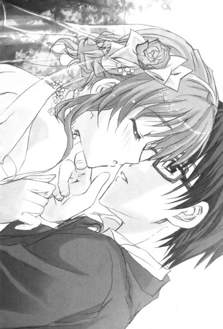
「......」
お互いの吐息と僅かな静寂の後。
「......よかった、です......」
「えっ」
「......そ、その......はじめて、こ、こういうことをした相手が、ゆ、裕人さんで......」
「あ、あー......」
大丈夫かってくらい頬を真っ赤に火照らせて、春香が恥ずかしそうにそう言った。
まあ厳密に言えば北海道に修学旅行に行った時にアクシデントな形で唇同士が触れ合ってしまったことはあったため春香と、その、キス......をするのはこれが二度目なわけだが、その気持ちは俺もまったく同じだ。
初めての相手が春香で本当によかった......
それはもうどこまでも自然に出たつぶやきで心からの気持ちだ。
そんなことを考えながら初めての余韻にゆっくりと身を委ねていると。
「もう少しだけ......こうしていてもいいですか......？」
「え......？」
「もう少しの間だけ......こうして裕人さんの温もりを感じていたいんです......。だいじょうぶ、でしょうか......？」
こっちを見上げて遠慮がちにそう言ってくる。
「ああ、平気だ」
むしろ俺もこのままずっとこうしていたいくらいだしな。
「ありがとうございます......。何ていうかこうしているとすごく安心できるんです......裕人さんの匂い......裕人さんの体温......裕人さんの息づかい......それらを間近で感じることができて......」
「春香......」
「あったかいです......まるで冬の寒い時に入るほかほかのお布団みたいで......。ずっと......美夏や美羽ちゃんたちのことがうらやましかったんです。ああやって天真爛漫に裕人さんと触れ合うことができて......」
息を吐くようにそうつぶやく。
「だったら──気にせずやってくれ」
「え......？」
「そういうことだったら気兼ねなく春香の思うがままにやってくれ。遠慮なんていらない。その......俺は......春香の、〝夫〟なんだからな」
「あ......」
その言葉に春香は嬉しそうに目を瞬かせて。
「は、はい......♪ え、えと、それではさっそく......ご、ごろにゃ～ご......です......♪」
恥ずかしそうに小さくつぶやきながら、さらにぴったりと身体を寄せてきた。
その照れたような甘えたような表情はもうこの上なくかわいらしく愛らしいもので、さらに触れている身体はどこまでも柔らかく心地好くいい香りがして......。
「......」
う、うーむ、なんかものすごく幸せだ......
さっきは自分が幸せにすると言ったのにも関わらずこうして自分が幸せになってしまっている状況はどうなんだろうと少しばかり複雑な心地になっていると。
「あ～、おに～さんとお姉ちゃん、こんなところにいた～！」
「！」「!?」
ふいにそんな声が耳に飛び込んできた。
慌てて二人、飛び跳ねるように離れて距離を取る。
見ればそこにはツインテールを筆頭にして葉月さんや那波さん、アリスのメイドさんたち、玄冬さんに秋穂さんや椎菜たちの姿があった。
「も～、二人とも何やってるの～？ いなくなったのはまあいつものごとく二人でちょっとエスケープでもしてるんだろうな～と思って放っておいたんだけど、いいかげんに帰ってきてくれないと撤収できない......って、何で二人ともそんな顔が赤いの？」
「え、え......？」
「い、いやこれはだな......」
「ん～、なんかヘンだな～。あ～、もしかしてわたしたちに隠れてこっそりキスでもしてたんじゃないの～？」
「！」「!?」
からかうようにそう言ってくる。
だが。
「あ、あー、いや、それは......！」
「え、えと、えと、あ、あのですね......！」
それに答えられずにいると。
「え、なにその微妙な反応......？......え、ま、まさか本当に!?本当に、し、しちゃったの～!?」
ツインテールを発射せんばかりに揺らして美夏が声を上げる。
い、いや美夏、そんな大声で叫んだら......
「な、何だと!?」
予想通りその言葉に激しく反応した者がいた。
全身から燃えたぎるようなオーラを発した玄冬さんは大魔神のごとくゆっくりと顔を上げると。
「い、今何と言った......？ もう一度言ってみるがいい......！私の耳がおかしくなったのでなければ、キ、キキキキ、キスと聞こえたのだが......！」
「げ、玄冬さん、いやこれはですね......」
「お、お父様、あ、あの、その......」
「......！」
俺たちの反応にギリギリギリ......！ と歯を鳴らして腰元から日本刀を抜き放つと。
「は、春香と何をしていた......！ へ、返答によってはこの場で天誅を与えてくれよう！い、言え！言うのだ二人とも......っ......!!」
血の涙を流しながらこっちへ走り寄ってくる。
や、やばい、ここはとりあえずこの場から退散しないと！
「！ ──逃げるぞ、春香！」
「はいっ」
うなずき返した春香の手を取って。
クルリと反対方向を向いて走り出す。
「ま、待て！ 待つのだ！ 答えよ！ いったい何をしていたのだぁあああああ!!」
ドスドスと追いかけてくる玄冬さんが大声でそう問いかけてきて。
それに対する俺たちの返事は、もう決まっていた。
顔を見合わせて二人で思わず笑みを浮かべて。
『──秘密です！』
振り返りながらそう声を揃えて返したのだった。
その後ろで秋穂さんは「あらあら......♪」と笑い、美夏は真っ赤になったまま「あ、あうあう......」と停止状態になっていて、葉月さんや那波さんたちは「......お待ち下さい、詳細をぜひ......！」「これはじ～っくりインタビューしませんと～♪」「──（こくこく！）」と何かやる気になっていて、椎菜たちも「え、え？そ、そうなの......？」「キ、キス......（真っ赤）」「綾瀬っちたちもやるねー♪」「ひゅ～ひゅ～、今日は記念日だ～♪」と盛り上がっていて、ルコと由香里さんは「ふむ、いい酒の肴ができたな」「そうね～ん、でももう一押しほしいところかしら～ん？キスの天ぷらよりもアワビの躍り食いみたいな～♪」と極めていつも通りにアルコール＆セクハラ発言をしている。
──これからもきっとこんな毎日は続いていくんだろう。
騒がしくて賑やかで、ハプニングやサプライズが満載の日常。
俺たちの『秘密』はきっといつまでも終わらないはずだから──
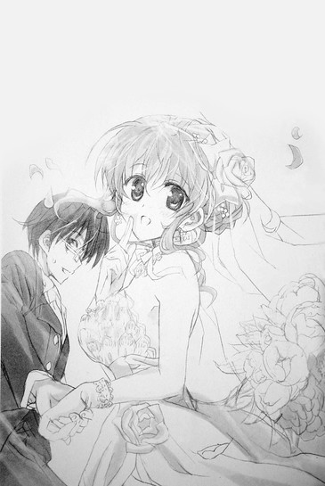
あとがき
こんにちは、五十嵐雄策です。
『乃木坂春香の秘密15巻』をお届けいたします。
──ようやくここまで辿り着くことができました。
本巻は、物語のメインの流れとしてはラストエピソードとなっております。
ネタバレとなってしまうかもなので深くは語りませんが、春香と裕人との関係のターニングポイント。あと少しだけ、後日談的なものは書きたいと思っているのですが、お話としてはここで一区切りとなります。
また今回、エピローグが長くなってしまいましたが、個人的には物語の後日談をしっかり書くのが好きです。
あのキャラはどうなったのか、あのエピソードはその後どう展開していったのか......あえてその部分はハッキリと書かずに想像にお任せするというやり方もありますが、やっぱりある程度は結論が出ているものが好きです。
なのでおそらく次に出るだろう16巻が、諸エピソードの補完的内容となると同時に、これまでの１巻から15巻までの全体としてのエピローグ的な扱いになると思います。この巻がグッドエンドだとしたらグランドエンドみたいな......？色々とまだ書きたくて書いていないエピソードがあるので、できるだけたくさんそれらをお見せすることができればいいなと思っております。
それにしても、この『乃木坂春香の秘密』は自分にとってのデビュー作であり、足かけ七年以上も関わってきた作品です。
その間には色々なこともありましたし、今回を合わせて三度のアニメ化という僥倖に恵まれてきました。
それがいよいよ終わりと思うと感慨深い反面寂しい気持ちもあるのですが、何よりここまでこのお話を続けてこられたのは読んでくださった皆様がいてこそだと思っています。本当に感謝の念でいっぱいです。
──なのでこれから先は、『乃木坂春香の秘密』を刊行するにあたってお世話になった方々に感謝の言葉を。
担当編集の和田さま三木さま。お二人がいらっしゃらなかったらこの『乃木坂春香の秘密』は始まりもしなかっただろうし、こうして無事に幸せな終わりを迎えることもなかったと思います。本当に感謝しております。これからもよろしくお願いいたします。
イラストのしゃあさまじぇんとるさま。しゃあさまの素敵なイラストがあってこそ、このお話は最後の一ピースが埋まったと思っております。またご飯やカラオケにでも行きましょう～！
デザイナｌさまや校閲さま、本が世に出るにあたって尽力してくださった皆様。
またデビュー時から応援してくれて支えてくれた両親と実家のマルチーズ。感謝しています！
そして何よりも、繰り返しになってしまうかもですが、やはりこれまでの既刊を、この本を手に取ってくださった全ての方々に最大限の感謝の気持ちを。
本当にありがとうございました！
そしてそして、最後になって書くのもどうかと思うのですが、個人的に Twitter とブログをやっております。
もしも感想などをいただけるようでしたら、お手紙のほかにも、こちらにコメントなどをくださればと思います。
Twitter:@syaruruu
ブログ：『She loves 雄』http://ameblo.jp/syaruruu/
それでは、またお会いできることを願って──
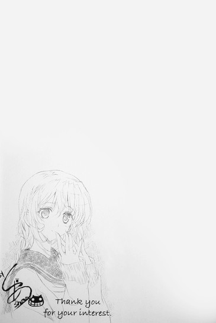
底本：乃木坂春香の秘密⑮
五十嵐雄策
二〇一二年一月十日 初版発行
入力：
校正：鹿仔
底本４８頁１０行・ｔｘｔ５４８行
お前はたった一人のこの世で平等に血を分けた姉弟：「お前はたった一人のこの世で平等に血を分けた弟」か「お前とはたった一人のこの世で平等に血を分けた姉弟」？
底本１７６頁６行・ｔｘｔ２１８１行
空気の層を抜けて雲を抜けて：地上発射で大気層を抜けた後に雲を抜けるということは現在降下していることに。「雲を抜けて空気の層を抜けて」。
底本１８０頁６行・ｔｘｔ２２２６行
冬眠中のアライグマ：正確には冬眠せず、冬ごもり（半冬眠）をすることがあるらしい。
底本１８８頁２行・ｔｘｔ２３２９行
シャケ獲りを否定されたツキノワグマ：鮭を食べない「ツキノワグマ」は否定されてもあまり困ることはないと思われる。鮭好きの「ヒグマ」のほうが否定されるとよりうちひしがれるのでは？
底本１９１頁６行・ｔｘｔ２３７８行
即座に爆発する：条件が揃わないと粉塵爆発しない。濃度が重要。
底本１８８頁６行・ｔｘｔ２３８７行
ウエディング：エピローグでは「ウエディング」、エピローグ前（既刊含む）は「ウェディング」。